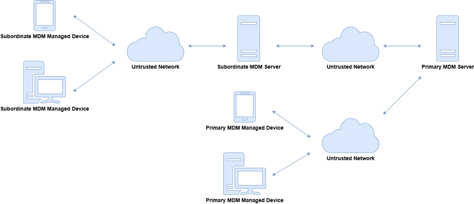

first first | Daisy Diff compare report.
Click on the changed parts for a detailed description. Use the left and right arrow keys to walk through the modifications. |
last  |
Protection Profile for Mobile Device ManagementPP-Module for MDM Agent
This page is best viewed with JavaScript enabled!

Version:
52.0
-Draft
20262025-
0301-
2431
National Information Assurance Partnership
Revision History
| 1.0 | 20132019-1003-2101 | Initial Releasepublication as PP-Module. |
| 1.1 | 2014-02-07 | Typographical changes and clarifications to front-matter |
| 2.0 | 2014-12-31 | Separation of MDM agent SFRs
Updated cryptography, protocol, X.509 requirements.
Updated management functions to match MDF PP v2.0.
Included SSH as a remote administration protocol.
Removed IPsec as protocol to communicate to MDM agent.
Added X509 enrollment objective requirement.
Added Optional Mobile Application Store requirements. |
| 3.0 | 2016-11-21 | Updates to align with Technical Decisions
Added requirements to support BYOD use case
Removed IPsec and SSH requirements, which are now contained in EPs |
| 4.0 | 2018-09-24 | Updates to align with Technical Decisions
Removed platform dependency
Removed TLS SFRs and use the TLS Functional Package
Allowed for a distributed TOE |
| 52023-12-11 | Added PP_GPOS base and incorporated NIAP Technical Decisions. |
| 2.0 | 2026-0304-2414 | Updates to align with Technical Decisions
Updates to align with
Updates to support subordinate MDM
Updates to reference TLS and X.509 functional packages
Updates cryptographic requirements to mandate CNSA algorithms
Re-labeling of SFRs for naming consistency
-
and incorporated NIAP Technical Decisions.
-
Moved FAU_SEL.1/AGENT to optional.
|
Contents
2.0 National Information Assurance Partnership 2025-01-31 Mobile Device Management; MDM; MDM Agents 1.0 2019-03-01 Initial publication as PP-Module. 1.1 2023-12-11 Added PP_GPOS base and incorporated NIAP Technical Decisions. 2.0 2026-04-14
-
Converted to CC:2022 and incorporated NIAP Technical Decisions.
-
Moved FAU_SEL.1/AGENT to optional.
https://github.com/commoncriteria/tls master https://www.niap-ccevs.org/static_html/protection-profile/439/-439-/index.html https://github.com/commoncriteria/X509 master https://www.niap-ccevs.org/protectionprofiles/511
1 Introduction
1.1 Overview
Mobile Device Management (MDM) products allow enterprises to apply security policies to managed devices (MDs), such as smartphones, tablets, and workstations. The purpose of these policies is to establish a security posture adequate to permit MDs to process enterprise data and connect to enterprise network resources.
This document provides a baseline set of Security Functional Requirements (SFRs) for an MDM system, which is the Target of Evaluation (TOE). The MDM system is only one component of an enterprise deployment of MDs. Other components, such as the MD platforms, which enforce the security policies and network access control servers are out of scope The scope of the MDM Agent Protection Profile Module (PP-Module) is to describe the security functionality of a mobile device management (MDM) agent in terms of Common Criteria (CC) and to define functional and assurance requirements for such products. This PP-Module is intended for use with the following base PPs:
-
Protection Profile for Mobile Device Management (PP_MDM), Version 5.0
-
Protection Profile for Mobile Device Fundamentals (PP_MDF), Version 4.0
-
Protection Profile for General Purpose Operating Systems (PP_GPOS), Version 5.0
These s are valid because an MDM agent is either a third-party application manufactured by the MDM server vendor or is a native application deployed on a mobile device or GPOS.
1.2 Terms
The following sections list Common Criteria and technology terms used in this document.
1.2.1 Common Criteria Terms
|
Assurance
| Grounds for confidence that a TOE meets the SFRs [CC]. |
|
Base Protection Profile (Base-PP)
| Protection Profile used as a basis to build a PP-Configuration. |
|
Collaborative Protection Profile (cPP)
| A Protection Profile developed by international technical communities and approved by multiple schemes. |
|
Common Criteria (CC)
| Common Criteria for Information Technology Security Evaluation (International Standard ISO/IEC 15408). |
|
Common Criteria Testing Laboratory
| Within the context of the Common Criteria Evaluation and Validation Scheme (CCEVS), an IT security evaluation facility accredited by the National Voluntary Laboratory Accreditation Program (NVLAP) and approved by the NIAP Validation Body to conduct Common Criteria-based evaluations. |
|
Common Evaluation Methodology (CEM)
| Common Evaluation Methodology for Information Technology Security Evaluation. |
|
Direct Rationale
| A type of Protection Profile, PP-Module, or Security Target in which the security problem definition (SPD) elements are mapped directly to the SFRs and possibly to the security objectives for the operational environment. There are no security objectives for the TOE. |
|
Distributed TOE
| A TOE composed of multiple components operating as a logical whole. |
|
Extended Package (EP)
| A deprecated document form for collecting SFRs that implement a particular protocol, technology, or functionality. See Functional Packages. |
|
Functional Package (FP)
| A document that collects SFRs for a particular protocol, technology, or functionality. |
|
Operational Environment (OE)
| Hardware and software that are outside the TOE boundary that support the TOE functionality and security policy. |
|
Protection Profile (PP)
| An implementation-independent set of security requirements for a category of products. |
|
Protection Profile Configuration (PP-Configuration)
| A comprehensive set of security requirements for a product type that consists of at least one Base-PP and at least one PP-Module. |
|
Protection Profile Module (PP-Module)
| An implementation-independent statement of security needs for a TOE type complementary to one or more Base-PPs. |
|
Security Assurance Requirement (SAR)
| A requirement to assure the security of the TOE. |
|
Security Functional Requirement (SFR)
| A requirement for security enforcement by the TOE. |
|
Security Target (ST)
| A set of implementation-dependent security requirements for a specific product. |
|
Target of Evaluation (TOE)
| The product under evaluation. |
|
TOE Security Functionality (TSF)
| The security functionality of the product under evaluation. |
|
TOE Summary Specification (TSS)
| A description of how a TOE satisfies the SFRs in an ST. |
1.2.2 Technical Terms
|
API Application Programming Interface (API)
| A specification of routines, data structures, object classes, and variables that allows an application to make use of services provided by another software component, such as a library. APIs are often provided for a set of libraries included with the platform. |
|
Administrator
| The person who is responsible for management activities, including setting the policy that is applied by the enterprise on the MD. |
|
Data
| Program or application or data files that are stored or transmitted by a server or MD. |
|
Data Encryption Key (DEK)
| A key used to encrypt data-at-rest. |
|
Developer Modes
| States in which additional services are available to a user in order to provide enhanced system access for debugging of software. |
| device. |
|
Enrolled State
| The state in which a MD device is administered and configured managed by a policy from an MDM. |
|
Enrollment over Secure Transport (EST)
| Cryptographic protocol that describes an X.509 certificate management protocol targeting public key infrastructure (PKI) clients that need to acquire client certificates and associated certificate authority (CA) certificates. |
|
Enterprise Applications
| Applications that are provided and managed by the enterprise as opposed to a public application store. |
|
Enterprise Data
| Any data residing in enterprise servers or temporarily stored on MDs to which the MD user is allowed access according to the security policy defined by the enterprise and implemented by the administrator. |
|
Key Encryption Key (KEK)
| A key that is used to encrypt other keys, such as DEKs or storage repositories that contain keys. |
|
Locked State
| Device state where the device is powered on but most functionality is unavailable for use without authentication. |
|
General Purpose Operating System (GPOS)
| A class of OSes designed to support a wide-variety of workloads consisting of many concurrent applications or services. Typical characteristics for OSes in this class include support for third-party applications, support for multiple users, and security separation between users and their respective resources. General Purpose Operating Systems also lack the real-time constraint that defines Real Time Operating Systems which are typically used in routers, switches, and embedded devices. |
|
Managed Device (MD)
| A device enrolled and managed, or to be enrolled and managed, by an MDM system. This device is a mobile device typically evaluated under PP_MDF or a device with a manageable general-purpose operating system utilizing a GPOS typically evaluated under PP_GPOS. |
|
Managed Device User
| The person who uses and is held responsible for an MD. a managed device. Synonymous with 'local user' in the context of a managed device. |
|
Mobile Application Store (MAS)
| An MDM feature that allows for an organization to substitute a device manufacturer's application store for one that restricts what applications are made available to users. |
|
Mobile Device
| A device which is composed of a hardware platform and its system software. The device typically provides wireless connectivity and may include software for functions like secure messaging, email, web, VPN connection, and VoIP (Voice over IP), for access to the protected enterprise network, enterprise data and applications, and for communicating to other MDs. |
|
Mobile Device Management (MDM)
| Products that allow enterprises to apply security policies to MDsend user devices. This system consists of two primary components: the MDM server and the MDM agent. |
|
Operating System (OS)
| Software which runs at the highest privilege level and can directly control hardware resources. These include mobile device and general purpose operating systems (GPOS). Mobile device operating systems have general purpose functionality but are typically integrated more tightly with purpose-built mobile hardware and limit a user's ability to interact with the operating system. Modern mobile devices typically have at least two primary operating systems: one which runs on the cellular baseband processor and one which runs on the application processor. The platform of the application processor handles most user interaction and provides the execution environment for apps. The platform of the cellular baseband processor handles communications with the cellular network and may control other peripherals. The term OS, without context, may be assumed to refer to the platform of the application processor. |
| Powered-Off
Unenrolled State
| MD shutdown state. |
|
Protected Data
| All non-TSF data on the MD, including user or enterprise data. Protected data is encrypted while the MD is in the powered-off state. This includes keys in software-based storage. May overlap with sensitive data. |
|
Root Encryption Key (REK)
| A key tied to a particular device that is used to encrypt all other keys for that device. |
|
Sensitive Data
| Data that is encrypted by the MD. May include all user or enterprise data or may be data for specific applications such as emails, messaging, documents, calendar items, or contacts. May be protected while the MD is in the locked state. Must include at minimum some keys in software-based key storage. |
|
Subordinate MDM Server
| The subordinate MDM server is used to facilitate communications between a primary MDM server and an MDM agent on a managed device. The subordinate MDM server may modify/interpret the MDM policy sent from the primary MDM server to the MDM agent, using well-defined rules, and re-sign the resulting MDM policy for delivery to the MDM agent. |
|
Trust Anchor Database
| A list of trusted root Certificate Authority certificates. |
|
Unenrolled State
| Device state when it is The state in which a device is not managed by an MDM system. |
| Unlocked State
User
| Device state where it is powered on and the user has been authenticated. The device functionality is available for use by the user.See Managed Device User. |
1.3 Compliant Targets of Evaluation
The Mobile Device Management ( MDM ) system consists of two primary components: the MDM server software and the MDM agent. Optionally, the MDM system may consist of a separate Mobile Application Store (MAS) server or a subordinate MDM server.
1.3.1 TOE Boundary
The MDM system operational environment consists of the MD on which the MDM agent resides, the platform on which the MDM server runs, and an untrusted wireless network over which they communicate, as pictured below.
The MDM server is software (an application, service, etc.) on a general-purpose platform, a network device, or cloud architecture executing in a trusted network environment. The MDM server provides administration of MD policies and reporting on the device behavior. The MDM server is responsible for managing device enrollment, configuring and sending policies to the MDM agents, collecting reports on device status, and sending commands to the agents. The MDM server may be standalone or distributed, where a distributed TOE is one that requires multiple distinct components to operate as a logical whole in order to fulfill the requirements of this PP (a more extensive description of distributed MDMs is given in section 3).
The MDM agent establishes a secure connection back to the MDM server controlled by an enterprise administrator and configures the MD per the administrator's policies. The MDM agent is addressed in the PP-Module for Mobile Device Management Agent, version 1.1. If the MDM agent is installed on a MD as an application developed by the MDM developer, the PP-Module extends this PP and is included in the TOE. In this case, the TOE security functionality specified in this PP must be addressed by the MDM agent in addition to the MDM Server. Otherwise, the MDM agent is provided by the MD vendor and is out of scope of this PP; however, MDMs are required to indicate the device platforms supported by the MDM server and must be tested against the native MDM agent of those platforms.
The Mobile Application Store (MAS) hosts applications for the enterprise, authenticates agents, and securely transmits applications to enrolled MDs. The MAS functionality can be included as part of the MDM server Software or can be logically distinct. If the MAS functionality is on a physically separate server, then the TOE is distributed with the MDM server and MAS server being separate components.
The Subordinate MDM Server is an optional, physically separate, server that sits between a primary MDM server and an MDM agent on a managed device. The purpose of the subordinate MDM server is to forward signed policies from a primary MDM server to an MDM agent on a managed device for which the subordinate MDM is responsible. The subordinate MDM server can either directly pass these signed policies to the managed device, or can interpret the policy into a different format if necessary. This interpretation process will follow well defined rules to ensure that the resulting interpreted policy matches the actions defined in the original policy. This interpreted policy is signed by the subordinate MDM server for delivery to the MDM agent. Any alerts or notifications generated by an MDM agent will be passed by the subordinate MDM server back to the primary MDM server to alert the enterprise administrators.

Figure 2: MDM System with Subordinate MDMThis PP-Module specifically addresses the MDM agent, which establishes a secure connection back to the MDM server, from which it receives policies to enforce on the device. Optionally, the MDM agent interacts with a MAS server to download and install enterprise-hosted applications.
A compliant MDM agent is installed on a device as an application (supplied by the developer of the MDM server software) or is part of a mobile device or GPOS. This PP-Module builds on PP_MDF, PP_MDM, or PP_GPOS. A TOE that claims conformance to this PP-Module must also claim conformance to one of those PPs as its base PP. To mitigate the threats that this PP-Module defines, a compliant TOE is obligated to implement the functionality the base PP requires, along with the additional functionality defined in this PP-Module.
This PP-Module shall build on PP_MDF if the TOE is a native part of a mobile operating system. The TOE for this PP-Module combined with PP_MDF is the mobile device itself plus the MDM agent. If the MDM agent is part of the MD’s OS, the MDM agent may present multiple interfaces for configuring the MD, such as a local and remote interface. MDM agents conforming to this PP-Module must at least offer an interface with a trusted channel that serves as one piece of an MDM system. Conformant MDM agents may also offer other interfaces, and the configuration aspects of these additional interfaces are in scope of this PP-Module.
This PP-Module shall build on PP_MDM if the TOE is a third-party application that is provided with an MDM server and installed on a device by the user after acquiring the device. The distributed TOE for this PP-Module combined with PP_MDM is the entire MDM environment, which includes both the MDM server and the MDM agent. Even though the device itself is not part of the TOE, it is expected to be evaluated against the MDF or PP_GPOS so that its baseline security capabilities can be assumed to be present.
This PP-Module shall build on PP_GPOS if the TOE is a native part of a non-mobile GPOS. The TOE for this PP-Module combined with PP_GPOS is the operating system itself plus the MDM agent. If the MDM agent is part of the OS, the MDM agent may present multiple interfaces for configuring the OS, such as a local and remote interface. The MDM agent does not need to provide a dedicated management interface that is separate from the means by which administrators interact with the OS as a whole. However, if it does provide any such interfaces, the configuration aspects of these additional interfaces are in scope of this PP-Module.
1.3.1 TOE Boundary
Figure 1 shows a high-level example of the PP-Module TOE boundary and its OE where the TOE runs on a mobile device. A use case where the TOE runs on a GPOS is identical aside from the specific type of device on which it runs. As stated above, the MDM agent may either be provided as part of the device itself (shown in red) or distributed as a third-party application from the developer of the MDM server software (shown in blue).
The MDM agent must closely interact with or be part of the mobile device or OS platform so that it can establish policies and to perform queries about device status. The mobile device and OS platform, in turn, have their own security requirements specified in PP_MDF and PP_GPOS, respectively.
1.4 Use Cases
This PP-Module defines four use cases:
-
[USE CASE 1] Enterprise-owned device for general-purpose enterprise use
-
An enterprise-owned device for general-purpose business use is commonly called Corporate-Corporately Owned, Personally - Enabled (COPE). This use case entails a significant degree of enterprise control over configuration and software inventory. Enterprise administrators use an MDM product to establish policies on the MDs devices prior to user issuance. Users may use internet connectivity to browse the web, access corporate mail, or run enterprise applications, but this connectivity may be under significant control of the enterprise. The user may also be expected to store data and use applications for personal, non-enterprise use. The enterprise administrator uses the MDM product to deploy security policies and query MD device status. The MDM may issue commands for remediation actions.
A TOE that conforms to this use case is expected to make the following SFR claims:
If an SFR is not listed here, this use case does not mandate or prohibit any of its available selections or assignments.
-
[USE CASE 2] Enterprise-owned device for specialized, high-security use
-
An enterprise-owned device with intentionally limited network connectivity, tightly controlled configuration, and limited software inventory is appropriate for specialized, high-security use cases. As in the previous use case, the MDM product is used to establish such policies on MDs devices prior to issuance to users. The device may not be permitted connectivity to any external peripherals. It may only be able to communicate via its Wi-Fi or cellular radios with the enterprise-run network, which may not even permit connectivity to the internet. Use of the device may require compliance with usage policies that are more restrictive than those in any general-purpose use case, yet may mitigate risks to highly sensitive information.
A TOE that conforms to this use case is expected to make the following SFR claims:
If an SFR is not listed here, this use case does not mandate or prohibit any of its available selections or assignments
For changes to included SFRs, selections, and assignments required for this use case, see .
-
[USE CASE 3] Personally
-
-
owned device for personal and enterprise use
-
A personally - owned device, which is used, for both personal activities and enterprise data is commonly called Bring Your Own Device (BYOD). The device may be provisioned for access to enterprise resources after significant personal usage has occurred. Unlike in the enterprise-owned cases, the enterprise is limited in what security policies it can enforce because the user purchased the device primarily for personal use and is unlikely to accept policies that limit the functionality of the device.
However, because the enterprise allows the user full (or nearly full) access to the enterprise network, the enterprise will require certain security policies, for example a password or screen lock policy, and health reporting, such as the integrity of the MD system software, before allowing access. The administrator of the MDM can establish remediation actions, such as wipe of the wiping enterprise data , for non-compliant devices. These controls could potentially be enforced by a separation mechanism built-in to the device itself to distinguish between enterprise and personal activities, or by a third-party application that provides access to enterprise resources and leverages security capabilities provided by the MDdevice.
A TOE that conforms to this use case is expected to make the following SFR claims:
If an SFR is not listed here, this use case does not mandate or prohibit any of its available selections or assignments
For changes to included SFRs, selections, and assignments required for this use case, see .
-
[USE CASE 4] Personally
-
-
owned device for personal and limited enterprise use
-
A personally - owned device may also be given access to limited enterprise services such as enterprise email. The enterprise may not need to enforce any security policies on this device because Because the user does not have full access to the enterprise or enterprise data, the enterprise may not need to enforce any security policies on the device. However, the enterprise may want secure email and web browsing with assurance that the services being provided to those clients by the device are not compromised. No specific SFR claims are mandated or prohibited for a TOE that meets this Based on the OE and the acceptable risk level of the enterprise, those SFRs outlined in Section 5 of this PP-Module are sufficient for the secure implementation of this BYOD use case.
1.5 Package Usage
This section contains selections and assignments that are required when the listed Functional Packages are claimed by this PP-Module.
Functional Package for X.509, Version 1.0
Certificate Verification Required in FIA_XCU_EXT.1.1
The ST author shall select the option to verify identities in certificates in FIA_XCU_EXT.1.1. If the TOE implements a certificate authority, the ST author shall select the option to assert identities in certificates.
Restrictions on Certificate Functions in FDP_CER_EXT.1.1/OLTLeaf
This usage requirement applies only if the TOE implements a certificate authority. The PP does not define S/MIME functionality, therefore the ST author shall not select the option to implement a certificate profile supporting this protocol.
Restrictions on Certificate Functions in FDP_CER_EXT.1.2/OLTLeaf
This usage requirement applies only if the TOE implements a certificate authority. The PP does not define S/MIME functionality, therefore the ST author shall not select the option to set extendedKeyUsage bits for email protection.
Generation of Certificate Status Required in FDP_CSIR_EXT.1.1
This usage requirement applies only if the TOE implements a certificate authority. The ST author shall only select the option to generate certificate status information in FDP_CSIR_EXT.1.1.
Restrictions on Signature Algorithms in FDP_OCSP_EXT.1.1
This usage requirement applies only if the TOE implements a certificate authority. The TOE must use CNSA-compliant signature algorithms. Thus, the ST author shall not select the use of SHA-512 or secp521 for OCSP response signatures.
Required Iteration Names for FIA_X509_EXT.1
A TOE may utilize FIA_X509_EXT.1 as defined in the package in two different manners in this PP. Use of the requirement for validating X.509 certificates presented from outside the TOE boundary shall be iterated as FIA_X509_EXT.1/External. Use of the requirement for validating X.509 certificates presented between components of a distributed TOE shall be iterated as FIA_X509_EXT.1/Internal.
Limitations on Signature Algorithms in FIA_X509_EXT.1.1
This usage requirement applies to both internal and external iterations of FIA_X509_EXT.1. The TOE must use CNSA-compliant signature algorithms. Thus, the ST author shall select no other algorithms outside of those specified in RFC 8603 for certificate or CRL signatures. Additionally, the TOE shall not use ECDSA with SHA-512 signatures for OCSP responses, and shall utilize no other algorithms for OCSP responses.
Required Extension Processing for FIA_X509_EXT.1.2
This usage requirement applies to both internal and external iterations of FIA_X509_EXT.1. The ST author shall select the options to process the basicConstraints and extendedKeyUsage extensions. Other extensions may be selected as appropriate without restriction.
Restrictions on Revocation Functionality for FIA_X509_EXT.1.3
This usage requirement applies in different manners to the different iterations of FIA_X509_EXT.1.
For the external iteration of FIA_X509_EXT.1, the ST author shall select only from options involving CRL or OCSP in FIA_X509_EXT.1.3.
For the internal iteration of FIA_X509_EXT.1, the ST author shall not select the option to validate certificate revocation status by validity period. Other selections may be selected without restriction.
Restrictions on Revocation Information Retrieval for FIA_X509_EXT.1.4
This usage requirement applies in different manners to the different iterations of FIA_X509_EXT.1.
For the external iteration of FIA_X509_EXT.1, the ST author shall not select to not obtain revocation status information for any reason, utilize local revocation information or utilize a network connection directly to a CA. Revocation information must be retrieved via an option involving CRL or OCSP.
For the internal iteration of FIA_X509_EXT.1, the ST author shall not select the option to determine that the certificate expires within a certain period.
Restrictions on Acceptable Key Usage Values for FIA_X509_EXT.1.5
This usage requirement applies to both internal and external iterations of FIA_X509_EXT.1. The ST author shall not select the option to pass certificate information to supported functions and shall select the option to verify certificates by evaluating the extendedKeyUsage field in the leaf certificate. The ST author shall additionally not select the option to validate certificates against any rules for S/MIME.
Restrictions on Acceptable Functions for FIA_X509_EXT.2.1
The ST author shall not select options that utilize the S/MIME protocol.
1.6 Product Features Mapped to Implementation-dependent Requirements
The features enumerated below, if implemented by the TOE, require that additional SFRs be claimed in the ST.
1.6.1 Key Encapsulation Support
A conformant TOE is required to implement trusted communications. Depending on the specific protocols used and the supported connection parameters for these protocols, it may be necessary to implement a key encapsulation algorithm as part of key establishment. In addition to the SFR referenced here, the corresponding selection for key encapsulation shall be made in FCS_CKM.2.1, which then requires the inclusion of FCS_COP.1/KeyEncap.
Package Usage guidance defined in the TOE's relevant base PP applies to the usage of the packages for this module, unless explicitly stated otherwise in this section.
-
Functional Package for Transport Layer Security (TLS), Version 2.1
-
TLS or DTLS Client Functionality Required
This usage requirement applies to all implementations of TLS that support the MDM enrollment and MDM communication channels. In order to support the objectives of these channels, the ST author shall claim support for TLS or DTLS as a client. The selection shall correspond with the protocol(s) selected in any of the following SFRS: FTP_ITC_EXT.1.1/MDFCHANNEL, FTP_TRP.1/MDFENROLL, FTP_ITC_EXT.1.1/OSCHANNEL, FTP_TRP.1/OSENROLL.
-
TLS or DTLS Mutual Authentication Required for MDM Traffic Channel
The communication channel for MDM traffic following enrollment (as defined in FTP_ITC_EXT.1/MDFCHANNEL and FTP_ITC_EXT.1/OSCHANNEL) requires the use of mutually authenticated TLS or DTLS client functionality. Since the TOE is expected to rely on the cryptographic protocol functionality defined in the claimed base PP, the ST author shall ensure that mutual authentication is included in the TLS or DTLS client claims made as part of conformance to the base PP. Depending on the base PP, this may already be required.
1.6 Implementation-Dependent Features
If the TOE implements the following features, then the SFRs associated with the features must be claimed.
1.6.1 Platform Auditing
If the TOE is deployed on a mobile device or GPOS platform (i.e., the TOE does not use PP_MDM as its base PP), it is expected to rely on the underlying platform for secure storage of its audit records.
If this feature is implemented by the TOE, the following requirements must be claimed in the ST:
1.6.2
Key Wrap SupportA conformant TOE is required to implement trusted communications. Depending on the specific protocols used and the supported connection parameters for these protocols, it may be necessary to implement a key wrap algorithm as part of key establishment. In addition to the SFR referenced here, the corresponding selection for key wrapping shall be made in FCS_CKM.2.1, which then requires the inclusion of FCS_COP.1/KeyWrap.
If this feature is implemented by the TOE, the following requirements must be claimed in the ST:
1.6.3 Key Agreement Support
A conformant TOE is required to implement trusted communications. Depending on the specific protocols used and the supported connection parameters for these protocols, it may be necessary to implement one or more key agreement algorithms as part of key establishment
Supports Network Reachability Thresholds
An MDM agent may support the ability to determine if it has been out of connectivity with an MDM server for too long. The configuration of the number of allowed missed reachability events or time limit since last successful connection with the MDM server is handled in the MDM server's configuration policy of the MDM agent (the first selection of function 56 in FMT_SMF.1.1/SERVER_CONF_AGENT within PP_MDM). This feature applies if either the TOE claims PP_MDM as its base PP and management function 56 is claimed, or if the TOE's OE includes an MDM server that was separately validated against PP_MDM and that MDM server's ST claims management function 56.
If this feature is implemented by the TOE, the following requirements must be claimed in the ST:
- Conformance Statement
-
An ST must claim exact conformance to this PP-Module.
-
The evaluation methods used for evaluating the TOE are a combination of the workunits defined in [CEM] as well as the Evaluation Activities for ensuring that individual SFRs and SARs have a sufficient level of supporting evidence in the Security Target and guidance documentation and have been sufficiently tested by the laboratory as part of completing ATE_IND.1. Any functional packages this PP claims similarly contain their own Evaluation Activities that are used in this same manner.
- CC Conformance Claims
-
This PP-Module is conformant to Part 2 (extended) and Part 3 (conformantextended) of Common Criteria CC:2022, Revision 1.
- PP Claim
-
This PP-Module does not claim conformance to any Protection Profile.
-
The following PPs and PP-Modules are allowed to be specified in a PP-Configuration with this PP-Module:
-
Protection Profile for Application SoftwareGeneral Purpose Operating Systems, Version 25.0PP-Module
-
for MDM AgentProtection Profile for Mobile Device Fundamentals, Version 24.0
-
Protection Profile for Mobile Device Management, Version 5.0
-
PP-Module for VPN Client, Version version 3.0
-
Package Claim
-
-
This PP is Functional Package for Secure Shell Version 2.0 conformant.
-
This PP PP-Module for Bluetooth, version 2.0
-
PP-Module for WLAN Client, version 2.0
-
cPP-Module for Biometric Enrolment and Verification, version 2.0
-
Package Claim
-
-
This PP-Module is Functional Package for Transport Layer Security Version 2.1 conformant.
-
This PP-Module is Functional Package for X.509 Version 1.0 conformant.
-
This PP-Module does not conform to any assurance packages.
-
The functional packages to which the PP conforms may include SFRs that are not mandatory to claim for the sake of conformance. An ST that claims one or more of these functional packages may include any non-mandatory SFRs that are appropriate to claim based on the capabilities of the TSF and on any triggers for their inclusion based inherently on the SFR selections made.
3
Introduction to Distributed TOEs This PP includes support for distributed MDM TOEs. MDMs can sometimes be composed of multiple components operating as a logical whole. Frequently we see this architecture when dealing with products hosted in the cloud and offered as Software as a Service. There are a number of different architectures; but fundamentally, they are variations of the following model where the SFRs of this PP can only be fulfilled if the components are deployed and operate together. To be considered a distributed TOE, a minimum of two interconnected components are required.
3.1 Registration of Distributed TOE Components
When dealing with a distributed TOE, a number of separate components need to be brought together in the operational environment in order to create the TOE. This requires that trusted communications channels are set up between certain pairs of components (it is assumed that all components need to communicate with at least one other component, but not that all components need to communicate with all other components). The underlying model for creation of the TOE is to have a "registration process" in which components "join" the TOE. The registration process starts with two components, one of which (the "joiner") is about to join an existing TOE by registering with the other (the "gatekeeper"). The two components will use one or more specified authentication and communication channel options so that the components authenticate each other and protect any sensitive data that is transmitted during the registration process (e.g., a key might be sent by a gatekeeper to the joiner as a result of the registration). The following figures illustrate the three supported registration models. Figure 3 illustrates a distributed TOE registration approach which uses an instance of FPT_ITT.1/INTRA_XFER / FPT_ITT.1/INTRA_XFER_AGENT or FTP_ITC.1/OE_XFER_IT to protect the registration exchange.
The second approach (Figure 4) uses an alternative registration channel and supports use cases where the channel relies on environmental security constraints to provide the necessary protection of the registration exchange.
The final approach (Figure 5) supports use cases where registration is performed manually through direct configuration of both the Joiner and Gatekeeper devices. Once configured, the two components establish an internal TSF channel that satisfies FPT_ITT.1/INTRA_XFER / FPT_ITT.1/INTRA_XFER_AGENT or FTP_ITC.1/OE_XFER_IT.
In each case, during the registration process, the administrator must positively enable the joining components before it can act as part of the TSF. Figure 6 illustrates the approaches that this enablement step may take;
Note that in the case where no registration channel is required, that is the joiner and gatekeeper are directly configured (Figure 5), enablement is implied as part of this direct configuration process.
After registration, the components will communicate between themselves using a normal SSH, TLS, DTLS, IPsec, or HTTPS channel (which is specified in an ST as an instance of FPT_ITT.1/INTRA_XFER / FPT_ITT.1/INTRA_XFER_AGENT or FTP_ITC.1/OE_XFER_IT in terms of Section 6 Security Requirements and Table t-audit-optional ). This channel for inter-component communications is specified at the top level with the new (extended) SFR FCO_CPC_EXT.1 and is in addition to the other communication channels required for communication with entities outside the TOE (which are specified in an ST as instances of FTP_ITC.1/OE_XFER_IT and FTP_TRP.1/TRUSTPATH_REM_ADMIN.
3.2 Allocation of Requirements in Distributed TOEs
For a distributed TOE, the security functional requirements in this PP need to be met by the TOE as a whole, but not all SFRs will necessarily be implemented by all components. The following categories are defined in order to specify when each SFR must be implemented by a component:
-
All Components ("All") - All components that comprise the distributed TOE must independently satisfy the requirement.
-
At least one Component ("One") - This requirement must be fulfilled by at least one component within the distributed TOE.
-
Feature Dependent ("Feature Dependent") - These requirements will only be fulfilled where the feature is implemented by the distributed TOE component (note that the requirement to meet the PP as a whole requires that at least one component implements these requirements if they are specified in Section 6 Security Requirements).
Table 1 specifies how each of the SFRs in this PP must be met, using the categories above.
Table 1: Security Functional Requirements for Distributed TOEs
Only those SFRs included in the ST are required to be audited. The ST for a distributed TOE must include a mapping of SFRs to each of the components of the TOE. (Note that this deliverable is examined as part of the ASE_TSS.1 and AVA_VAN.1 Evaluation Activities.) The ST for a distributed TOE may also introduce a "minimum configuration" and identify components that may have instances added to an operational configuration without affecting the validity of the CC certification. Appendix E describes Evaluation Activities relating to these equivalency aspects of a distributed TOE (and hence what is expected in the ST).
3.3 Security Audit for Distributed TOEs
For distributed TOEs, the handling of audit information might be more complicated than for TOEs consisting only of one component. There are a few basic requirements to be fulfilled:
-
Every component must be able to generate audit information.
-
Every component must be able to buffer audit information and forward it to another TOE component or an external audit server. Optionally, each component may store audit information locally.
-
For the overall TOE it must be possible to send out audit information to an external audit server.
In general, every component must be able to generate its own audit information. It would be possible that every component also stores its own audit information locally as well as every component could be able to send out audit data to an external audit server. It would also be sufficient that every component would be able to generate its own audit data and buffer it locally before the information is sent out to one or more other TOE components for local storage or transmission to an external audit server. For the transfer of audit records between TOE components the secure connection via FTP_ITC.1/OE_XFER_IT or FPT_ITT.1/INTRA_XFER / FPT_ITT.1/INTRA_XFER_AGENT must be used.
Such a solution would still be suitable to fulfill the requirement that all audit-related SFRs have to be fulfilled by all TOE components, although formally not every component would support local storage or transfer to an external audit server itself.
Regarding the establishment of inter-TOE communication, error conditions as well as successful connection and tear-down events should be captured by both ends of the connection.
All TOE components shall be able to generate its own audit data according to the audit data generation requirements (FAU_GEN.1/AUDITGEN and, if MAS server functionality is supported, FAU_GEN.1/MAS_SERVER) for all SFRs that it implements. For distributed TOEs, a mapping shall be provided to show which auditable events according to these requirements are covered by which components (also giving a justification that the records generated by each component cover all the SFRs that it implements). The overall TOE has to provide audit information about all events defined for the audit generation requirements. As a result, at least one TOE component has to be assigned to every auditable event defined in these requirements. The part of the mapping related to Table 3 shall be consistent with the mapping of SFRs to TOE components for ASE_TSS.1 in the sense that all components defined as generating audit information for a particular SFR should also contribute to that SFR in the mapping for ASE_TSS.1. This applies not only to audit events defined for mandatory SFRs but also to all audit events for optional, selection-based, and objective SFRs as defined in Table t-audit-optional, Table t-audit-objective, and Table t-audit-sel-based.
If one or more of the optional audit components FAU_STG.1 or FAU_STG.2 are selected in the ST derived from this PP, then the SFR mapping for ASE_TSS.1 must include a specific identification of the TOE components to which they apply.
4 Security Problem Definition
4.1 Threats
-
T.MALICIOUS_APPS
-
Malicious or flawed application threats exist because apps loaded onto an MD may include malicious or exploitable code. An administrator of the MDM or MD user may inadvertently import malicious code, or an attacker may insert malicious code into the TOE, resulting in the compromise of TOE or TOE data.
-
T.NETWORK_ATTACK
-
An attacker may masquerade as an MDM server and attempt to compromise the integrity of the MD by sending malicious management commands.
-
T.NETWORK_EAVESDROP
-
An attacker is positioned on a communications channel or elsewhere on the network infrastructure. Attackers may monitor and gain access to data exchanged between the MDM server and other endpoints.
-
T.PHYSICAL_ACCESS
-
The MD may be lost or stolen, and an unauthorized individual may attempt to access user data. Although these attacks are primarily directed against the MD platform, the TOE configures features on MDs that mitigate the this threat against them. Therefore, misuse or failure of the TOE may also compromise the MD, exposing it to this threat.
4.2 Assumptions
-
A.COMPONENTS_RUNNING
-
This assumption applies to distributed TOEs only. For distributed TOEs, it is assumed that the availability of all TOE components is checked as appropriate to reduce the risk of an undetected attack on (or failure of) one or more TOE components. It is also assumed that in addition to the availability of all components it is also checked as appropriate that the audit functionality is running properly on all TOE components.
Security Problem Definition
3.1 Threats
The following threats are specific to MDM agents, and represents an addition to those identified in the base PPs.
-
T.INSECURE_MDM_COMMUNICATIONS
-
A malicious user or process may inspect network communications between the MDM agent and an MDM server to illicitly determine, modify, or prevent these communications in such a way that the MDM agent fails to enforce the intended policy.
-
T.MISUSED_DEVICE
-
A malicious or careless user may operate a MD in such a way that it compromises the security of the device, its data, or its user.
-
T.UNAUTHORIZED_POLICY_SOURCE
-
A malicious user or process can send illegitimate policy data to the TOE in an attempt to cause it to enter an insecure or unknown state.
3.2 Assumptions
These assumptions are made on the Operational Environment (OE) in order to be able to ensure that the security functionality specified in the PP-Module can be provided by the TOE. If the TOE is placed in an OE that does not meet these assumptions, the TOE may no longer be able to provide all of its security functionality.
- A.CONNECTIVITY
-
The TOE relies on network connectivity to carry out its management activities. The TOE will robustly handle instances when connectivity is unavailable or unreliable.
-
A.
MDM_SERVER_
-
PLATFORM
-
The MDM server agent relies on a trustworthy platform and local network from which it provides administrative capabilities.
The MDM server relies on this platform to provide a range of security-related services including reliable timestamps, user and group account management, logon and logout services via a local or network directory service, remote access control, and audit log management services to include offloading of audit logs to other servers. The platform is expected to be configured specifically to provide MDM services, employing features such as a host-based firewall, which limits its network role to providing MDM functionalityupon platform and hardware functionality that can be assumed to provide policy enforcement, cryptographic services, data protection, trusted updates, and software integrity verification of the MDM agent.
- A.PROPER_ADMIN
-
One or more competent, trusted personnel who are not careless, willfully negligent, or hostile, are assigned and authorized as the TOE Administratorsadministrators, and do so using and abiding by guidance documentation.
- A.PROPER_USER
-
MD users Users are not willfully negligent or hostile, and use the device within compliance of a reasonable enterprise security policy.
4
3.3 Organizational Security Policies
- P.ACCOUNTABILITY
-
Personnel operating the TOE shall be accountable for their actions within the TOE.
- P.ADMIN
-
The configuration of the MD device's security functions must adhere to the enterprise security policy.
- P.DEVICE_ENROLL
-
A MD must be enrolled The MDM administrator must enroll a device for a specific user by the administrator of the MDM prior to it being used in the enterprise network by the user.
- P.NOTIFY
-
The MD user must immediately notify the administrator if a MD device is lost or stolen so that the administrator may apply remediation actions via the MDM system.
5
4 Security Objectives
5
4.1 Security Objectives for the Operational Environment
-
OE.COMPONENTS_RUNNING
-
For distributed TOEs, the administrator ensures that the availability of every TOE component is checked as appropriate to reduce the risk of an undetected attack on (or failure of) one or more TOE components. The administrator also ensures that it is checked as appropriate for every TOE component that the audit functionality is running properly.
-
OE.IT_ENTERPRISE
-
The enterprise IT infrastructure provides security for a network that is available to the TOE and MDs that prevents unauthorized access.
-
OE.PROPER_ADMIN
TOE Administrators
The OE of the TOE implements technical and procedural measures to assist the TOE in correctly providing its security functionality (which is defined by the security objectives for the TOE). The security objectives for the OE consist of a set of statements describing the goals that the OE should achieve. This section defines the security objectives that are to be addressed by the IT domain or by non-technical or procedural means. The assumptions identified in Section 3 are incorporated as security objectives for the environment.
-
OE.DATA_PROPER_ADMIN
-
TOE administrators are trusted to follow and apply all administrator guidance in a trusted manner.
-
OE.DATA_PROPER_USER
-
Users of the MD Device users are trained to securely use the MD device running the MDM agent and apply all guidance in a trusted manner.
-
OE.
TIMESTAMPReliable timestamps are provided by the operational environment for the TOE
-
DEVICE_PLATFORM
-
The MDM agent relies upon the trusted platform and hardware to provide policy enforcement as well as cryptographic services and data protection. The platform also provides trusted updates and software integrity verification of the MDM agent.
-
OE.IT_ENTERPRISE
-
The enterprise IT infrastructure provides security for a network that is available to the TOE and the device on which it runs that prevents unauthorized access.
- OE.WIRELESS_NETWORK
-
A wireless network will be available to devices running the MDsMDM agent.
5
4.2 Security Objectives Rationale
This section describes how the assumptions and organizational security policies map to operational environment security objectives. The following tests are conditional based on the selections made in the SFR. The evaluator shall perform the following tests or witness respective tests executed by the developer. The tests must be executed on a platform that is as close as practically possible to the operational platform (but which may be instrumented in terms of, for example, use of a debug mode). Where the test is not carried out on the TOE itself, the test platform shall be identified and the differences between test environment and TOE execution environment shall be described.
SHAKE
| SHAKE | Function = [SHAKE256] | NIST FIPS PUB 202 Section 6.2 [SHAKE] |
To test the TOE’s implementation of the SHAKE Extendable Output Function the evaluator shall perform the Algorithm Functional Test, Monte Carlo Test, and Variable Output Test using the following input parameters:
-
Function [SHAKE256]
-
Output length [16-65536] bits
Algorithm Functional Test
For each supported function, generate test cases consisting of random data for every message length from 0 bits (if supported) to rate-1 bits, where rate equals
1088.
Additionally, generate tests cases of random data for messages of every multiple of (rate+1) bits starting at length rate, and continuing until 65535 is exceeded.
Monte Carlo Test
The Monte Carlo test takes in a single 128-bit message (SEED) and desired output length in bits, and runs 100 iterations of the chained computation. MaxOutBytes and MinOutBytes are the largest and smallest supported input and output sizes in bytes, respectively.
Range = maxOutBytes - minOutBytes + 1
OutputLen = maxOutBytes
For j = 0 to 99
MD[0] = SEED
For i = 1 to 1000
MSG[i] = 128 leftmost bits of MD[i-1]
if (MSG[i] < 128 bits)
Append 0 bits on rightmost side of MSG[i] til MSG[i] is 128 bits
MD[i] = SHAKE(MSG[i], OutputLen * 8)
RightmostOutputBits = 16 rightmost bits of MD[i] as an integer
OutputLen = minOutBytes + (RightmostOutputBits % Range)
Output MD[1000], OutputLen
SEED = MD[1000]
Variable Output Test
This test measures the ability of the TOE to generate output digests of varying sizes.
The evaluator shall generate 512 test cases such that the input for each test case consists of 128- bits of random data, and the output length includes the minimum supported value, the maximum supported value, and 510 random values between the minimum and maximum digest sizes supported by the implementation.
FCS_HTTPS_EXT.1 HTTPS Protocol
The TSF shall [selection: invoke platform-provided functionality to implement, implement] the HTTPS protocol that complies with RFC 2818.
The TSF shall [selection: invoke platform-provided functionality to implement, implement] HTTPS using TLS in accordance with Functional Package for Transport Layer Security (TLS), version 2.1.
The requirement is claimed if the TSF selects HTTPS in any iteration of FPT_ITT.1, FTP_ITC.1, or FTP_TRP.1. It is expected that if the TOE invokes platform-provided functionality to perform HTTPS, that the platform implementation of HTTPS is conformant to the functional package.
Evaluation Activities
The evaluator shall verify that the TSS describes whether the TOE's HTTPS functionality is implemented by the TOE or invoked from the TOE platform. If the TOE implements HTTPS, the evaluator shall verify that the corresponding claims from the TLS Functional Package (client, server, or both) are present.
Guidance
There are no additional Guidance evaluation activities for this component.
Tests
Test FCS_HTTPS_EXT.1:1: The evaluator shall attempt to establish an HTTPS connection with a web server, web a client, or both (depending on whether the TOE acts as a web client, a web server, or both), observe the traffic with a packet analyzer, and verify that the connection succeeds and that the traffic is identified as TLS or HTTPS.
Other tests are performed in conjunction with the TLS evaluation activities.
FCS_IV_EXT.1 Initialization Vector Generation
This is a selection-based component. Its inclusion depends upon selection from FCS_STG_EXT.1.1.
The TSF shall [selection: invoke platform-provided functionality, implement functionality] to generate IVs in accordance with Table 17.This requirement must be included in the ST if the selection in FCS_STG_EXT.1 indicates that the TSF is protecting private keys and persistent secrets with encryption rather than the platform-provided key storage.
Table 17 lists the requirements for composition of IVs according to the corresponding NIST Special Publications for each cipher mode. The composition of IVs generated for encryption according to a cryptographic protocol is addressed by the protocol. Thus, this requirement addresses only IVs generated for key storage encryption.
Table 17: References and IV Requirements for NIST-approved Cipher Modes
| Cipher Mode | Reference | IV Requirement |
| Electronic Codebook (ECB) | SP800-38A | No IV |
| Counter (CTR) | SP800-38A | "Initial Counter" shall be non-repeating. No counter value shall be repeated across multiple messages with the same secret key. |
| Cipher Block Chaining (CBC) | SP800-38A | IVs shall be unpredictable. Repeating IVs leak information about whether the first one or more blocks are shared between two messages, so IVs should be non-repeating in such situations. |
| Output Feedback (OFB) | SP800-38A | IVs shall be non-repeating and shall not be generated by invoking the cipher on another IV. |
| Cipher Feedback (CFB) | SP800-38A | IVs should be non-repeating as repeating IVs leak information about the first plaintext block and about common shared prefixes in messages. |
| XOR Encrypt XOR (XEX) Tweakable Block Cipher with Ciphertext Stealing (XTS) | SP800-38E | No IV. Tweak values shall be non-negative integers, assigned consecutively, and starting at an arbitrary non-negative integer. |
| Cipher-based Message Authentication Code (CMAC) | SP800-38B | No IV |
| Key Wrap and Key Wrap with Padding | SP800-38F | No IV |
| Counter with CBC-Message Authentication Code (CCM) | SP800-38C | No IV. Nonces shall be non-repeating. |
| Galois Counter Mode (GCM) | SP800-38D | IV shall be non-repeating. The number of invocations of GCM shall not exceed 2^32 for a given secret key unless an implementation only uses 96-bit IVs (default length). |
Evaluation Activities
If "invoke platform-provided functionality" is selected:
The evaluator shall examine the TSS to verify that it describes (for each supported platform) how the IV generation is invoked for each mode selected in the MDM server's ST (it should be noted that this may be through a mechanism that is not implemented by the MDM server; nonetheless, that mechanism will be identified in the TSS as part of this evaluation activity).
If "implement functionality" is selected:
The evaluator shall examine the TSS to ensure that it details the encryption of user credentials, persistent secrets, and private keys and the generation of the IVs used for that encryption.
Guidance
There are no additional Guidance evaluation activities for this component.
Tests
The evaluator shall ensure that the generation of IVs for each key encrypted by the same KEK meets Table 17.
FCS_RBG.1 Random Bit Generation (RBG)
FCS_RBG.1.1
6 Security Requirements
This chapter describes the security requirements which have to be fulfilled by the product under evaluation. Those requirements comprise functional components from Part 2 and assurance components from Part 3 of [CC]. The following conventions are used for the completion of operations:
-
Refinement operation (denoted by bold text or
strikethrough text): Is used to add details to a requirement or to remove part of the requirement that is made irrelevant through the completion of another operation, and thus further restricts a requirement.
-
Selection (denoted by italicized text): Is used to select one or more options provided by the [CC] in stating a requirement.
-
Assignment operation (denoted by italicized text): Is used to assign a specific value to an unspecified parameter, such as the length of a password. Showing the value in square brackets indicates assignment.
-
Iteration operation: Is indicated by appending the SFR name with a slash and unique identifier suggesting the purpose of the operation, e.g. "/EXAMPLE1."
For a distributed TOE, the ST author should reference Table 1 for guidance on how each SFR should be met. The table details whether SFRs should be met by all TOE components, by at least one TOE component or whether they are dependent on the feature being implemented by the TOE component. The ST for a distributed TOE must include a mapping of SFRs to each of the components of the TOE. (Note that this deliverable is examined as part of the ASE_TSS.1 and AVA_VAN.1 Evaluation Activities.)
Test Environment for Evaluation Activities
As described in the evaluation activities below, the ST for an MDM system is required to list all the supported MDM agents and MD platforms with which an MDM server operates. The identified evaluation activities for testing that includes the use of an agent should be completed for each MDM agent and platform listed in the ST.
The evaluation activities for testing that include use of an MDM agent will ensure that the server interacts appropriately with the agent (i.e., sends a policy update to the agent), but will not ensure that the MDM agent handles the received data correctly (i.e., appropriately applies the policy to the device), as that is accounted for in the Evaluation Activities in PP_MDF, PP_GPOS, or PP-Module for Mobile Device Management Agent, version 1.1.
In addition to the above guidance, if the TOE server acts as a primary MDM server and interfaces with one or more subordinate MDM servers, then the ST is required to list all of the supported subordinate MDM servers. All evaluation activity testing that includes the use of a subordinate MDM server should be completed for each of the subordinate MDM servers listed in the ST. MDM agent testing should be done for devices managed directly by the primary MDM Server, MDM agent testing with a subordinate MDM server will be done during the subordinate MDM server evaluation. If the TOE server acts as a subordinate MDM server and interfaces with one or more primary MDM servers, then the ST is required to list all of the supported primary MDM servers, along with all of the supported MDM agents and MD platforms with which it operates. A test primary MDM server may be used for evaluation activity testing that requires the use of a primary MDM server. For clarification purposes "primary MDM server" and "subordinate MDM server" will be specified when the distinction is necessary and relevant to explanations and testing, otherwise "MDM server" may be used when the distinction is not necessary and could reference either a primary MDM server or subordinate MDM server.
6.1 Security Functional Requirements
6.1.1 Auditable Events for Mandatory SFRs
Table 3: Auditable Events for Mandatory Requirements
| Requirement | Auditable Events | Additional Audit Record Contents |
FAU_ALT_EXT.1 |
| Type of alert | Identity of MD that sent alert. |
FAU_CRP_EXT.1 |
| No events specified | N/A |
FAU_GEN.1/AUDITGEN |
| No events specified | N/A |
FAU_NET_EXT.1 |
| No events specified | N/A |
FAU_STG.1 |
| No events specified | N/A |
FCS_CKM.1/AKG |
| No events specified | N/A |
FCS_CKM.1/SKG |
| No events specified | N/A |
FCS_CKM.6 |
| No events specified | N/A |
FCS_COP.1/AEAD |
| No events specified | N/A |
FCS_COP.1/Hash |
| No events specified | N/A |
FCS_COP.1/KeyedHash |
| No events specified | N/A |
FCS_COP.1/SigGen |
| No events specified | N/A |
FCS_COP.1/SigVer |
| No events specified | N/A |
FCS_RBG.1 |
| No events specified | N/A |
FCS_STG_EXT.1 |
| No events specified | N/A |
FIA_CLI_EXT.1 |
| No events specified | N/A |
FIA_ENR_EXT.1 |
| Failure of MD user authentication | Presented username |
FIA_UAU.1 |
| No events specified | N/A |
FMT_MOF.1/FUNCBE |
| Issuance of command to perform function | Command sent and identity of MDM agent recipients |
| Change of policy settings | Policy changed and value or full policy |
FMT_MOF.1/MANAGEMENT_ENROLL |
| Enrollment by a user | Identity of user |
FMT_POL_EXT.1 |
| No events specified | N/A |
FMT_SMF.1/SERVER_CONF_AGENT |
| No events specified | N/A |
FMT_SMF.1/SERVER_CONF_SERVER |
| Success or failure of function | No additional information |
FMT_SMR.1/SECMAN_ROLES |
| No events specified | N/A |
FPT_API_EXT.1 |
| No events specified | N/A |
FPT_LIB_EXT.1 |
| No events specified | N/A |
FPT_TST_EXT.1 |
| Initiation of self-test | No additional information |
| Failure of self-test | Algorithm that caused failure |
| Detected integrity violation | The TSF code file that caused the integrity violation |
FPT_TUD_EXT.1 |
| Success or failure of signature verification | No additional information |
FTP_ITC.1/OE_XFER_IT |
| Initiation and termination of the trusted channel |
-
Trusted channel protocol
-
Non-TOE endpoint of connection
|
FTP_ITC_EXT.1 |
| No events specified | N/A |
FTP_TRP.1/TRUSTPATH_ENROLL |
| Initiation and termination of the trusted channel | Trusted channel protocol |
FTP_TRP.1/TRUSTPATH_REM_ADMIN |
| Initiation and termination of the trusted channel |
-
Trusted channel protocol
-
Identity of administrator
|
6.1.2 Class FAU: Security Audit
FAU_ALT_EXT.1 Server Alerts
The TSF shall alert the administrators in the event of any of the following:
-
Change in enrollment status
-
Failure to apply policies to a MD
-
[selection: [assignment: other events], no other events].
An alert can be defined as anything providing straightaway notice to the administrator. An alert is different from an audit record, however the fact that an alert was sent should be audited per FAU_GEN.1/AUDITGEN. Email, pop-up notifications, or other methods are acceptable forms of alerts. If the TOE is a subordinate MDM server, then sending an alert to the primary MDM server over the trusted channel is sufficient to fulfill this requirement.
The MDM agent is required to report to the MDM server on successful application of policies on a MD, and failures can be inferred from the absence of such alerts. This requirement is intended to ensure that the MDM server notifies administrators when policies are not properly installed. Failure to properly install policy updates does not affect the enrollment status of the MD. Evaluation Activities
The evaluator shall examine the TSS and verify that it describes how the alert system is implemented. The evaluator shall also verify that a description of each assigned event is provided in the TSS.
Guidance
The evaluator shall examine the guidance document and verify that it describes how the alerts can be configured, if configurable.
Tests
For each MDM agent or platform listed as supported in the ST:
-
Test FAU_ALT_EXT.1:1: The evaluator shall enroll a device and ensure that the MDM server alerts the administrator of the change in enrollment status. The evaluator shall unenroll (retire) a device and ensure that the MDM server alerts the administrator of the change in enrollment status.
-
Test FAU_ALT_EXT.1:2: The evaluator shall configure policies, which the MDM agent should not be able to apply. These policies shall include:
-
a setting which is configurable on the MDM server interface but not supported by the platform on which the MDM agent runs, if any such settings exist
-
a valid configuration setting with an invalid parameter, which may require manual modification of the policy prior to transmission to the device
The evaluator shall deploy such policies and verify that the MDM server alerts the administrator about the failed application of the policy.
Alternate test: The evaluator shall configure a policy that the MDM agent can successfully apply. The evaluator blocks the response from the MDM agent of the successful application of the policy, resulting in the MDM server alerting of a failure of application. The evaluator shall verify that the MDM server alerts the administrator about the failed application of the policy.
-
Test FAU_ALT_EXT.1:3: [conditional) If any additional events are specified in the assignment, the evaluator shall trigger each of the events listed and ensure that the MDM server alerts the administrator.
FAU_CRP_EXT.1 Support for Compliance Reporting of Managed Device Configuration
The TSF shall provide [selection: an interface that provides responses to queries about the configuration of enrolled devices, an interface that permits the export of data about the configuration of enrolled devices] to authorized entities over a channel that meets the secure channel requirements in FTP_ITC.1/OE_XFER_IT. The provided information for each enrolled MD includes:
-
The current version of the MD firmware or software
-
The hardware model of the MD
-
[selection:
-
The current version of installed mobile applications,
-
List of MD configuration policies that are in place on the device (as defined in FMT_SMF.1.1/SERVER_CONF_AGENT),
-
[assignment: list of other available information about enrolled MDs],
-
no other information
].
The intent of this requirement is that the MDM server be able to provide compliance information about enrolled MDs for use by other enterprise security infrastructure systems. There are active standards efforts underway by the Internet Engineering Task Force (IETF) Security Automation and Continuous Monitoring (SACM) Working Group and others to define protocols and standards to assess and report on endpoint device posture. It is expected that this requirement will evolve in future versions of this Protection Profile as standards efforts mature.
If the TOE acts as a subordinate MDM server, then this SFR also ensures that there is a mechanism for the primary MDM server to query information about the devices managed by the subordinate MDM server.
Evaluation Activities
The evaluator shall examine the TSS to verify that it describes the TOE's compliance reporting capability with respect to whether it provides responses to queries about the configuration of enrolled devices or whether it permits the export of data about the configuration of these devices. The evaluator shall also verify that the TSS identifies the trusted channel used to protect data that is transmitted over this interface. Lastly, the evaluator shall verify that the TSS identifies the information that is provided for each enrolled device.
Guidance
The evaluator shall check to ensure that the operational guidance contains instructions on how to access the MDM server's compliance reporting interface.
Tests
-
Test FAU_CRP_EXT.1:1: Using the operational guidance, the evaluator shall demonstrate the ability to access the compliance reporting interface from an authorized entity and successfully obtain information about enrolled devices.
-
Test FAU_CRP_EXT.1:2: The evaluator shall attempt to access the compliance reporting interface from an unauthorized entity and demonstrate that the attempt is denied.
FAU_GEN.1/AUDITGEN Audit Data Generation
The TSF shall [selection: invoke platform-provided functionality, implement functionality] to generate audit data of the following auditable events:
All auditable events for the [not specified] level of audit;
[
All administrative actions
[selection: Commands issued to the MDM agent, Commands issued to the subordinate MDM server, Status updates provided to the primary MDM server, none]
Specifically defined auditable events listed in Table 3
[selection:
-
Start up and shut down of the audit functions,
-
Auditable events defined in Table t-audit-optional for Strictly Optional SFRs,
-
Auditable events defined in Table t-audit-objective for Objective SFRs,
-
Auditable events defined in Table t-audit-sel-based for Selection-Based SFRs,
-
Auditable events for Functional Package for Secure Shell (SSH), version 2.0,
-
Auditable events for Functional Package for Transport Layer Security (TLS), version 2.1,
-
Auditable events for Functional Package for X.509, version 1.0,
-
no other events
]
].
This requirement outlines the events for which audit data must be generated by either the MDM system or the MDM server platform. Each audit data event may be written by the MDM system or may be dispatched to the operating system on which it runs. It is acceptable to select both "invoke platform-provided functionality" and "implement functionality." It should be specified which auditable events are completed by the MDM system and which are completed by the MDM platform.
For distributed TOEs, each component must generate audit data for each of the SFRs that it implements. If more than one TOE component is involved when an audit event is triggered, the event has to be audited on each component (e.g., rejection of a connection by one component while attempting to establish a secure communication channel between two components should result in an audit event being generated by both components). This is not limited to error cases but also includes events about successful actions like successful build up or tear down of a secure communication channel between TOE components.
Item a above requires all administrative actions to be auditable. Administrative actions refer to any management functions specified by FMT_MOF.1/FUNCBE. Thus no additional specification for the auditability of these actions is specified in Table 3 aside from those that require additional record content. If the TOE is distributed and the given component does not deal with setting the policy applied to the MDM agent, it is acceptable to not have any administrative actions to audit.
Item c includes those commands, which may be performed automatically based on triggers or on a schedule. If the TOE server acts as a primary MDM server and interfaces with a subordinate MDM server, then "Commands issued to the subordinate MDM server" must be selected. If the TOE server acts as a subordinate MDM server and interfaces with a primary MDM server, then "Status updates provided to the primary MDM server" must be selected. For distributed TOEs, if the TOE component directly interacts with a primary MDM server, subordinate MDM server, or MDM agent then the corresponding selection should be made for that component. If the TOE component does not directly interact with any of these entities, then it is acceptable to select "none".
In item e above, "start up and shut down of the audit functions" must be selected if the TSF has a start up and shut down phase. Additionally, if the TOE is distributed, this applies to all components. If the TOE is not distributed then MDM system is equivalent to MDM server. If the TSF does not have a distinct start up or shut down phase (e.g., a cloud service), this selection is not required.
Depending on the specific requirements selected by the ST author from SFRs, optional requirements, selection-based requirements, and objective requirements, the ST author should include the appropriate auditable events from Table t-audit-optional, Table t-audit-sel-based, and Table t-audit-objective in the ST for the requirements selected. Each functional package includes auditable events for the SFRs defined in the package. The ST author is expected to include the auditable events (if any) for each SFR that the ST claims from a functional package.
The TSF shall record within the audit data at least the following information:
-
Date and time of the event
-
Type of event
-
Subject identity (if applicable)
-
The outcome (success or failure) of the event
-
Additional information in Table 3
-
[selection:
].
This requirement outlines the information to be included in audit data. All audits must contain at least the information mentioned in FAU_GEN.1.2/AUDITGEN. The ST author must identify in the TSS which information of the audit data is performed by the TSF and that which is performed by the TOE platform.
Evaluation Activities
The evaluator shall check the TSS and ensure that it lists all of the auditable events. The evaluator shall check to make sure that every audit event type mandated by the PP is described in the TSS. The evaluator shall verify that for every audit event described in the TSS, the description indicates where the audit event is generated (TSF, TOE platform).
If "invoke platform-provided functionality" is selected, the evaluator shall examine the TSS to verify that it describes (for each supported platform) how this functionality is invoked (it should be noted that this may be through a mechanism that is not implemented by the MDM server; nonetheless, that mechanism will be identified in the TSS as part of this evaluation activity).
Guidance
The evaluator shall check the administrative guide and ensure that it lists all of the auditable events. The evaluator shall check to make sure that every audit event type mandated by the PP is described.
The evaluator shall also make a determination of the administrative actions that are relevant in the context of this PP including those listed in the management section. The evaluator shall examine the administrative guide and make a determination of which administrative commands are related to the configuration (including enabling or disabling) of the mechanisms implemented in the TOE that are necessary to enforce the requirements specified in the PP.
The evaluator shall document the methodology or approach taken while determining which actions in the administrative guide are security relevant with respect to this PP. The evaluator may perform this activity as part of the activities associated with ensuring the AGD_OPE guidance satisfies the requirements.
Tests
The evaluator shall test the TOE's ability to correctly generate audit data by having the TOE generate audit data for the events listed in the provided table and administrative actions. This should include all instances of an event. The evaluator shall test that audit data are generated for the establishment and termination of a channel for each of the cryptographic protocols contained in the ST. For administrative actions, the evaluator shall test that each action determined by the evaluator above to be security relevant in the context of this PP is auditable.
Note that the testing here can be accomplished in conjunction with the testing of the security mechanisms directly. For example, testing performed to ensure that the administrative guidance provided is correct verifies that AGD_OPE.1 is satisfied and should address the invocation of the administrative actions that are needed to verify the audit data are generated as expected.
The evaluator shall check the TSS and ensure that it provides a format for audit data. Each audit data format type must be covered, along with a brief description of each field.
Guidance
The evaluator shall check the administrative guide and ensure that it provides a format for audit data. Each audit data format type must be covered, along with a brief description of each field. The evaluator shall check to make sure that the description of the fields contains the information required in FAU_GEN.1.2/AUDITGEN.
Tests
When verifying the test results from FAU_GEN.1.1/AUDITGEN, the evaluator shall ensure the audit data generated during testing matches the format specified in the administrative guide, and that the fields for each audit data have the proper entries.
Note that the testing here can be accomplished in conjunction with the testing of the security mechanisms directly. For example, testing performed to ensure that the administrative guidance provided is correct verifies that AGD_OPE.1 is satisfied and should address the invocation of the administrative actions that are needed to verify the audit data are generated as expected.
FAU_GEN.1/MAS_SERVER Audit Data Generation (MAS Server)
This is a selection-based component. Its inclusion depends upon selection from FMT_MOF.1.1/FUNCBE.
The MAS server shall be able to generate audit data of the following auditable events: [
-
Failure to push a new application on a MD
-
Failure to update an existing application on a MD
].
The MDM agent is required to report to the MAS server on successful receipt of an application or update on a MD, and failures can be inferred from the absence of such alerts.
The [selection: MAS server, MAS server platform] shall record within the audit data at least the following information:
-
date and time of the auditable event
-
type of event
-
MD identity
-
[assignment: other audit relevant information].
All audits must contain at least the information mentioned in FAU_GEN.1.2/MAS_SERVER, but may contain more information which can be assigned. The ST author must identify in the TSS which information of the audit data is performed by the TSF and that which is performed by the TOE platform.
This requirement is claimed if "enable/disable/modify policies listed in FMT_SMF.1/MAS" is selected in FMT_MOF.1.1/FUNCBE. Evaluation Activities
The evaluator shall check the TSS and ensure that it provides a format for audit data. Each audit data format type must be covered, along with a brief description of each field.
Guidance
The evaluator shall check the administrative guide and ensure that it provides a format for audit data. Each audit data format type must be covered, along with a brief description of each field.
The evaluator shall check to make sure that the description of the fields contains the information required in FAU_STG.2.1.
Tests
The evaluator shall verify that when an application or update push fails, that the audit data generated match the format specified in the guidance and that the fields in each audit data have proper entries.
When verifying the test results from FMT_MOF.1.1/FUNCBE, the evaluator shall ensure the audit data generated during testing match the format specified in the administrative guide, and that the fields in each audit data have the proper entries.
Note that the testing here can be accomplished in conjunction with the testing of the security mechanisms directly. For example, testing performed to ensure that the administrative guidance provided is correct verifies that AGD_OPE.1 is satisfied and should address the invocation of the administrative actions that are needed to verify the audit data are generated as expected.
FAU_NET_EXT.1 Network Reachability Review
The TSF shall provide authorized administrators with the capability to read the network connectivity status of an enrolled agent. The MDM server establishes the network connectivity status of enrolled agents using periodic reachability event alerts from the agents according to FAU_ALT_EXT.2.1 in the PP-Module for Mobile Device Management Agent, version 1.1. This status may be determined by sending an update request from the MDM server which the agent is required to respond to or by using scheduled periodic notifications of connectivity initiated by the MDM agent.
If the TOE server acts as a subordinate MDM server then there should be some mechanism for the primary MDM server to initialize and read results of the network reachability tests performed by the subordinate MDM server on those devices that it manages. Evaluation Activities
The evaluator ensures that the TSS describes how reachability events are implemented, for each supported MD platform. The evaluator verifies that this description clearly indicates who (MDM agent or MDM server) initiates reachability events.
Guidance
The evaluator shall verify that the guidance instructs administrators on the method of determining the network connectivity status of an enrolled agent.
Tests
For each MDM agent or platform listed as supported in the ST:
The evaluator shall configure the MDM agent or platform to perform a network reachability test, both with and without such connectivity and shall ensure that by following the guidance, the evaluator can determine results that reflect both.
FAU_SAR.1 Audit Review
This is an optional component. However, applied modules or packages might redefine it as mandatory.
The TSF shall [selection: invoke platform-provided functionality, implement functionality] to provide [authorized administrators] with the capability to read [all audit information] from the audit data.
The TSF shall [selection: invoke platform-provided functionality, implement functionality] to provide the audit data in a manner suitable for the authorized administrators to interpret the information.
The intent of this requirement is to ensure that the administrator can view and interpret the audit data and to prevent unauthorized users from accessing the logs.
Evaluation Activities
If "invoke platform-provided functionality" is selected, the evaluator shall examine the TSS to verify that it describes (for each supported platform) how this functionality is invoked (it should be noted that this may be through a mechanism that is not implemented by the MDM server; nonetheless, that mechanism will be identified in the TSS as part of this evaluation activity).
Guidance
The evaluator shall check the operational guidance and ensure that it describes how the administrator accesses the audit data and describes the format of audit data.
Tests
The evaluator shall attempt to view the audit data as the authorized administrator and verify that the action succeeds. The evaluator shall ensure the audit data generated during testing match the format specified in the administrative guide.
FAU_SEL.1 Security Audit Event Selection
This is an optional component. However, applied modules or packages might redefine it as mandatory.
The TSF shall [selection: invoke platform-provided functionality, implement functionality] to select the set of events to be audited from the set of all auditable events based on the following attributes:
-
[event type]
-
[success of auditable security events
-
failure of auditable security events
-
[assignment: other attributes]].
The intent of this requirement is to identify all criteria that can be selected to trigger an audit event. The ST author must select whether the TSF or the platform maintains the audit data. For the ST author, the assignment is used to list any additional criteria or "none."
Evaluation Activities
If "invoke platform-provided functionality" is selected, the evaluator shall examine the TSS to verify that it describes (for each supported platform) how this functionality is invoked (it should be noted that this may be through a mechanism that is not implemented by the MDM server; nonetheless, that mechanism will be identified in the TSS as part of this evaluation activity).
Guidance
The evaluator shall review the administrative guidance to ensure that the guidance itemizes all event types, as well as describes all attributes that are to be selectable in accordance with the requirement, to include those attributes listed in the assignment. The administrative guidance shall also contain instructions on how to set the pre-selection as well as explain the syntax (if present) for multi-value pre-selection. The administrative guidance shall also identify those audit data that is always recorded, regardless of the selection criteria currently being enforced.
Tests
The evaluator shall also perform the following tests:
-
Test FAU_SEL.1:1: For each attribute listed in the requirement, the evaluator shall devise a test to show that selecting the attribute causes only audit events with that attribute (or those that are always recorded, as identified in the administrative guidance) to be recorded.
-
Test FAU_SEL.1:2: [conditional] If the TSF supports specification of more complex audit pre-selection criteria (e.g., multiple attributes, logical expressions using attributes) then the evaluator shall devise tests showing that this capability is correctly implemented. The evaluator shall also, in the test plan, provide a short narrative justifying the set of tests as representative and sufficient to exercise the capability.
FAU_STG.1 Audit Data Storage Location
The TSF shall be able to transmit the generated audit data to an external IT entity using a trusted channel according to FTP_ITC.1/OE_XFER_IT and store generated audit data on the [selection: TOE itself, no other storage].
Per FAU_GEN.1.1/AUDITGEN, audit data may be generated by the TOE, the platform, or both. If audit data is generated by the TOE, the TSF must have the ability to securely transmit this data to a remote entity. It may additionally store this data within the TOE boundary, in which case "the TOE itself" is selected and FAU_STG.2 must be included in the ST. Regardless of whether the TSF stores the audit data it generates within the TOE boundary, the TOE must always be able to securely transmit the audit data it generates to a remote entity. If audit data is generated by the platform, any secure local storage or secure remote transmission of this data is the responsibility of the platform.
Although the audit server is outside of the TOE, the TSF should still be able to support mutual authentication. There are no requirements levied on the audit server, but the TOE should be able to support TLS client certificate authentication. This way if the non-TOE audit server does support verifying client certificates, the TSF is able to make use of that.
For distributed TOEs, each component must be able to export any audit data it generates across a protected channel. This may involve individual components independently transmitting audit data to the same environmental audit server via FTP_ITC.1/OE_XFER_IT, or it may involve one component of a distributed TOE aggregating audit data generated by other components prior to external transmission. In this case, the internal communication of audit data is protected via the mechanisms specified in FPT_ITT.1/INTRA_XFER or FPT_ITT.1/INTRA_XFER_AGENT as appropriate. The intent of this requirement in the context of a distributed TOE is that all audit data generated by all components of the TSF be transmitted to an environmental entity entirely through trusted channels, regardless of whether it is transmitted directly from the TSF to the operational environment or whether it is first transmitted to another part of the TOE.
Evaluation Activities
The evaluator shall examine the TSS to ensure it describes the means by which the audit data are transferred to the external audit server, and how the trusted channel is provided.
Guidance
The evaluator shall also examine the operational guidance to determine that it describes the relationship between the local audit data and the audit data that are sent to the audit log server. For example, when an audit event is generated, is it simultaneously sent to the external server and the local store, or is the local store used as a buffer and "cleared" periodically by sending the data to the audit server.
The evaluator shall also examine the operational guidance to ensure it describes how to establish the trusted channel to the audit server, as well as describe any requirements on the audit server (particular audit server protocol, version of the protocol required, etc.), as well as configuration of the TOE needed to communicate with the audit server.
Tests
Testing of the trusted channel mechanism will be performed as specified in the associated evaluation activities for the particular trusted channel mechanism.
The evaluator shall perform the following test for this requirement:
-
Test FAU_STG.1:1: The evaluator shall establish a session between the TOE and the audit server according to the configuration guidance provided. The evaluator shall then examine the traffic that passes between the audit server and the TOE during several activities of the evaluator's choice designed to generate audit data to be transferred to the audit server. The evaluator shall observe that these data are not able to be viewed in the clear during this transfer, and that they are successfully received by the audit server. The evaluator shall record the particular software (name, version) used on the audit server during testing.
FAU_STG.2 Audit Event Storage
This is a selection-based component. Its inclusion depends upon selection from FAU_STG.1.1.
The TSF shall [selection: invoke platform-provided functionality, implement functionality] to protect the stored audit data in the audit trail from unauthorized modification.If "store audit data locally" is selected in FAU_STG.1.1, this SFR must be included in the ST.
The purpose of this requirement is to ensure that audit data are stored securely. The ST author is responsible for selecting whether audit data are maintained when audit storage or failure occurs. The ST author must choose a means by which audit data are saved and select the events during which the data will be saved. The TSF may rely on the underlying operating system for this functionality, and the first selection should be made appropriately.
The TSF shall be able to [selection, choose one of: prevent, detect] unauthorized modifications to the stored audit data in the audit trail.
Evaluation Activities
If "invoke platform-provided functionality" is selected, the evaluator shall examine the TSS to verify that it describes (for each supported platform) how the audit data protection functionality is invoked (it should be noted that this may be through a mechanism that is not implemented by the MDM server; nonetheless, that mechanism will be identified in the TSS as part of this evaluation activity).
If "implement functionality" is selected, the evaluator shall ensure that the TSS describes how the audit data are protected from unauthorized modification or deletion. The evaluator shall ensure that the TOE uses audit trail specific protection mechanisms.
Guidance
There are no additional Guidance evaluation activities for this component.
Tests
The evaluator shall perform the following tests:
-
Test FAU_STG.2:1: The evaluator shall access the audit trail as an unauthorized user and attempt to modify and delete the audit data. The evaluator shall verify that these attempts fail.
-
Test FAU_STG.2:2: The evaluator shall access the audit trail as an authorized user and attempt to modify and delete the audit data. The evaluator shall verify that these attempts succeed. The evaluator shall verify that only the records intended for modification and deletion are modified and deleted.
6.1.3 Class FCO: Communication
FCO_CPC_EXT.1 Component Registration Channel Definition
This is an objective component.
The TSF shall [selection: invoke platform-provided functionality, implement functionality] to require an Administrator to enable communications between any pair of TOE components before such communication can take place.
The TSF shall [selection: invoke platform-provided functionality, implement functionality] to implement a registration process in which components establish and use a communications channel that uses [selection:
] for at least TSF data.
The TSF shall [selection: invoke platform-provided functionality, implement functionality] to enable an administrator to disable communications between any pair of TOE components. This SFR is only applicable if the TOE is distributed and therefore has multiple components that need to communicate via an internal TSF channel. When creating the TSF from the initial pair of components, either of these components may be identified as the TSF for the purposes of satisfying the meaning of "TSF" in this SFR.
The intention of this requirement is to ensure that there is a registration process that includes a positive enablement step by an administrator before components joining a distributed TOE can communicate with the other components of the TOE and before the new component can act as part of the TSF. The registration process may itself involve communication with the joining component: many implementations use a bespoke process for this, and the security requirements for the "registration communication" are then defined in FCO_CPC_EXT.1.2. Use of this "registration communication" channel is not deemed inconsistent with the requirement of FCO_CPC_EXT.1.1 (i.e., the registration channel can be used before the enablement step, but only in order to complete the registration process).
The channel selection (for the registration channel) in FCO_CPC_EXT.1.2 is essentially a choice between the use of a normal secure channel that is equivalent to a channel used to communicate with external IT entities (FTP_ITC.1/OE_XFER_IT) or existing TOE components (FPT_ITT.1/INTRA_XFER and FPT_ITT.1/INTRA_XFER_AGENT), or else a separate type of channel that is specific to registration (FTP_TRP.1/TRUSTPATH_ENROLL or FTP_TRP.1/TRUSTPATH_JOIN). If the TOE does not require a communications channel for registration (e.g., because the registration is achieved entirely by configuration actions by an administrator at each of the components) then the main selection in FCO_CPC_EXT.1.2 is completed with the "No channel" option.
If the ST author selects the FTP_ITC.1/OE_XFER_IT or FPT_ITT.1/INTRA_XFER and FPT_ITT.1/INTRA_XFER_AGENT channel type in the main selection in FCO_CPC_EXT.1.2 then the TSS identifies the relevant SFR iteration that specifies the channel used. If the ST author selects the FTP_TRP.1/TRUSTPATH_ENROLL or FTP_TRP.1/TRUSTPATH_JOIN channel type, then the TSS (possibly with support from the operational guidance) describes details of the channel and the mechanisms that it uses (and describes how the registration process ensures that the channel can only be used by the intended joiner and gatekeeper). Note that the FTP_TRP.1/TRUSTPATH_ENROLL or FTP_TRP.1/TRUSTPATH_JOIN channel type may require support from security measures in the operational environment (see the definition of FTP_TRP.1/TRUSTPATH_ENROLL or FTP_TRP.1/TRUSTPATH_JOIN for details).
Note that the channel that is set up and used for registration may be adopted as a continuing internal communication channel (i.e., between different TOE components) provided that the channel meets the requirements of FTP_ITC.1/OE_XFER_IT or FPT_ITT.1/INTRA_XFER / FPT_ITT.1/INTRA_XFER_AGENT. Otherwise the registration channel is closed after use and a separate channel is used for the internal communications.
Specific requirements for Preparative Procedures relating to FCO_CPC_EXT.1 are defined in the Evaluation Activities. Evaluation Activities
If "invoke platform-provided functionality" is selected, the evaluator shall examine the TSS to verify that it describes (for each supported platform) how the audit record protection functionality is invoked (it should be noted that this may be through a mechanism that is not implemented by the MDM server; nonetheless, that mechanism will be identified in the TSS as part of this evaluation activity).
Guidance
The evaluator shall examine the guidance documentation to confirm that it contains instructions for enabling and disabling communications with any individual component of a distributed TOE. The evaluator shall confirm that the method of disabling is such that all other components can be prevented from communicating with the component that is being removed from the TOE (preventing the remaining components from either attempting to initiate communications to the disabled component, or from responding to communications from the disabled component).
Tests
-
Test FCO_CPC_EXT.1:1: The evaluator shall confirm that an IT entity that is not currently a member of the distributed TOE cannot communicate with any component of the TOE until the non-member entity is enabled by an administrator for each of the non-equivalent TOE components that it is required to communicate with (non-equivalent TOE components are as defined in the minimum configuration for the distributed TOE)
-
Test FCO_CPC_EXT.1:2: The evaluator shall confirm that after enablement, an IT entity can communicate only with the components that it has been enabled for. This includes testing that the enabled communication is successful for the enabled component pair, and that communication remains unsuccessful with any other component for which communication is possible but has not been explicitly enabled.
Some TOEs may set up the registration channel before the enablement step is carried out, but in such a case the channel must not allow communications until after the enablement step has been completed.
-
Test FCO_CPC_EXT.1:3: The evaluator shall separately disable each TOE component in turn and ensure that the other TOE components cannot then communicate with the disabled component, whether by attempting to initiate communications with the disabled component or by responding to communication attempts from the disabled component. In situations where one component acts as the 'Gatekeeper' for all other components, the test would involve disabling the components in turn on the Gatekeeper and ensuring that the TOE no longer communicates with disabled components.
6.1.4 Class FCS: Cryptographic Support
FCS_CKM.1/AKG Cryptographic Key Generation - Asymmetric Key
The TSF shall [selection: invoke platform-provided functionality, implement functionality] to generate asymmetric cryptographic keys in accordance with a specified cryptographic key generation algorithm [selection: Cryptographic Key Generation Algorithm] and specified cryptographic algorithm parameters key sizes [selection: Cryptographic Algorithm Parameters] that meet the following: [selection: List of Standards] .
Table 4 provides the allowable choices for completion of the selection operations of FCS_CKM.1/AKG.
Table 4: Allowable choices for FCS_CKM.1/AKG
| Identifier | Cryptographic Key Generation Algorithm | Cryptographic Algorithm Parameters | List of Standards |
| RSA | RSA | Modulus of size [selection: 3072, 4096, 6144, 8192] bits | NIST FIPS PUB 186-5 (Section A.1.1) |
| ECC-ERB | ECC-ERB - Extra Random Bits | Elliptic Curve [selection: P-384, P-521] | FIPS PUB 186-5 (Section A.2.1)
NIST SP 800-186 (Section 3) [NIST Curves] |
| ECC-RS | ECC-RS - Rejection Sampling | Elliptic Curve [selection: P-384, P-521] | FIPS PUB 186-5 (Section A.2.2)
NIST SP 800-186 (Section 3) [NIST Curves] |
| FFC-ERB | FFC-ERB - Extra Random Bits | Static domain parameters approved for [selection:
-
IKE Groups [selection: MODP-3072, MODP-4096, MODP-6144, MODP-8192]
-
TLS Groups [selection: ffdhe3072, ffdhe4096, ffdhe6144, ffdhe8192]
] | NIST SP 800-56A Revision 3 (Section 5.6.1.1.3) [key pair generation]
[selection: RFC 3526 [IKE groups], RFC 7919 [TLS groups]] |
| FFC-RS | FFC-RS - Rejection Sampling | Static domain parameters approved for [selection:
-
IKE Groups [selection: MODP-3072, MODP-4096, MODP-6144, MODP-8192]
-
TLS Groups [selection: ffdhe3072, ffdhe4096, ffdhe6144, ffdhe8192]
] | NIST SP 800-56A Revision 3 (Section 5.6.1.1.3) [key pair generation]
[selection: RFC 3526 [IKE groups], RFC 7919 [TLS groups]] |
| LMS | LMS | Private key size = [selection:
-
192 bits with[selection: SHA-256/192, SHAKE256/192]
-
256 bits with [selection: SHA-256, SHAKE256]
]
Winternitz parameter = [selection: 1, 2, 4, 8]
Tree height = [selection: 5, 10, 15, 20, 25] | RFC 8554 [LMS]
NIST SP 800-208 [parameters] |
| ML-KEM | ML-KEM KeyGen | Parameter set = ML-KEM-1024 | NIST FIPS 203 (Section 7.1) |
| ML-DSA | ML-DSA KeyGen | Parameter set = ML-DSA-87 | NIST FIPS 204 (Section 5.1) |
| XMSS | XMSS | Private key size = [selection:
-
192 bits with [selection: SHA-256/192, SHAKE256/192]
-
256 bits with [selection: SHA-256, SHAKE256]
]
Tree height = [selection: 10, 16, 20] | RFC 8391 [XMSS]
NIST SP 800-208 [parameters] |
For RSA the choice of the modulus implies the resulting key sizes of the public and private keys generated using the specified standard methods. RSA key generation with modulus size 2048 bits is no longer permitted by CNSA.
For Finite Field Cryptography (FFC) DSA, ST authors should consult schemes for guidelines on use. FIPS PUB 186-5 does not approve DSA for digital signature generation but allows DSA for digital signature verification for legacy purposes. “FFC-ERB” or “FFC–RS” may be claimed only for generating private and public keys when “DH” is claimed in FCS_CKM_EXT.7.
When generating ECC keys pairs for key agreement and if “ECDH” is claimed in FCS_CKM_EXT.7, then “ECC–ERB” or “ECC–RS” must be claimed. The sizes of the private key, which is a scalar, and the public key, which is a point on the elliptic curve, are determined by the choice of the curve.
When generating ECC key pairs for digital signature generation and if “ECDSA” is claimed in FCS_COP.1/SigGen, then “ECC–ERB” or “ECC–RS” must be claimed. The sizes of the private key, which is a scalar, and the public key, which is a point on the elliptic curve, are determined by the choice of the curve.
Evaluation Activities
The evaluator shall examine the TSS to verify that it describes how the TOE generates a key based on output from a random bit generator as specified in FCS_RBG.1. The evaluator shall review the TSS to verify that it describes how the functionality described by FCS_RBG.1 is invoked.
The evaluator shall examine the TSS to verify that it identifies the usage and key lifecycle for keys generated using each selected algorithm.
The evaluator shall examine the TSS to verify that any one-time values such as nonces or masks are constructed in accordance with the relevant standards.
If the TOE uses the generated key in a key chain or hierarchy then the evaluator shall verify that the TSS describes how the key is used as part of the key chain or hierarchy.
Guidance
The evaluator shall verify that the guidance instructs the administrator how to configure the TOE to generate keys for the selected key generation algorithms for all key types and uses identified in the TSS.
Tests
The following tests are conditional based on the selections made in the SFR. The evaluator shall perform the following tests or witness respective tests executed by the developer. The tests must be executed on a platform that is as close as practically possible to the operational platform (but which may be instrumented in terms of, for example, use of a debug mode). Where the test is not carried out on the TOE itself, the test platform shall be identified and the differences between test environment and TOE execution environment shall be described.
RSA Key Generation
| RSA | RSA | Modulus of size [selection: 3072, 4096, 6144, 8192] bits | NIST FIPS PUB 186-5 (Section A.1.1) |
FIPS PUB 186-5 Key Pair generation specifies five methods for generating the primes p and q.
These are:
-
Random provable primes
-
Random probable primes
-
Provable primes with conditions based on auxiliary provable primes
-
Probable primes with conditions based on auxiliary provable primes
-
Probable primes with conditions based on auxiliary probable primes
In addition to the key generation method, the input parameters are:
-
Modulus [3072, 4096, 6144, 8192]
-
Hash algorithm [SHA-384, SHA-512] (methods 1, 3, 4 only)
-
Rabin-Miller prime test [2100, 2Security String] (methods 2, 4, 5 only)
-
p mod 8 value [0,1,3,5,7]
-
q mod 8 value [0,1,3,5,7]
-
Private key format [standard, Chinese Remainder Theorem]
-
Public exponent [fixed value, random]
The evaluator shall verify the ability of the TSF to correctly produce values for the RSA key components, including the public verification exponent e, the private prime factors p and q, the public modulus n, and the calculation of the private signature exponent d.
Testing for Random Provable Primes and Conditional Methods
To test the key generation method for the random provable primes method and for all the primes with conditions methods (methods 1, 3-5), the evaluator shall seed the TSF key generation routine with sufficient data to deterministically generate the RSA key pair.
For each supported combination of the above input parameters, the evaluator shall have the TSF generate 25 key pairs. The evaluator shall verify the correctness of the TSF’s implementation by comparing values generated by the TSF with those generated by a known good implementation using the same input parameters.
Testing for Random Probable Primes Method
If the TOE generates random probable primes (method 2) then, if possible, the random probable primes method should also be verified against a known good implementation as described above. If verification against a known good implementation is not possible, the evaluator shall have the TSF generate 25 key pairs for each supported key length nlen and verify that all of the following are true.
-
n = p*q
-
p and q are probably prime according to Miller-Rabin tests with error probability <2(-125)
-
216 < e < 2256 and e is an odd integer
-
GCD(p-1,e) = 1
-
GCD(q-1,e) = 1
-
|p-q| > 2(nlen/2 – 100)
-
p ≥ squareroot(2)*( 2(nlen/2 -1) )
-
q ≥ squareroot(2)*( 2(nlen/2 -1) )
-
2(nlen/2) < d < LCM(p-1,q-1)
-
e*d = 1 mod LCM(p-1,q-1)
Elliptic Curve Key Generation
| ECC-ERB | ECC – Extra Random Bits | Elliptic Curve [selection: P-384, P-521] | NIST FIPS PUB 186-5 (Section A.2.1)
NIST SP 800-186 (Section 3) [NIST Curves] |
| ECC-RS | ECC – Rejection Sampling | Elliptic Curve [selection: P-384, P-521] | NIST FIPS PUB 186-5 (Section A.2.2)
NIST SP 800-186 (Section 3) [NIST Curves] |
To test the TOE’s ability to generate asymmetric cryptographic keys using elliptic curves, the evaluator shall perform the ECC Key Generation Test and the ECC Key Validation Test using the following input parameters.
-
Elliptic curve [P-384, P-521]
-
Key pair generation method [extra random bits, rejection sampling]
ECC Key Generation Test
For each supported combination of the above input parameters the evaluator shall require the implementation under test to generate 10 private and public key pairs (d, Q). The private key, d, shall be generated using a random bit generator as specified in FCS_RBG.1. The private key, d, is used to compute the public key, Q'. The evaluator shall confirm that 0<d<n (where n is the order of the group), and the computed value Q' is then compared to the generated public and private key pairs’ public key, Q, to confirm that Q is equal to Q'.
ECC Key Validation Test
For each supported combination of the above parameters the evaluator shall generate 12 private and public key pairs using the key generation function of a known good implementation. For each set of 12 public keys, the evaluator shall modify four public key values by shifting x or y out of range by adding the order of the field and modify four other public key values by shifting x or y so that they are still in bounds, but not on the curve. The remaining public key values are left unchanged (i.e., correct). To determine correctness, the evaluator shall submit the public keys to the public key validation (PKV) function of the TOE and confirm that the results correspond as expected for the modified and unmodified values.
Finite Field Cryptography Key Generation
| FFC-ERB | FFC – Extra Random Bits | Static domain parameters approved for [selection: IKE groups [selection: MODP-3072, MODP-4096, MODP-6144, MODP-8192], TLS groups [selection: ffdhe3072, ffdhe4096, ffdhe6144, ffdhe8192]]] | NIST SP 800-56A Revision 3 (Section 5.6.1.1.3) [key pair generation]
[selection: RFC 3526 [IKE groups], RFC 7919 [TLS groups]] |
| FFC-RS | FFC – Rejection Sampling | Static domain parameters approved for [selection: IKE groups [selection: MODP-3072, MODP-4096, MODP-6144, MODP-8192], TLS groups [selection: ffdhe3072, ffdhe4096, ffdhe6144, ffdhe8192]]] | NIST SP 800-56A Revision 3 (Section 5.6.1.1.4) [key pair generation]
[selection: RFC 3526 [IKE groups], RFC 7919 [TLS groups]] |
To test the TOE’s ability to generate asymmetric cryptographic keys using finite fields, the evaluator shall perform the Safe Primes Generation Test and the Safe Primes Validation Test using the following input parameter:
-
Fields/Groups [MODP-3072, MODP-4096, MODP-6144, MODP-8192, ffdhe3072, ffdhe4096, ffdhe6144, ffdhe8192]
Safe Primes Generation Test
For each supported safe primes group, generate 10 key pairs. The evaluator shall verify the correctness of the TSF’s implementation by comparing values generated by the TSF with those generated by a known good implementation using the same input parameters.
Safe Primes Verification Test
For each supported safe primes group, use a known good implementation to generate 10 key pairs. For each set of 10, the evaluator shall modify three so they are incorrect. The remaining values are left unmodified (i.e., correct). To determine correctness, the evaluator shall submit the key pairs to the public key validation (PKV) function of the TOE and shall confirm that the results correspond as expected for the modified and unmodified values.
LMS Key Generation
| LMS | LMS Key Generation | Private key size = [selection: 192 bits with [selection: SHA-256/192, SHAKE256/192], 256 bits with [selection: SHA-256, SHAKE256]]; Winternitz parameter = [selection: 1, 2, 4, 8]; Tree height = [selection: 5, 10, 15, 20, 25] | RFC 8554 [LMS]
NIST SP 800-208 [parameters] |
To test the TOE’s ability to generate asymmetric cryptographic keys using LMS, the evaluator shall perform the LMS Key Generation Test using the following input parameters:
-
Hash algorithm [SHA-256/192, SHAKE256/192, SHA-256, SHAKE256]
-
Winternitz [1, 2, 4, 8]
-
Tree height [5, 10, 15, 20, 25]
LMS Key Generation Test
For each supported combination of the hash algorithm, Winternitz parameter, and tree height, the evaluator shall generate one public key for each of the test cases. The number of test cases depends on the tree height:
Table 5: Number of LMS Test Cases
The evaluator shall verify the correctness of the TSF’s implementation by comparing the public key generated by the TSF with that generated by a known good implementation using the same input parameters.
ML-KEM Key Generation
| ML-KEM | ML-KEM Key Generation | Parameter set = [ML-KEM-1024] | NIST FIPS PUB 203 (Section 7.1) |
To test the TOE’s ability to generate asymmetric cryptographic keys using ML-KEM, the evaluator shall perform the Algorithm Functional Test using the following input parameters:
-
Parameter set [ML-KEM-1024]
-
Random seed d [32 bytes]
-
Random seed z [32 bytes]
Algorithm Functional Test
For each supported parameter set the evaluator shall require the implementation under test to generate 25 key pairs using 25 different randomly generated pairs of 32-byte seed values (d, z). To determine correctness, the evaluator shall compare the resulting key pairs (ek, dk) with those generated using a known good implementation using the same inputs.
ML-DSA Key Generation
| ML-DSA | ML-DSA Key Generation | Parameter set = ML-DSA-87 | NIST FIPS PUB 204 (Section 5.1) |
To test the TOE’s ability to generate asymmetric cryptographic keys using ML-DSA, the evaluator shall perform the Algorithm Functional Test using the following input parameters:
-
Parameter set [ML-DSA-87]
-
Random seed [32 bytes]
Algorithm Functional Test
For each supported parameter set the evaluator shall require the implementation under test to generate 25 key pairs using 25 different randomly generated 32-byte seed values. To determine correctness, the evaluator shall compare the resulting key pairs with those generated using a known good implementation using the same inputs.
XMSS Key Generation
| XMSS | XMSS | Private key size = [selection: 192 bits with [selection: SHA-256/192, SHAKE256/192], 256 bits with [selection: SHA-256, SHAKE256]], tree height = [selection: 10, 16, 20] | RFC 8391 [XMSS]
NIST SP 800-208 [parameters] |
To test the TOE’s ability to generate asymmetric cryptographic keys using XMSS, the evaluator shall perform the XMSS Key Generation Test using the following input parameters:
-
Hash algorithm [SHA-256/192, SHAKE256/192, SHA-256, SHAKE256]
-
Tree height [10, 16, 20] (XMSS only)
Table 6: Number of Test Cases for XMSSMT
XMSS Key Generation Test
For each supported combination of hash algorithm and tree height, the evaluator shall generate one public key for each test case. The number of test cases depends on the tree height as specified in Table 6.
The evaluator shall verify the correctness of the TSF’s implementation by comparing values generated by the TSF with those generated by a known good implementation using the same input parameters.
Note: The number of test cases is limited due to the extreme amount of time it can take to generate XMSS trees.
FCS_CKM.1/SKG Cryptographic Key Generation - Symmetric Key
The TSF shall [selection: invoke platform-provided functionality, implement functionality] to generate symmetric cryptographic keys in accordance with a specified cryptographic key generation algorithm [selection: Cryptographic Key Generation Algorithm] and specified cryptographic key sizes [selection: Cryptographic Key Sizes] that meet the following: [selection: List of standards] .
Table 7 provides the allowable choices for completion of the selection operations of FCS_CKM.1/SKG.
Table 7: Allowable Choices for FCS_CKM.1/SKG
| Identifier | Cryptographic Key Generation Algorithm | Cryptographic Key Sizes | List of standards |
| RSK | Direct Generation from a Random Bit Generator as specified in FCS_RBG.1 | [selection: 256, 384, 512] bits | NIST SP 800-133 Revision 2 (Section 6.1)[Direct generation of symmetric keys] |
Evaluation Activities
The evaluator shall examine the TSS to verify that it describes how the TOE obtains a symmetric cryptographic key through direct generation from a random bit generator as specified in FCS_RBG.1. The evaluator shall review the TSS to verify that it describes how the functionality described by FCS_RBG.1 is invoked.
The evaluator shall examine the TSS to verify that it identifies the usage, and key lifecycle for keys generated using each selected algorithm.
If the TOE uses the generated key in a key chain/hierarchy then the evaluator shall verify that the TSS describes how the key is used as part of the key chain/hierarchy.
Guidance
The evaluator shall verify that the AGD instructs the administrator how to configure the TOE to use the DRBG to generate symmetric keys for all uses identified in the ST.
Tests
The following tests are conditional based upon the selections made in the SFR. The evaluator shall perform the following test or witness respective tests executed by the developer. The tests must be executed on a platform that is as close as practically possible to the operational platform (but which may be instrumented in terms of, for example, use of a debug mode). Where the test is not carried out on the TOE itself, the test platform shall be identified and the differences between test environment and TOE execution environment shall be described.
To test the TOE’s ability to generate symmetric cryptographic keys using a random bit generator, the evaluator shall configure the symmetric cryptographic key generation capability for each claimed key size. The evaluator shall use the description of the DRBG interface to verify that the TOE requests and receives an amount of DRBG output greater than or equal to the requested key size.
FCS_CKM.2 Cryptographic Key Distribution
This is an implementation-based component. Its inclusion in depends on whether the TOE implements one or more of the following features:
as described in Appendix A.3: Implementation-based Requirements.
The TSF shall distribute cryptographic keys in accordance with a specified cryptographic key distribution method [selection: key encapsulation as specified in FCS_COP.1/KeyEncap, key wrapping as specified in FCS_COP.1/KeyWrap] that meets the following: [none].
Evaluation Activities
The evaluator shall ensure that the TSS documents that the security strength supported by the selected key distribution methods is sufficient for the security strength of the keys distributed through those methods.
It is not necessary to identify the services that use each key distribution method here. That information should be documented in the requirements for the individual services and protocols that invoke key distribution.
Guidance
The evaluator shall verify that the AGD guidance instructs the administrator how to configure the TOE to use the selected key distribution methods.
Tests
FCS_CKM.6 Timing and Event of Cryptographic Key Destruction
The TSF shall destroy [all plaintext keys and keying material] when [selection: no longer needed, [assignment: other circumstances for key or keying material destruction]].
The TSF shall destroy plaintext cryptographic keys and keying material specified by FCS_CKM.6.1 in accordance with a specified cryptographic key destruction method [selection:
-
invoking platform-provided functionality with the following rules:
-
For volatile memory, the destruction shall be executed by [selection:
-
a single direct overwrite consisting of [selection: a pseudo-random pattern using the TSF or platform DRBG (as specified in FCS_RBG.1), zeroes, ones, a new value of a key, [assignment: some value that does not contain any keying material]],
-
removal of power to the memory,
-
destruction of reference to the key directly followed by a request for garbage collection
]
-
For non-volatile memory that consists of the invocation of an interface provided by the underlying platform that [selection:
-
logically addresses the storage location of the key and performs a [selection: single, [assignment: ST author defined multi-pass]] direct overwrite consisting of [selection: a pseudo-random pattern using the TSF or platform DRBG (as specified in FCS_RBG.1), zeroes, ones, a new value of a key, [assignment: some value that does not contain any keying material]],
-
instructs the underlying platform to destroy the abstraction that represents the key
]
-
implementing key destruction in accordance with the following rules:
-
For volatile memory, the destruction shall be executed by a single direct overwrite consisting of [selection: a pseudo-random pattern using the TSF or platform DRBG (as specified in FCS_RBG.1), zeroes]
-
For non-volatile EEPROM, the destruction shall be executed by a single direct overwrite consisting of a pseudo-random pattern using the TSF or platform DRBG (as specified in FCS_RBG.1), followed by a read-verify.
-
For non-volatile flash memory, that is not wear-leveled, the destruction shall be executed by a [selection: single direct overwrite consisting of zeroes followed by a read-verify, block erase that erases the reference to memory that stores data as well as the data itself]
-
For non-volatile flash memory that is wear-leveled, the destruction shall be executed by a [selection: single direct overwrite consisting of zeroes, block erase]
-
For non-volatile memory other than EEPROM and flash, the destruction shall be executed by a single direct overwrite with a random pattern that is changed before each write
] that meets the following: [no standard]. Even if "invoking platform-provided functionality with the following rules" is selected in , the TSF must determine when the plaintext keys and keying material are no longer needed and thus should be destroyed.
For the purposes of this requirement, keying material refers to authentication data, passwords, secret/private symmetric keys, private asymmetric keys, data used to derive keys, values derived from passwords, etc. “Plaintext keying material” may refer to a KEK that is used to encrypt other keying material. Destruction of encrypted keying material may be accomplished by destroying the KEK used to encrypt it. If different mechanisms are used for destroying different keying material, all relevant claims should be selected and the TSS should identify which keying material is destroyed by which mechanism.
Key storage areas in non-volatile storage can be overwritten with any value that renders the keys unrecoverable. The value used can be all zeroes, all ones, or any other pattern or combination of values significantly different than the value of the key itself. When ‘a value that does not contain any keying material’ is chosen, it means that the TOE uses some other specified data not drawn from a source that may contain keying material or reveal information about it or any other TSF-protected data. In other words, the data used for overwriting is carefully selected and not taken from a general ‘pool’ that might contain current or residual data that itself requires confidentiality protection. If multiple copies exist, all copies must be destroyed.
Since this is a software-only TOE, the hardware controllers that manage non-volatile storage media are necessarily outside the TOE boundary. Thus, the TOE developer is likely to have little control over—or insight into—the functioning of these storage devices. The TOE must make a “best-effort” to destroy disused cryptographic keys by invoking the appropriate hardware interfaces—recognizing that the specific actions taken by the hardware are out of the TOE’s control. But in cases where the TOE has insight into the non-volatile storage technologies used by the hardware, or where the TOE can specify a preference or method for destroying keys, the destruction should be executed by a single, direct overwrite consisting of pseudorandom data or a new key, by a repeating pattern of any static value, or by a block erase.
The interface referenced in the requirement could take different forms, the most likely of which is an API to an OS kernel. There may be various levels of abstraction visible. For instance, in a given implementation that overwrites a key stored in non-volatile memory, the application may have access to the file system details and may be able to logically address specific memory locations. In another implementation where an application instructs the underlying platform to destroy the representation of a key stored in non-volatile memory, the application may simply have a handle to a resource and can only ask the platform to delete the resource, as may be the case with a platforms secure key store. The latter implementation should only be used for the most restricted access. The level of detail to which the TOE has access should be described in the TSS.
Evaluation Activities
The evaluator shall verify that the TSS identifies all plaintext keys and keying material stored by the TOE, the type of memory in which it is stored, and when and how the keying material is erased. If the TOE uses one or more KEKs to protect stored keying material, the evaluator shall verify that the TSS describes the destruction of that keying material, either directly or by destruction of the KEK used to encrypt it.
If different types of memory are used to store the materials to be protected, the evaluator shall check to ensure that the TSS describes the clearing procedure in terms of the memory in which the data are stored (for example, "secret keys stored on flash are cleared by overwriting once with zeros, while secret keys stored on the internal persistent storage device are cleared by overwriting one time with a random pattern that is changed before each write"). For block erases, the evaluator shall also ensure that the TSS identifies the block erase command that is used and shall verify that the command used also addresses any copies of the plaintext key material that may be created, e.g., in order to optimize the use of Flash memory.
If platform-provided functionality is invoked for key destruction, the evaluator shall verify that the TSS identifies the platform functions used for this.
Guidance
There are no additional Guidance evaluation activities for this component.
Tests
Evaluation Activity Note: The following tests likely require the TOE developer to provide access to a test platform that provides the evaluator with tools that are typically not found on the end consumer version of the TOE.
The evaluator shall perform the following tests for all keys and key material subject to destruction by the TOE, whether the TSF destroys this key material itself or invokes the platform to do so.
For these tests, the evaluator shall utilize an appropriate development environment (e.g., a virtual machine) and development tools (debuggers, simulators, etc.) to test that keys are cleared, including all copies of the key that may have been created internally by the TOE during normal cryptographic processing with that key.
Test FCS_CKM.6:1: Applied to each key held as plaintext in volatile memory and subject to destruction by overwrite by the TOE (whether or not the plaintext value is subsequently encrypted for storage in volatile or non-volatile memory). In the case where the only selection made for the destruction method key was removal of power, then this test is unnecessary. The evaluator shall:
-
Record the value of the key in the TOE subject to clearing.
-
Cause the TOE to perform a normal cryptographic processing with the key from Step #1.
-
Cause the TOE to clear the key.
-
Cause the TOE to stop the execution but not exit.
-
Cause the TOE to dump the entire memory of the TOE into a binary file.
-
Search the content of the binary file created in Step #5 for instances of the known key value from Step #1.
-
Break the key value from Step #1 into 3 similar sized pieces and perform a search using each piece.
Steps 1-6 ensure that the complete key does not exist anywhere in volatile memory. If a copy is found, then the test fails.
Step 7 ensures that partial key fragments do not remain in memory. If a fragment is found, there is a minuscule chance that it is not within the context of a key (e.g., some random bits that happen to match). If this is the case the test should be repeated with a different key in Step #1. If a fragment is found the test fails.
Test FCS_CKM.6:2: Applied to each key held in non-volatile memory and subject to destruction by overwrite by the TOE. The evaluator shall use special tools (as needed), provided by the TOE developer if necessary, to view the key storage location:
-
Record the value of the key in the TOE subject to clearing.
-
Cause the TOE to perform a normal cryptographic processing with the key from Step #1.
-
Cause the TOE to clear the key.
-
Search the non-volatile memory the key was stored in for instances of the known key value from Step #1. If a copy is found, then the test fails.
-
Break the key value from Step #1 into 3 similar sized pieces and perform a search using each piece. If a fragment is found then the test is repeated (as described for test 1 above), and if a fragment is found in the repeated test then the test fails.
Test FCS_CKM.6:3: Applied to each key held as non-volatile memory and subject to destruction by overwrite by the TOE. The evaluator shall use special tools (as needed), provided by the TOE developer if necessary, to view the key storage location:
-
Record the storage location of the key in the TOE subject to clearing.
-
Cause the TOE to perform a normal cryptographic processing with the key from Step #1.
-
Cause the TOE to clear the key.
-
Read the storage location in Step #1 of non-volatile memory to ensure the appropriate pattern is utilized.
The test succeeds if correct pattern is used to overwrite the key in the memory location. If the pattern is not found the test fails.
In cases where testing reveals that third-party software modules or programming language run-time environments do not properly overwrite keys, this fact must be documented. Likewise, it must be documented if there is no practical way to determine whether such modules or environments destroy keys properly.
In cases where it is impossible or impracticable to perform the above tests, the evaluator shall describe how keys are destroyed in such cases, to include:
-
Which keys are affected
-
The reasons why testing is impossible or impracticable
-
Evidence that keys are destroyed appropriately (e.g., citations to component documentation, component developer/vendor attestation, component vendor test results)
-
Aggravating and mitigating factors that may affect the timeliness or execution of key destruction (e.g., caching, garbage collection, operating system memory management)
FCS_CKM_EXT.7 Cryptographic Key Agreement
This is an implementation-based component. Its inclusion in depends on whether the TOE implements one or more of the following features:
as described in Appendix A.3: Implementation-based Requirements.
The TSF shall derive shared cryptographic keys with input from multiple parties in accordance with specified cryptographic key agreement algorithms [selection: Cryptographic algorithm] and specified cryptographic parameters [selection: Cryptographic parameters] that meet the following: [selection: List of standards] .
Table 8 provides the allowable choices for completion of the selection operations of FCS_CKM_EXT.7.
Table 8: Allowable choices for FCS_CKM_EXT.7
| Identifier | Cryptographic algorithm | Cryptographic parameters | List of standards |
| KAS2 | RSA | Modulus size [selection: 3072, 4096, 6144, 8192] bits | NIST SP 800-56B Revision 2 (Section 8.3) [KAS2] |
| DH | Finite Field Cryptography Diffie-Hellman | Static domain parameters approved for [selection:
-
IKE Groups [selection: MODP-3072, MODP-4096, MODP-6144, MODP-8192]
-
TLS Groups [selection: ffdhe3072, ffdhe4096, ffdhe6144, ffdhe8192]
] | NIST SP 800-56A Revision 3 (Section 5.7.1.1) [DH]
[selection: RFC 3526 [IKE groups], RFC 7919 [TLS groups]] |
| ECDH | Elliptic Curve Diffie-Hellman | Elliptic Curve [selection: P-384, P-521] | NIST SP 800-56A Revision 3 (Section 5.7.1.2) [ECDH]
NIST SP 800-186 (Section 3.2.1) [NIST Curves] |
This SFR is claimed if the TSF supports key agreement schemes as a method of key establishment for trusted channels. This will generally apply to all conformant TOEs, except in the rare (but possible) case where only key encapsulation is used.
All of the above algorithms with the selectable parameters are CNSA compliant.
Evaluation Activities
The evaluator shall ensure that the TSS documents that the security strength of the material contributed by the TOE is sufficient for the security strength of the key and the agreement method.
Guidance
There are no additional Guidance evaluation activities for this component.
Tests
The following tests are conditional based upon the selections made in the SFR. The evaluator shall perform the following test or witness respective tests executed by the developer. The tests must be executed on a platform that is as close as practically possible to the operational platform (but which may be instrumented in terms of, for example, use of a debug mode). Where the test is not carried out on the TOE itself, the test platform shall be identified and the differences between test environment and TOE execution environment shall be described.
KAS2
| KAS2 | RSA | Modulus Size [selection: 3072, 4096, 6144, 8192] bits | NIST SP 800-56B Revision 2 (Section 8.3) [KAS2] |
To test the TOE’s implementation of the of the KAS2 RSA Key Agreement scheme, the evaluator shall perform the Algorithm Functional Test and Validation Test using the following input parameters:
-
RSA Private key format [Basic, Prime Factor, Chinese Remainder Theorem]
-
Modulo value [3072, 4096, 6144, 8192]
-
Role [initiator, responder]
The evaluator shall generate a test group (i.e., set of tests) for each parameter value of the above parameter type with the largest number of supported values. For example, if the TOE supports all five Modulo values, then the evaluator shall generate five test groups. Each of the above supported parameter values must be included in at least one test group.
Regardless of how many parameter values are supported, there must be at least two test groups.
Half of the test groups are designated as Algorithm Functional Tests (AFT) and the remainder are designated as Validation Tests (VAT). If there is an odd number of groups, then the extra group is designated randomly as either AFT or VAT.
Algorithm Functional Test
For each test group designated as AFT, the evaluator shall generate 10 test cases using random data (except for a fixed public exponent, if supported). The resulting shared secrets shall be compared with those generated by a known-good implementation using the same inputs.
Validation Test
For each test group designated as VAT, the evaluator shall generate 25 test cases are using random data (except for a fixed public exponent, if supported). Of the 25 test cases:
-
Two test cases must have a shared secret with a leading nibble of 0s,
-
Two test cases have modified derived key material,
-
Two test cases have modified tags, if key confirmation is supported,
-
Two test cases have modified MACs, if key confirmation is supported, and
-
The remaining test cases are not modified.
To determine correctness, the evaluator shall confirm that the resulting 25 shared secrets correspond as expected for both the modified and unmodified values.
FFC Diffie-Hellman Key Agreement
| DH | Finite Field Cryptography Diffie-Hellman | Static domain parameters approved for [selection: IKE groups [selection: MODP-3072, MODP-4096, MODP-6144, MODP-8192], TLS groups [selection: ffdhe3072, ffdhe4096, ffdhe6144, ffdhe8192]] | NIST SP 800-56A Revision 3 (Section 5.7.1.1) [DH]
[selection: RFC 3526 [IKE Groups], RFC 7919 [TLS Groups]] |
To test the TOE’s implementation of FFC Diffie-Hellman Key Agreement, the evaluator shall perform the Algorithm Functional Test and Validation Test using the following input parameters:
-
Domain Parameter Group [MODP-3072, MODP-4096, MODP-6144, MODP-8192, ffdhe3072, ffdhe4096, ffdhe6144, ffdhe8192]
Algorithm Functional Test
For each supported domain parameter group, the evaluator shall generate 10 test cases by generating the initiator and responder secret keys using random data, calculating the responder public key, and creating the shared secret. The resulting shared secrets shall be compared with those generated by a known-good implementation using the same inputs.
Validation Test
For each supported combination of the above parameters the evaluator shall generate 15 Diffie Hellman initiator/responder key pairs using the key generation function of a known-good implementation. For each set of key pairs, the evaluator shall modify five initiator private key values. The remaining key values are left unchanged (i.e., correct). To determine correctness, the evaluator shall confirm that the 15 shared secrets correspond as expected for both the modified and unmodified inputs.
Elliptic Curve Diffie-Hellman Key Agreement
| ECDH | Elliptic Curve Diffie-Hellman | Elliptic Curve [selection: P-384, P-521] | NIST SP 800-56A Revision 3 (Section 5.7.1.2) [ECDH]
NIST SP 800-186 (Section 3.2.1) [NIST Curves] |
To test the TOE’s implementation of Elliptic Curve Diffie-Hellman Key Agreement, the evaluator shall perform the Algorithm Functional Test and Validation Test using the following input parameters:
-
Elliptic Curve [P-384, P-521]
Algorithm Functional Test
For each supported Elliptic Curve the evaluator shall generate 10 test cases by generating the initiator and responder secret keys using random data, calculating the responder public key, and creating the shared secret. The resulting shared secrets shall be compared with those generated by a known-good implementation using the same inputs.
Validation Test
For each supported Elliptic Curve the evaluator shall generate 15 Diffie Hellman initiator/responder key pairs using the key generation function of a known-good implementation. For each set of key pairs, the evaluator shall modify five initiator private key values. The remaining key values are left unchanged (i.e., correct). To determine correctness, the evaluator shall confirm that the 15 shared secrets correspond as expected for the modified and unmodified values.
FCS_COP.1/AEAD Cryptographic Operation – Authenticated Encryption with Associated Data
The TSF shall perform [authenticated encryption with associated data] in accordance with a specified cryptographic algorithm [selection: Cryptographic Algorithm] and cryptographic key sizes [selection: Cryptographic Key Sizes] that meet the following: [selection: List of Standards] .
Table 9 provides the allowable choices for completion of the selection operations of FCS_COP.1/AEAD.
Table 9: Allowable choices for FCS_COP.1/AEAD
| Identifier | Cryptographic Algorithm | Cryptographic Key Sizes | List of Standards |
| AES-CCM | AES in CCM mode with unpredictable, non-repeating nonce, minimum size of 64 bits | 256 bits | [selection: ISO/IEC 18033-3:2010 (Subclause 5.2), FIPS PUB 197] [AES]
[selection: ISO/IEC 19772:2020 (Clause 7), NIST SP 800-38C] [CCM] |
| AES-GCM | AES in GCM mode with non-repeating IVs using [selection: deterministic, RBG-based], IV construction; the tag must be of length [selection: 96, 104, 112, 120, 128] bits. | 256 bits | [selection: ISO/IEC 18033-3:2010 (Subclause 5.2), FIPS PUB 197] [AES]
[selection: ISO/IEC 19772:2020 (Clause 10), NIST SP 800-38D] [GCM] |
The use of 256-bit keys for AES encryption is required by CNSA.
Evaluation Activities
The evaluator shall examine the TSS to ensure that it describes the construction of any IVs, nonces, and tags in conformance with the relevant specifications.
If a CCM mode algorithm is selected, then the evaluator shall examine the TOE summary specification to confirm that it describes how the nonce is generated and that the same nonce is never reused to encrypt different plaintext pairs under the same key.
If a GCM mode algorithm is selected, then the evaluator shall examine the TOE summary specification to confirm that it describes how the IV is generated and that the same IV is never reused to encrypt different plaintext pairs under the same key. The evaluator shall also confirm that for each invocation of GCM, the length of the plaintext is at most (232)-2 blocks.
Guidance
There are no additional Guidance evaluation activities for this component.
Tests
The following tests may require the developer to provide access to a test platform that provides the evaluator with tools that are typically not found on factory products.
The following tests are conditional based upon the selections made in the SFR. The evaluator shall perform the following test or witness respective tests executed by the developer. The tests must be executed on a platform that is as close as practically possible to the operational platform (but which may be instrumented in terms of, for example, use of a debug mode). Where the test is not carried out on the TOE itself, the test platform shall be identified and the differences between test environment and TOE execution environment shall be described.
AES-CCM
| AES-CCM | AES in CCM mode with nonrepeating nonce, minimum size of 64 bits | 256 bits | [selection: ISO/IEC 18033-3:2010 (Subclause 5.2), FIPS PUB 197] [AES]
[selection: ISO/IEC 19772:2020 (Clause 7), NIST SP 800-38C] [CCM] |
To test the TOE’s implementation of AES-CCM authenticated encryption functionality the evaluator shall perform the Algorithm Functional Tests described below using the following input parameters:
-
Key Size [256] bits
-
Associated data size [0-65536] bits in increments of 8
-
Payload size [0-256] bits in increments of 8
-
IV/Nonce size [64-104] bits in increments of 8
-
Tag size [32-128] bits in increments of 16
Algorithm Functional Tests
Unless otherwise specified, the following tests should use random data, a tag size of 128 bits, IV/Nonce size of 104 bits, payload size of 256 bits, and associated data size of 256 bits. If any of these values are not supported, any supported value may be used. The evaluator shall compare the output from each test case against results generated by a known-good implementation with the same input parameters.
Variable Associated Data Test
For each claimed key size, and for each supported associated data size from 0 through 256 bits in increments of 8 bits, the TOE must be tested by encrypting 10 test cases using all random data. In addition, for each key size, the TOE must be tested by encrypting 10 cases with associated data lengths of 65536 bits, if supported.
Variable Payload Test
For each claimed key size, and for each supported payload size from 0 through 256 bits in increments of 8 bits, the TOE must be tested by encrypting 10 test cases using all random data.
Variable Nonce Test
For each claimed key size, and for each supported IV/Nonce size from 64 through 104 bits in increments of 8 bits, the TOE must be tested by encrypting 10 test cases using all random data.
Variable Tag Test
For each claimed key size, and for each supported tag size from 32 through 128 bits in increments of 16 bits, the TOE must be tested by encrypting 10 test cases using all random data.
Decryption Verification Test
For each claimed key size, for each supported associated data size from 0 through 256 bits in increments of 8 bits, for each supported payload size from 0 through 256 bits in increments of 8 bits, for each supported IV/Nonce size from 64 through 104 bits in increments of 8 bits, and for each supported tag size from 32 through 128 bits in increments of 16 bits, the TOE must be tested by decrypting 10 test cases using all random data.
AES-GCM
| AES-GCM | AES in GCM mode with nonrepeating IVs using [selection: deterministic, DRBG-based] IV construction; the tag must be of length [selection: 96, 104, 112, 120, or 128] bits. | 256 bits | [selection: ISO/IEC 18033-3:2010 (Subclause 5.2), FIPS PUB 197] [AES]
[selection: ISO/IEC 19772:2020 (Clause 10), NIST SP 800-38D] [GCM] |
To test the TOE’s implementation of AES-GCM authenticated encryption functionality the evaluator shall perform the Encryption Algorithm Functional Tests and Decryption Algorithm Functional Tests as described below using the following input parameters:
-
Key Size [256] bits
-
Associated data size [0-65536] bits
-
Payload size [0-65536] bits
-
IV size [96] bits
-
Tag size [96, 104, 112, 120, 128] bits
Encryption Algorithm Functional Tests
The evaluator shall generate 15 test cases using random data for each combination of the above parameters as follows:
-
Each claimed key size,
-
Each supported tag size,
-
Four supported non-zero payload sizes, such that two are multiples of 128 bits and two are not multiples of 128 bits,
-
Four supported non-zero associated data sizes, such that two are multiples of 128 bits and two are not multiples of 128 bits, and
-
An associated data size of zero, if supported.
Note that the IV size is always 96 bits.
The evaluator shall compare the output from each test case against results generated by a known- good implementation with the same input parameters.
Decryption Algorithm Functional Tests
The evaluator shall test the authenticated decrypt functionality of AES-GCM by supplying 15 test cases for the supported combinations of the parameters as described above. For each parameter combination the evaluator shall introduce an error into either the Ciphertext or the Tag such that approximately half of the cases are correct and half the cases contain errors.
FCS_COP.1/Hash Cryptographic Operation - Hashing
The TSF shall [selection: invoke platform-provided functionality, implement functionality] to perform cryptographic hashing in accordance with specified cryptographic algorithm [selection: SHA-256, SHA-384, SHA-512, SHA3-384, SHA3-512] that meet the following: [selection: ISO/IEC 10118-3:2018 [SHA, SHA3], FIPS PUB 180-4 [SHA], FIPS PUB 202 [SHA3]]. In accordance with CNSA:
-
SHA-1 hash is no longer permitted to be used as a hash function,
-
SHA3 hashes may be used only for internal hardware functionality such as boot integrity checks, and
-
SHA-256 is permitted only for use as part of LMS or XMSS.
The hash selection should be consistent with the overall strength of the algorithm used for signature generation. For example, the TOE should choose SHA-384 for 3072-bit RSA, 4096-bit RSA, or ECC with P-384; and SHA-512 for ECC with P-521. Evaluation Activities
The evaluator shall examine the TSS to verify that if SHA-256 is selected, that it is being used only as a PRF or MAC step in a key derivation function or as part of LMS, and not as a hash algorithm.
If "invoke platform-provided functionality" is selected:
The evaluator shall examine the TSS to verify that it describes (for each supported platform) how the hash functionality is invoked for each digest size selected in the MDM server's ST (it should be noted that this may be through a mechanism that is not implemented by the MDM server; nonetheless, that mechanism will be identified in the TSS as part of this evaluation activity).
If "implement functionality" is selected:
The evaluator shall check that the association of the hash function with other TSF cryptographic functions (for example, the digital signature verification function) is documented in the TSS. The evaluator shall check the AGD documents to determine that any configuration that is required to be done to configure the functionality for the required hash sizes is present. The TSF hashing functions can be implemented in one of two modes.
The first mode is the byte-oriented mode. In this mode the TSF only hashes messages that are an integral number of bytes in length (i.e., the length (in bits) of the message to be hashed is divisible by 8).
The second mode is the bit-oriented mode. In this mode the TSF hashes messages of arbitrary length. As there are different tests for each mode, an indication is given in the following sections for the bit-oriented vs. byte-oriented TestMAC.
Guidance
There are no additional Guidance evaluation activities for this component.
Tests
The following tests may require the developer to provide access to a test platform that provides the evaluator with tools that are typically not found on factory products.
The following tests are conditional based upon the selections made in the SFR. The evaluator shall perform the following test or witness respective tests executed by the developer. The tests must be executed on a platform that is as close as practically possible to the operational platform (but which may be instrumented in terms of, for example, use of a debug mode). Where the test is not carried out on the TOE itself, the test platform shall be identified and the differences between test environment and TOE execution environment shall be described.
SHA-256, SHA-384, SHA-512
To test the TOE’s ability to generate hash digests using SHA2 the evaluator shall perform the Algorithm Functional Test, Monte Carlo Test, and Large Data Test for each claimed SHA2 algorithm.
Algorithm Functional Test
The evaluator shall generate a number of test cases equal to the block size of the hash (512 for SHA2-256; 1024 for the other SHA2 algorithms).
Each test case is to consist of random data of a random length between 0 and 65536 bits, or the largest size supported.
Each test case is to consist of random data of a random length between 0 and 65536 bits, or the largest size supported.
Monte Carlo Test
Monte Carlo tests begin with a single seed and run 100 iterations of the chained computation.
There are two versions of the Monte Carlo test for SHA-1 and SHA-2. Either one is acceptable. For the Standard Monte Carlo test the message hashed is always three times the length of the initial seed.
For j = 0 to 99
A = B = C = SEED
For i = 0 to 999
MSG = A || B || C
MD = SHA(MSG)
A = B
B = C
C = MD
Output MD
SEED = MD
For the alternate version of the Monte Carlo Test, the hashed message is always the same length as the seed.
INITIAL_SEED_LENGTH = LEN(SEED)
For j = 0 to 99
A = B = C = SEED
For i = 0 to 999
MSG = A || B || C
if LEN(MSG) >= INITIAL_SEED_LENGTH:
MSG = leftmost INITIAL_SEED_LENGTH bits of MSG
else:
MSG = MSG || INITIAL_SEED_LENGTH - LEN(MSG) 0 bits
MD = SHA(MSG)
A = B
B = C
C = MD
Output MD
SEED = MD
The evaluator shall compare the output against results generated by a known-good implementation with the same input.
Large Data Test
The implementation must be tested against one test case each on large data messages of 1GB, 2GB, 4GB, and 8GB of data as supported. The data need not be random. It may, for example, consist of a repeated pattern of 64 bits.
The evaluator shall compare the output against results generated by a known-good implementation with the same input.
SHA3-384, SHA3-512 To test the TOE’s ability to generate hash digests using SHA3 the evaluator shall perform the Algorithm Functional Test, Monte Carlo Test, and Large Data Tests for each claimed SHA3 algorithm.
Algorithm Functional Test
Generate a test case consisting of random data for every message length from 0 bits (or the smallest supported message size) to rate bits, where rate equals
-
832 for SHA3-384 and
-
576 for SHA3-512.
Additionally, generate tests cases of random data for messages of every multiple of (rate+1) bits starting at length rate, and continuing until 65535 is exceeded.
The evaluator shall compare the output against results generated by a known-good implementation with the same input.
Monte Carlo Test
Monte Carlo tests begin with a single seed and run 100 iterations of the chained computation.
For this Monte Carlo Test, the hashed message is always the same length as the seed.
MD[0] = SEED
INITIAL_SEED_LENGTH = LEN(SEED)
For 100 iterations
For i = 1 to 1000
MSG = MD[i-1];
if LEN(MSG) >= INITIAL_SEED_LENGTH:
MSG = leftmost INITIAL_SEED_LENGTH bits of MSG
else:
MSG = MSG || INITIAL_SEED_LENGTH - LEN(MSG) 0 bits
MD[i] = SHA3(MSG)
MD[0] = MD[1000]
Output MD[0]
The evaluator shall compare the output against results generated by a known-good implementation with the same input.
Large Data Test
The implementation must be tested against one test case each on large data messages of 1GB, 2GB, 4GB, and 8GB of data as supported. The data need not be random. It may, for example, consist of a repeated pattern of 64 bits.
The evaluator shall compare the output against results generated by a known-good implementation with the same input.
FCS_COP.1/KeyedHash Cryptographic Operation - Keyed-Hash
The TSF shall [selection: invoke platform-provided functionality, implement functionality] to perform [keyed-hash message authentication] in accordance with a specified cryptographic algorithm [selection: Keyed Hash Algorithm] and cryptographic key sizes [selection: Cryptographic Key Sizes] that meet the following: [selection: List of Standards] .
Table 10 provides the allowable choices for completion of the selection operations of FCS_COP.1/KeyedHash.
Table 10: Allowable choices for FCS_COP.1/KeyedHash
| Keyed Hash Algorithm | Cryptographic Key Sizes | List of Standards |
| HMAC-SHA-384 | [selection: 384 (ISO, FIPS), 256 (FIPS)] bits | [selection: ISO/IEC 9797-2:2021 (Section 7 “MAC Algorithm 2”), FIPS PUB 198-1] |
| HMAC-SHA-512 | [selection: 512 (ISO, FIPS), 384 (FIPS), 256 (FIPS)] bits | [selection: ISO/IEC 9797-2:2021 (Section 7 “MAC Algorithm 2”), FIPS PUB 198-1] |
The intent of this requirement is to specify the keyed-hash message authentication function used when used for key establishment purposes for the various cryptographic protocols used by the TOE (e.g., trusted channel). The hash selection must support the message digest size selection. The hash selection should be consistent with the overall strength of the algorithm used for FCS_COP.1/Hash.
Evaluation Activities
The evaluator shall examine the TSS to ensure that the size of the key is sufficient for the desired security strength of the output.
If "invoke platform-provided functionality" is selected:
The evaluator shall examine the TSS to verify that it describes (for each supported platform) how the keyed-hash functionality is invoked for each mode and key size selected in the MDM server's ST (it should be noted that this may be through a mechanism that is not implemented by the MDM server; nonetheless, that mechanism will be identified in the TSS as part of this evaluation activity).
If "implement functionality" is selected:
The evaluator shall examine the TSS to ensure that it specifies the following values used by the HMAC function: key length, hash function used, block size, and output MAC length used.
Guidance
There are no additional Guidance evaluation activities for this component.
Tests
The following tests are conditional based on the selections made in the SFR. The evaluator shall perform the following tests or witness respective tests executed by the developer. The tests must be executed on a platform that is as close as practically possible to the operational platform (but which may be instrumented in terms of, for example, use of a debug mode). Where the test is not carried out on the TOE itself, the test platform shall be identified and the differences between test environment and TOE execution environment shall be described.
HMAC
| HMAC-SHA-384 | [selection: (ISO, FIPS) 384, (FIPS) 256] bits | [selection: ISO/IEC 9797-2:2021 (Section 7 “MAC Algorithm 2”), FIPS PUB 198-1] |
| HMAC-SHA-512 | [selection: (ISO, FIPS) 512, (FIPS) 384, 256] bits | [selection: ISO/IEC 9797-2:2021 (Section 7 “MAC Algorithm 2”), FIPS PUB 198-1] |
To test the TOE’s ability to generate keyed hashes using HMAC the evaluator shall perform the Algorithm Functional Test for each combination of claimed HMAC algorithm the following parameters:
-
Hash function [SHA-256, SHA-384, SHA-512]
-
Key length [8-65536] bits by 8s
-
MAC length [32-[digest size of hash function (256, 384, 512)]] bits
Algorithm Functional Test
For each supported Hash function the evaluator shall generate 150 test cases using random input messages of 128 bits, random supported key lengths, random keys, and random supported MAC lengths such that across the 150 test cases:
-
The key length includes the minimum, the maximum, a key length equal to the block size, and key lengths that are both larger and smaller than the block size.
-
The MAC size includes the minimum, the maximum, and two other random values.
The evaluator shall compare the output against results generated by a known good implementation with the same input.
FCS_COP.1/KeyEncap Cryptographic Operation - Key Encapsulation
This is a selection-based component. Its inclusion depends upon selection from FCS_CKM.2.1.
The TSF shall perform [key encapsulation] in accordance with a specified cryptographic algorithm [selection: Cryptographic algorithm] and cryptographic key sizes [selection: Cryptographic key sizes] that meet the following: [selection: List of standards] .
Table 11 provides the allowable choices for completion of the selection operations of FCS_COP.1/KeyEncap.
Table 11: Allowable choices for FCS_COP.1/KeyEncap
| Identifier | Cryptographic algorithm | Cryptographic key sizes | List of standards |
| ML-KEM | ML-KEM | Parameter set = ML-KEM-1024 | NIST FIPS 203 |
This SFR is claimed when "key encapsulation" is selected in FCS_CKM.2.1. For this PP, the only anticipated use of key encapsulation is the use of ML-KEM as part of key establishment for trusted communications.
Evaluation Activities
The evaluator shall ensure that the TSS documents that the selection of the key size is sufficient for the security strength of the key encapsulated.
The evaluator shall examine the TSS to verify that any one-time values such as nonces or masks are constructed and used in accordance with the relevant standards.
Guidance
There are no additional Guidance evaluation activities for this component.
Tests
The following test may require the developer to provide access to a test platform that provides the evaluator with tools that are typically not found on factory products.
The following tests are conditional based upon the selections made in the SFR. The evaluator shall perform the following test or witness respective tests executed by the developer. The tests must be executed on a platform that is as close as practically possible to the operational platform (but which may be instrumented in terms of, for example, use of a debug mode). Where the test is not carried out on the TOE itself, the test platform shall be identified and the differences between test environment and TOE execution environment shall be described.
ML-KEM Key Encapsulation
| ML-KEM | ML-KEM | Parameter set = ML-KEM-1024 | NIST FIPS PUB 203 |
To test the TOE’s implementation of ML-KEM key encapsulation/decapsulation, the evaluator shall perform the Encapsulation Test and the Decapsulation Test using the following input parameters:
-
Encapsulation Parameters:
-
Parameter set [ML-KEM-1024]
-
Previously generated encapsulation key (ek)
-
Random value (m) [32 bytes]
-
Decapsulation Parameters:
-
Parameter set [ML-KEM-1024]
-
Previously generated decapsulation key (dk)
-
Previously generated ciphertext (c) [32 bytes]
Encapsulation Test
For each supported parameter set the evaluator shall generate 25 test cases consisting of an encapsulation key ek and random value m. For each test case the valuator shall require the implementation under test to generate the corresponding shared secret k and ciphertext c. To determine correctness, the evaluator shall compare the resulting values with those generated using a known-good implementation using the same inputs.
Encapsulation Key Check (if supported)
The evaluator shall generate 10 encapsulation keys such that:
-
Five of the encapsulation keys are valid, and
-
Five of the encapsulation keys are modified such that a value in the noisy linear system is encoded into the key as a value greater than Q.
The evaluator shall invoke the TOE’s Encapsulation Key Check functionality to determine the validity of the 10 keys. The unmodified keys should be determined valid, and the modified keys should be determined invalid.
Decapsulation Key Check (if supported)
The evaluator shall generate 10 decapsulation keys such that:
-
Five of the decapsulation keys are valid, and
-
Five of the decapsulation keys are modified such that the concatenated values ek||H(ek) will no longer match by modifying H(ek) to be a different value.
The evaluator shall invoke the TOE’s Decapsulation Key Check functionality to determine the validity of the 10 keys. The unmodified keys should be determined valid, and the modified keys should be determined invalid.
Decapsulation Test
For each supported parameter set the evaluator shall use a single previously generated decapsulation key dk and generate 10 test cases consisting of valid and invalid ciphertexts c. For each test case the evaluator shall require the implementation under test to generate the corresponding shared secret k whether or not the ciphertext is valid. To determine correctness, the evaluator shall compare the resulting values with those generated using a known-good implementation using the same inputs.
FCS_COP.1/KeyWrap Cryptographic Operation - Key Wrapping
This is a selection-based component. Its inclusion depends upon selection from FCS_CKM.2.1.
The TSF shall perform [key wrapping] in accordance with a specified cryptographic algorithm [selection: Cryptographic algorithm] and cryptographic key sizes [selection: Cryptographic key sizes] that meet the following: [selection: List of standards] .
Table 12 provides the allowable choices for completion of the selection operations of FCS_COP.1/KeyWrap.
Table 12: Allowable choices for FCS_COP.1/KeyWrap
| Identifier | Cryptographic algorithm | Cryptographic key sizes | List of standards |
| AES-KW | AES in KW mode | 256 bits | [selection: ISO/IEC 18033-3:2010 (Subclause 5.2), FIPS PUB 197] [AES]
[selection: ISO/IEC 19772:2020 (clause 6), NIST SP 800-38F (Section 6.2)] [KW mode] |
| AES-KWP | AES in KWP mode | 256 bits | [selection: ISO/IEC 18033-3:2010 (Subclause 5.2), FIPS PUB 197] [AES]
NIST SP 800-38F (Section 6.3) [KWP mode] |
| AES-CCM | AES in CCM mode with unpredictable, non-repeating nonce, minimum size of 64 bits | 256 bits | [selection: ISO/IEC 18033-3:2010 (Subclause 5.2), FIPS PUB 197] [AES]
[selection: ISO/IEC 19772:2020 (Clause 7), NIST SP 800-38C] [CCM] |
| AES-GCM | AES in GCM mode with non-repeating IVs using [selection: deterministic, RBG-based], IV construction; the tag must be of length [selection: 96, 104, 112, 120, 128] bits. | 256 bits | [selection: ISO/IEC 18033-3:2010 (Subclause 5.2), FIPS PUB 197] [AES]
[selection: ISO/IEC 19772:2020 (Clause 10), NIST SP 800-38D] [GCM] |
This SFR is claimed when "key wrapping" is selected in FCS_CKM.2.1. NIST 800-57p1rev5 sec. 5.6.2 specifies that the size of key used to protect the key being transported should be at least the security strength of the key it is protecting.
Evaluation Activities
The evaluator shall ensure that the TSS documents that the selection of the key size is sufficient for the security strength of the key wrapped.
The evaluator shall examine the TSS to ensure that it describes the construction of any IVs, nonces, and MACs in conformance with the relevant specifications.
Guidance
There are no additional Guidance evaluation activities for this component.
Tests
For tests of AES-GCM and AES-CCM, see testing for FCS_COP.1/AEAD.
The following tests are conditional based upon the selections made in the SFR. The evaluator shall perform the following test or witness respective tests executed by the developer. The tests must be executed on a platform that is as close as practically possible to the operational platform (but which may be instrumented in terms of, for example, use of a debug mode). Where the test is not carried out on the TOE itself, the test platform shall be identified and the differences between test environment and TOE execution environment shall be described.
AES-KW
| AES-KW | AES in KW mode | 256 bits | [selection: ISO/IEC 18033-3:2010 (Subclause 5.2), FIPS PUB 197] [AES]
[selection: ISO/IEC 19772:2020 (clause 6), NIST SP 800-38F (Section 6.2)] [KW mode] |
To test the TOE’s ability to wrap keys using AES in Key Wrap mode the evaluator shall perform the Algorithm Functional Tests using the following input parameters:
-
Key size [256] bits
-
Keyword cipher type [cipher, inverse]
-
Payload sizes [128-4096] bits by 64s
Algorithm Functional Test
The evaluator shall generate 100 encryption test cases using random data for each combination of claimed key size, keyword cipher type, and six supported payload sizes such that the payload sizes include the minimum, the maximum, two that are divisible by 128, and two that are not divisible by 128.
The results shall be compared with those generated by a known-good implementation using the same inputs.
The evaluator shall generate 100 decryption test cases using the same parameters as above, but with 20 of each 100 test cases having modified ciphertext to produce an incorrect result. To determine correctness, the evaluator shall confirm that the results correspond as expected for both the modified and unmodified values.
AES-KWP
| AES-KWP | AES in KWP mode | 256 bits | [selection: ISO/IEC 18033-3:2010 (Subclause 5.2), FIPS PUB 197] [AES]
NIST SP 800-38F (Section 6.3) [KWP mode] |
To test the TOE’s ability to wrap keys using AES in Key Wrap with Padding mode with padding the evaluator shall perform the Algorithm Functional Tests using the following input parameters:
-
Key size [256] bits
-
Keyword cipher type [cipher, inverse]
-
Payload sizes [8-4096] bits by 8s
Algorithm Functional Test
The evaluator shall generate 100 encryption test cases using random data for each combination of claimed key size, keyword cipher type, and six supported payload sizes such that the payload sizes include the minimum, the maximum, two that are divisible by 128, and two that are not divisible by 128.
The results shall be compared with those generated by a known-good implementation using the same inputs.
The evaluator shall generate 100 decryption test cases using the same parameters as above, but with 20 of each 100 test cases having modified ciphertext to produce an incorrect result. To determine correctness, the evaluator shall confirm that the results correspond as expected for both the modified and unmodified values.
FCS_COP.1/SigGen Cryptographic Operation - Signature Generation
The TSF shall [selection: invoke platform-provided functionality, implement functionality] to perform [digital signature generation] in accordance with a specified cryptographic algorithm [selection: Cryptographic Algorithm] and cryptographic key sizes [selection: Cryptographic Key Sizes] that meet the following: [selection: List of Standards] .
Table 13 provides the allowable choices for completion of the selection operations in FCS_COP.1/SigGen.
Table 13: Allowable choices for FCS_COP.1/SigGen
| Identifier | Cryptographic Algorithm | Cryptographic Key Sizes | List of Standards |
| RSA-PKCS | RSASSA-PKCS1-v1_5 | Modulus of size [selection: 3072, 4096, 6144, 8192] bits, hash [selection: SHA-384, SHA-512] | RFC 8017 (Section 8.2) [PKCS #1 v2.2]
FIPS PUB 186-5 (Section 5.4) [RSASSA-PKCS1-v1_5] |
| RSA-PSS | RSASSA-PSS | Modulus of size [selection: 3072, 4096, 6144, 8192] bits, hash [selection: SHA-384, SHA-512], Salt Length (sLen) such that [assignment: 0 ≤ sLen ≤ hLen (Hash Output Length)] and Mask Generation Function = MGF1 | RFC 8017 (Section 8.1) [PKCS#1 v2.2]
FIPS PUB 186-5 (Section 5.4) [RSASSA-PSS] |
| ECDSA | ECDSA | Elliptic Curve [selection: P-384, P-521], per-message secret number generation [selection: extra random bits, rejection sampling, deterministic] and hash function using [selection: SHA-384, SHA-512] | [selection: ISO/IEC 14888-3:2018 (Subclause 6.6), FIPS PUB 186-5 (Sections 6.3.1, 6.4.1][ECDSA]
NIST SP-800 186 (Section 4) [NIST Curves] |
| ML-DSA | ML-DSA Signature Generation | Parameter set = ML-DSA-87 | NIST FIPS 204 (Section 5.2) |
Evaluation Activities
The evaluator shall examine the TSS and verify that any hash function is the appropriate security strength for the signing algorithm.
The evaluator shall examine the TSS to verify that any one-time values such as nonces or masks are constructed and used in accordance with the relevant standards.
The evaluator shall examine the TSS to verify that the TOE has appropriate measures in place to ensure that hash-based signature algorithms do not reuse private keys.
Guidance
There are no additional Guidance evaluation activities for this component.
Tests
The following tests are conditional based on the selections made in the SFR. The evaluator shall perform the following tests or witness respective tests executed by the developer. The tests must be executed on a platform that is as close as practically possible to the operational platform (but which may be instrumented in terms of, for example, use of a debug mode). Where the test is not carried out on the TOE itself, the test platform shall be identified and the differences between test environment and TOE execution environment shall be described.
RSA-PKCS Signature Generation
| RSA-PKCS | RSASSA-PKCS1-v1_5 | Modulus of size [selection: 3072, 4096, 6144, 8192] bits, hash [selection: SHA-384, SHA-512] | RFC 8017 (Section 8.2) [PKCS #1 v2.2]
NIST FIPS PUB 186-5 (Section 5.4) [RSASSA-PKCS1-v1_5] |
To test the TOE’s ability to perform RSA Digital Signature Generation using PKCS1-v1_5 signature type, the evaluator shall perform the Generated Data Test using the following input parameters:
-
Modulus size [3072, 4096, 6144, 8192] bits
-
Hash algorithm [SHA-384, SHA-512]
Generated Data Test
For each supported combination of the above parameters, the evaluator shall cause the TOE to generate three test cases using random data. The evaluator shall compare the results against those from a known good implementation.
RSA-PSS Signature Generation
| RSA-PSS | RSASSA-PSS | Modulus of size [selection: 3072, 4096, 6144, 8192] bits, hash [selection: SHA-384, SHA-512], Salt Length (sLen) such that [assignment: 0 ≤ sLen ≤ hLen (Hash Output Length)] and Mask Generation Function = MGF1 | RFC 8017 (Section 8.2) [PKCS #1 v2.2]
NIST FIPS PUB 186-5 (Section 5.4) [RSASSA-PSS] |
To test the TOE’s ability to perform RSA Digital Signature Generation using PSS signature type, the evaluator shall perform the Generated Data Test using the following input parameters:
-
Modulus size [3072, 4096, 6144, 8192] bits
-
Hash algorithm [SHA-384, SHA-512]
-
Salt length [Fixed based on implementation]
-
Mask function [MGF1]
Generated Data Test
For each supported combination of the above parameters, the evaluator shall cause the TOE to generate three test cases using random data. The evaluator shall compare the results against those from a known good implementation.
ECDSA Signature Generation
| ECDSA | ECDSA | Elliptic Curve [selection: P-384, P-521], per-message secret number generation [selection: extra random bits, rejection sampling, deterministic] and hash function using [selection: SHA-384, SHA-512] | [selection: ISO/IEC 14888-3:2018 (Subclause 6.6), NIST FIPS PUB 186-5 (Sections 6.3.1, 6.4.1] [ECDSA]
NIST SP-800 186 (Section 4) [NIST Curves] |
To test the TOE’s ability to perform ECDSA Digital Signature Generation using extra random bits or rejection sampling for secret number generation, the evaluator shall perform the Algorithm Functional Test using the following input parameters:
-
Elliptic Curve [P-384, P-521]
-
Hash algorithm [SHA-384, SHA-512]
To test the TOE’s ability to perform ECDSA Digital Signature Generation using deterministic secret number generation, the evaluator shall perform the Algorithm Functional Test using the following input parameters:
-
Elliptic Curve [P-384, P-521]
-
Hash algorithm [SHA-384, SHA-512]
Algorithm Functional Test
For each supported combination of the above parameters, the evaluator shall cause the TOE to generate 10 test cases using random data. The evaluator shall compare the results against those from a known good implementation.
ML-DSA Signature Generation
| ML-DSA | ML-DSA SigGen | Parameter set = ML-DSA-87 | NIST FIPS PUB 204 (Section 5.2) |
To test the TOE’s ability to generate digital signatures using ML-DSA, the evaluator shall perform the Algorithm Functional Test using the following input parameters:
-
Parameter set [ML-DSA-87]
-
Seed [32 random bytes] (for non-deterministic signature testing), or
-
Seed [32 zero bytes] (for deterministic signature testing)
-
Message to sign [8-65535] bytes
-
Mu value (if generated externally)
-
Previously generated private key (sk)
-
Context (for external interface testing)
Algorithm Functional Test
For each combination of supported parameter set and capabilities, the evaluator shall require the implementation under test to generate 15 signatures pairs using 15 different randomly generated 32-byte seed values. To determine correctness, the evaluator shall compare the resulting key pairs with those generated using a known good implementation using the same inputs.
Known Answer Test for Rejection Cases
For each supported parameter set, the evaluator shall cause the TOE to generate signatures using the data below and a deterministic seed of all 0’s. Correctness is determined by comparing the hash of the resulting signature with the hash in the fourth row for each corresponding test case below.
The test values are defined as follows:
-
Seed is the seed to generate the key pair (pk, sk)
-
Hash of keys is computed by SHA-256(pk||sk)
-
Message is the message to be signed
-
Hash of sig is computed by SHA-256(sig)
ML-DSA-87 Test Cases for Rejection Cases
Test case 87-RC-01
Seed: E4F5AFCF697E0EC3C1BDEB66FAA903221E803902F9C3F716E1056A63D77DC250
Hash of Keys: 61618E8DDA6998072C8EB36974E03880D741CAF0BD523356DFC161E7C9E63934
Message: F4F1C05004D5B946F69EAFE104C4020519086ADDB9582A20FDE887D13DFC36B1
Hash of sig: B584E38FA442FC3C81A147D4BDBF058D73C822CAF5CA4C06B0110867F60A8001
Test case 87-RC-02
Seed: 8B828D871254D6C57384A8E7025AA3F7160CAD1D2C754499DF3844426062C3DD
Hash of Keys: BB64481317D6C0DBAD20C0C7EF11078AD54E5D574F4A07652115A95F77C655FA
Message: 0F9409C5A4930C25B83FC5B77FDB5BB49C75372DE724D9C1A77DB700CF0CF154
Hash of sig: F86B49BE9DEB2B209BDEB4E922E5939E92D38E562C44BB09AFBD67323C345192
Test case 87-RC-03
Seed: E693D282CACB8CE65FD4D108DA7A373F097F0AA9713550BE242AAD5BD3E2E452
Hash of Keys: B0BEAF56713A69BD4AB2CBEE006FA5001E7B41F3AE541E05F088933AA0CC78DF
Message: 24DABB9D57ADEBD560ED65D9451C5106D437061708F849BA53F3543CDF9AAAE0
Hash of sig: DBF65CEFF9F96A74AAF6F3AB27B043231BE6AA04FBA2EEC987A24A00BDD6A08E
Test case 87-RC-04
Seed: 4002163EB8EED01A8E0919BA8C07D291341EDCAE25B02B9779A2CFFE50561AF0
Hash of Keys: FED1BE685C20ECB322FC40D41DEE7E0E98D0409FBF989CAE71B8AD2D58AD645E
Message: EE316BB5EBED53325B4A55571C60657B53E353B51B831F4A0BBB28107EBA4BA8
Hash of sig: 3BE9B5545FDCED92547B3409C83B3312CCB5792A8EC3A4DA63BA692C79BEF17C
Test case 87-RC-05
Seed: 9C7AD524F65854C27E565BCEDF8E86D650F13A40D0448F9AE10C05F10F777120
Hash of Keys: 0EA872CA5A4BEA94F4E8EF7ED31800727899A51059FDEE111E5CB15F0233B534
Message: CE09831294AA96CAF684B9E667947B021C57B24C138EC7D4DA270694C82F2E08
Hash of sig: 3B9526CEE6587F2418BFE603ADB0F7DF0D69EBA31C9F9F005C60C993945EBD33
Test case 87-RC-06
Seed: 2EB7676D4A28700DA7772A7A035EB495CAA6F842352A74824EF5FD891BC38B2A
Hash of Keys: D5B73703A1DDC5BCB0D14AE39B193A25D6ADA6535827973181ADB0BE70435A5B
Message: C2B3A0AC483A5517682285C205974B2A506946448A8F7D3E1934C155EFDFE922
Hash of sig: 375D598704B722C8A1FEF1626FD7738A532C06329AA4217357460E3B729660F8
Test case 87-RC-07
Seed: E4E80CCE8B26DF1B02B99949851EE2F907FE4F0CC34790352C76D5D91634D073
Hash of Keys: 84B7E61684A12698400B09EA332EA3C4FBCFA47FE37FD6AE725CBC5FA8A99D3F
Message: 89E6AB43C9CB1CC59C3986D53217A558357E62102A26F666F2B64CD1DBB7A536
Hash of sig: 7C4AABD163CAEF8F6EBFDA3E3EEBC0A9604675B0E991ABAFD284F1AE8BA07B2A
Test case 87-RC-08
Seed: 5787262B803499223D4E5A8C1EE572E89F7A69B359B3F8505355B0BDEAB95E5C
Hash of Keys: 85AE1DE605A7B479C02730BF4B7DD6D0FD8FFE5C980893CA6DAD00BD8BD1CE68
Message: D3230C4E061964BBFB17702432D5D36FC1EB3D1068F8CCAA84044776E3B5CC55
Hash of sig: D3ABE460EE2DD9595F413CFE2780A319E4E4DFD6592995298A7AB0B82A5E2815
Test case 87-RC-09
Seed: CE099B99330537DD153052243FC32ACAD509A126AB982410258858567D410D79
Hash of Keys: E04A9F15EDF8F078EB336CE624249EF2A8EDF2CDBF6A8276E9F5E92ED9B0BAE8
Message: 0035931762665F561A1B22176567E3B10FDE2441521F77030733A8E39312EEEE
Hash of sig: 3EEF413CB5EB179896ECA172D0DBFB9B251545DC561D61580BD5BBC8B6D734E1
Test case 87-RC-10
Seed: FC8F2929878CBD81E1CCC23913F290380120C043A4A8A251AEEBF09705B8E590
Hash of Keys: 7E2ECCA86F532E8E8092FEBB6E0007F92E7909AD2BCBE2E02AB375DAC9969E5E
Message: D3C28875D2671C0EF23BFDC8869E8ECF8868D3F0561C3134D254F7479D0CE0E5
Hash of sig: EB69A908EDCC04320A0B61AD57E21B044465F2037698636B64229CF2DB259789
Known Answer Test for Large Number of Rejection Cases (Total Rejection Count)
For each supported parameter set, the evaluator shall cause the TOE to generate signatures using the data below and a deterministic seed of all 0’s. Correctness is determined by comparing the hash of the resulting signature with the hash in the fourth row of the corresponding test case below.
ML-DSA-87 Test Cases for Total Rejection Count
Test case 87-LN-01
Seed: 98B6298051D92BF37293C93C97370747BF527B87B71F6C4264182F45155ADE4C
Hash of Keys: 04A135B5C9B7020332C7B16E7108E8FF7FC1EAE1C23C5FA0B5D5CED0FEEE7424
Message: D7B0341269259083ABF3C8DC47559A19D57669B4486E0224F376DC43E577A3D8
Hash of sig: 58D72D76EC0FB65BFB9893C4479366B79DD7B8B7577E4291D13514FCC76C26DD
Test case 87-LN-02
Seed: DFB5BDD90F58571DCA962426C623F13D046BBE814D183886AC90D143EAD725A7
Hash of Keys: 2B6AB8CFCCCC41F759CAF01932E9413F5DC6D949BC827F739866929683FB155E
Message: 21005DB2B583CC826A9684BFFD0EE00AB97E0479FE4A1D266699337540145778
Hash of sig: C93EA34E00FFFFC3ECEA072D5FB038A83B5539CAF7B831AEDCFA785E50B3CA5E
Test case 87-LN-03
Seed: 5AD414E0DD0EF2FE685F342871875FDF06F503717A86C3B3466565ADD2096417
Hash of Keys: BD9C2D52F3FC78DB17E682DA2E78947ECFC0898333838D60C892700B2B0DDA9F
Message: 29139C279816B25F2D6BB52C8247D163544F7BA332C3CF63359B9E23FBC56515
Hash of sig: DB4BE2DE19FB40437BDB7E9B6578D665DB05B4E88C16907DF4546EBA9BE03AEA
Test case 87-LN-04
Seed: 484DD2F406A4D15F49A91AD5FC3BDC1D0FF253622EB68F83D6E1C870D0E89E29
Hash of Keys: A719DC9A77C91C46295555C2353BA0CBEA513DA9A92A5C34D2E949EFF46A12D8
Message: 6AD6E959F0EA60126364FB7C95FA71133F246A9265A11B4965EE78AB0CB5AF0E
Hash of sig: 5050D7A665074EC63D9F3966C1F01A1BFB18F9E83AE0B09F838BC1E2342ED6F4
Test case 87-LN-05
Seed: B25C1816F82D59940D5CB829BAC364AAD013C4C16415CE1CF6DCC2F15199B391
Hash of Keys: ADBB2CD43F222640BD9FF4E61C80E63853E8DC1F759C581B7447C9C166EAA38E
Message: 824E47322895BFFE37B6B4AFC41CF6115C07EEC0C24EB81076C87A1B01AE8617
Hash of sig: 667ADA46073BC69D64DC47BB9A76DD0D78302E7415D87D5E816B05FB95F9E84D
Test case 87-LN-06
Seed: B2CE72B3560AF07E06465881F56ADA00262BA708D87B73F39E04E310F3B8A3E9
Hash of Keys: FD9C4AC53AE803242A62DF933B8E8BAD6CE5207AC4A73683B6D9383B5E70B17A
Message: A1501CC84C917E0D2D7C27C2AC382220BD8FFFE807DB38E37A9E429EC2781911
Hash of sig: 779553B195E11558EE59EF3942F5F6B446A2144600D1F4F50B300C6C56504760
Test case 87-LN-07
Seed: AB01D0E591B7DDCD3C03395AED808FA2763C0A486D44119D621BE0FD0B022B25
Hash of Keys: 93B6ADE34F78A4ADB36B2F6D2C51DB793E659E1243E80488AE1C03B65125D6D7
Message: 8DE8122D89D15FE84A4C34F6B59B2C4B11F33B6A053154D199B634F557FDF5F6
Hash of sig: 0483045999A79B583F403DB96A736F0F0B24E2DFBC4E5CFA9B50E3D910786F07
Test case 87-LN-08
Seed: 15D60D3693762F82C9AC1DCB0576936651AC81D863842EDB91109C8EE83AE705
Hash of Keys: 2DF544E2E939AA717741C2437288FAEB308DEB8FF37A2652FAE34BAE8B84D779
Message: F05946A6113905C34163AEF2246FD69016CE24A7BA40F8E7E42EDAC2D0A44605
Hash of sig: F8383917AF79C8E540D2356AB05F08B465BF32DFEC444B787CE31BF48CC6C3DD
Test case 87-LN-09
Seed: 21212285BED53B3411705DAF5F3BDDB6F0618EB571B36EE11A74053407A269F5
Hash of Keys: 737061155A9A03F11F9FEBBB940BED4DD54542C4A6212F89A5EB4EC2BE542782
Message: FFE38246BF3DEFD9CAD15CC17CEA511C067D582E04227B479E32F9197CF91482
Hash of sig: C4C12C58032052FB2D21F0C6A7388A63154FB85B74287D2859DE6C1C6F7F277B
Test case 87-LN-10
Seed: A2744470587C71BA43EC26DC390CE3531978F315993C653E5D3EFD2849D5D9F1
Hash of Keys: B1BF37BFFB11531B6ADD697870D7DB2E2462D0A97A63F09C1D0038457C6D795A
Message: 9831A830231A160B9847203341A5F30BF3E87A2A482AEEA6886315C92B5C4E4C
Hash of sig: 46C669D2FEB643A38E54FF87B790CC33F44043A1B6B31DB9474D301328CA2A7F
FCS_COP.1/SigVer Cryptographic Operation - Signature Verification
The TSF shall [selection: invoke platform-provided functionality, implement functionality] to perform [digital signature verification] in accordance with a specified cryptographic algorithm [selection: Cryptographic Algorithm] and cryptographic key sizes [selection: Cryptographic Key Sizes] that meet the following: [selection: List of Standards] .
Table 14 provides the allowable choices for completion of the selection operations in FCS_COP.1/SigVer.
Table 14: Allowable choices for FCS_COP.1/SigVer
| Identifier | Cryptographic Algorithm | Cryptographic Key Sizes | List of Standards |
| RSA-PKCS | RSASSA-PKCS1-v1_5 | Modulus of size [selection: 3072, 4096, 6144, 8192] bits and hash [selection: SHA-384, SHA-512] | RFC 8017 (Section 8.2) [PKCS #1 v2.2]
FIPS PUB 186-5 (Section 5.4) [RSASSA-PKCS1-v1_5] |
| RSA-PSS | RSASSA-PSS | Modulus of size [selection: 3072, 4096, 6144, 8192] bits and hash [selection: SHA-384, SHA-512] | RFC 8017 (Section 8.1) [PKCS#1 v2.2]
FIPS PUB 186-5 (Section 5.4) [RSASSA-PSS] |
| ECDSA | ECDSA | Elliptic Curve [selection: P-384, P-521] using hash [selection: SHA-384, SHA-512] | [selection: ISO/IEC 14888-3:2018 (Subclause 6.6), FIPS PUB 186-5 (Section 6.4.2)][ECDSA]
NIST SP-800 186 (Section 4) [NIST Curves] |
| LMS | LMS | Private key size = [selection:
-
192 bits with [selection: SHA-256/192, SHAKE256/192]
-
256 bits with [selection: SHA-256, SHAKE256]
]
Winternitz parameter = [selection: 1, 2, 4, 8]
Tree height = [selection: 5, 10, 15, 20, 25] | RFC 8554 [LMS]
NIST SP 800-208 [parameters] |
| XMSS | XMSS | Private key size = [selection:
-
192 bits with [selection: SHA-256/192, SHAKE256/192]
-
256 bits with [selection: SHA-256, SHAKE256]
]
Tree height = [selection: 10, 16, 20] | RFC 8391 [XMSS]
NIST SP 800-208 [parameters] |
| ML-DSA | ML-DSA Signature Verification | Parameter set = ML-DSA-87 | NIST FIPS 204 (Section 5.3) |
Evaluation Activities
The evaluator shall examine the TSS to verify that any one-time values such as nonces or masks are constructed and used in accordance with the relevant standards.
Guidance
There are no additional Guidance evaluation activities for this component.
Tests
The following tests are conditional based on the selections made in the SFR. The evaluator shall perform the following tests or witness respective tests executed by the developer. The tests must be executed on a platform that is as close as practically possible to the operational platform (but which may be instrumented in terms of, for example, use of a debug mode). Where the test is not carried out on the TOE itself, the test platform shall be identified and the differences between test environment and TOE execution environment shall be described.
RSA-PKCS Signature Verification
| RSA-PKCS | RSASSA-PKCS1-v1_5 | Modulus of size [selection: 3072, 4096, 6144, 8192] bits, hash [selection: SHA-384, SHA-512] | RFC 8017 (Section 8.2) [PKCS #1 v2.2]
NIST FIPS PUB 186-5 (Section 5.4) [RSASSA-PKCS1-v1_5] |
To test the TOE’s ability to perform RSA Digital Signature Verification using PKCS1-v1_5 signature type, the evaluator shall perform Generated Data Test using the following input parameters:
-
Modulus size [3072, 4096, 6144, 8192] bits
-
Hash algorithm [SHA-384, SHA-512]
Generated Data Test
For each supported combination of the above parameters, the evaluator shall cause the TOE to generate six test cases using a random message and its signature such that the test cases are modified as follows:
-
One test case is left unmodified
-
For one test case the Message is modified
-
For one test case the Signature is modified
-
For one test case the exponent (e) is modified
-
For one test case the IR is moved
-
For one test case the Trailer is moved
The TOE must correctly verify the unmodified signatures and fail to verify the modified signatures.
RSA-PSS Signature Verification
| RSA-PSS | RSASSA-PSS | Modulus of size [selection: 3072, 4096, 6144, 8192] bits, hash [selection: SHA-384, SHA-512] | RFC 8017 (Section 8.2) [PKCS #1 v2.2]
NIST FIPS PUB 186-5 (Section 5.4) [RSASSA-PSS] |
To test the TOE’s ability to perform RSA Digital Signature Verification using PSS signature type, the evaluator shall perform the Generated Data Test using the following input parameters:
-
Modulus size [3072, 4096, 6144, 8192] bits
-
Hash algorithm [SHA-384, SHA-512]
-
Salt length [0-hash length]
-
Mask function [MGF1]
Generated Data Test
For each supported combination of the above parameters, the evaluator shall cause the TOE to generate six test cases using random data such that the test cases are modified as follows:
-
One test case is left unmodified
-
For one test case the Message is modified
-
For one test case the Signature is modified
-
For one test case the exponent (e) is modified
-
For one test case the IR is moved
-
For one test case the Trailer is moved
The TOE must correctly verify the unmodified signatures and fail to verify the modified signatures.
ECDSA Signature Verification
| ECDSA | ECDSA | Elliptic Curve [selection: P-384, P-521] and hash function using [selection: SHA-384, SHA-512] | [selection: ISO/IEC 14888-3:2018 (Subclause 6.6), NIST FIPS PUB 186-5 (Sections 6.3.1, 6.4.1] [ECDSA]
NIST SP-800 186 (Section 4) [NIST Curves] |
To test the TOE’s ability to perform ECDSA Digital Signature Verification, the evaluator shall perform the Algorithm Functional Test using the following input parameters:
-
Elliptic Curve [P-384, P-521]
-
Hash algorithm [SHA-384, SHA-512]
Algorithm Functional Test
For each supported combination of the above parameters, the evaluator shall cause the TOE to generate test cases consisting of messages and signatures such that the 21 test cases are modified as follows:
-
Three test cases are left unmodified
-
For three test cases the Message is modified
-
For three test cases the key is modified
-
For three test cases the r value is modified
-
For three test cases the s value is modified
-
For three test cases the value r is zeroed
-
For three test cases the value s is zeroed
The TOE must correctly verify the unmodified signatures and fail to verify the modified signatures.
LMS Signature Verification
| LMS | LMS | Private key size = [selection: 192 bits with [selection: SHA256/192, SHAKE256/192], 256 bits with [selection: SHA-256, SHAKE256]], Winternitz parameter = [selection: 1, 2, 4, 8], and tree height = [selection: 5, 10, 15, 20, 25] | RFC 8554 [LMS]
NIST SP 800-208 [parameters] |
To test the TOE’s ability to verify cryptographic digital signature using LMS, the evaluator shall perform the Algorithm Functional Test using the following input parameters:
-
Hash algorithm [SHA-256/192, SHAKE256/192, SHA-256, SHAKE256]
-
Winternitz [1, 2, 4, 8]
-
Tree height [5, 10, 15, 20, 25]
Algorithm Functional Test
For each supported combination of the above parameters, the evaluator shall generate four test cases consisting of signed messages and keys, such that
-
One test case is unmodified (i.e., correct)
-
For one test case modify the message, i.e., the message is different
-
For one test case modify the signature, i.e., signature is different
-
For one test case modify the signature header so that it is a valid header for a different LMS parameter set.
The TOE must correctly verify the unmodified test case and fail to verify the modified test cases.
XMSS Signature Verification
| XMSS | XMSS | Private key size = [selection: 192 bits with [selection: SHA256/192, SHAKE256/192], 256 bits with [selection: SHA-256, SHAKE256]], and tree height = [selection: 10, 16, 20] | RFC 8391 [XMSS]
NIST SP 800-208 [parameters] |
To test the TOE’s ability to verify digital signatures using XMSS or XMSS MT, the evaluator shall perform the XMSS digital signature verification test using the following input parameters:
-
Hash algorithm [SHA-256/192, SHAKE256/192, SHA-256, SHAKE256]
-
Tree height [10, 16, 20]
XMSS Digital Signature Verification Test
For each supported combination of the above parameters, the evaluator shall generate four test cases consisting of signed messages and keys, such that
-
One test case is unmodified (i.e., correct)
-
For one test case modify the message, i.e., the message is different
-
For one test case modify the signature, i.e., signature is different
-
For one test case modify the signature header so that it is a valid header for a different XMSS parameter set
The evaluator shall verify the correctness of the implementation by verifying that the TOE correctly verifies the unmodified test case and fails to verify the modified test cases.
ML-DSA Signature Verification
| ML-DSA | ML-DSA SigVer | Parameter set = ML-DSA-87 | NIST FIPS PUB 204 (Section 5.2) |
To test the TOE’s ability to validate digital signatures using ML-DSA, the evaluator shall perform the Algorithm Functional Test using the following input parameters:
-
Parameter set [ML-DSA-87]
-
Previously generated signed Message [8-65535] bytes
-
Mu value (if generated externally)
-
Context (for external interface testing)
-
Previously generated public key (pk)
-
Previously generated Signature
Algorithm Functional Test
For each combination of supported parameter set and capabilities, the evaluator shall require the implementation under test to validate 15 signatures. Each group of 15 test cases is modified as follows:
-
Three test cases are left unmodified
-
For three test cases the Signed message is modified
-
For three test cases the component of the signature that commits the signer to the message is modified
-
For three test cases the component of the signature that allows the verifier to construct the vector z is modified
-
For three test cases the component of the signature that allows the verifier to construct the hint array is modified
The TOE must correctly verify the unmodified signatures and fail to verify the modified signatures.
FCS_COP.1/SKC Cryptographic Operation - Encryption/Decryption
This is a selection-based component. Its inclusion depends upon selection from work-dir of external doc = ../../outputFCS_TLSC_EXT.1.2 from Functional Package for Transport Layer Security (TLS), version 2.1 work-dir of external doc = ../../outputFCS_TLSC_EXT.1.2 from Functional Package for Transport Layer Security (TLS), version 2.1 work-dir of external doc = ../../outputFCS_TLSC_EXT.1.2 from Functional Package for Transport Layer Security (TLS), version 2.1 work-dir of external doc = ../../outputFCS_TLSC_EXT.1.2 from Functional Package for Transport Layer Security (TLS), version 2.1 work-dir of external doc = ../../outputFCS_TLSC_EXT.1.2 from Functional Package for Transport Layer Security (TLS), version 2.1 work-dir of external doc = ../../outputFCS_TLSC_EXT.1.2 from Functional Package for Transport Layer Security (TLS), version 2.1 work-dir of external doc = ../../outputFCS_TLSC_EXT.1.2 from Functional Package for Transport Layer Security (TLS), version 2.1 work-dir of external doc = ../../outputFCS_TLSC_EXT.1.2 from Functional Package for Transport Layer Security (TLS), version 2.1 work-dir of external doc = ../../outputFCS_TLSC_EXT.1.2 from Functional Package for Transport Layer Security (TLS), version 2.1 work-dir of external doc = ../../outputFCS_DTLSC_EXT.1.2 from Functional Package for Transport Layer Security (TLS), version 2.1 work-dir of external doc = ../../outputFCS_DTLSC_EXT.1.2 from Functional Package for Transport Layer Security (TLS), version 2.1 work-dir of external doc = ../../outputFCS_DTLSC_EXT.1.2 from Functional Package for Transport Layer Security (TLS), version 2.1 work-dir of external doc = ../../outputFCS_DTLSC_EXT.1.2 from Functional Package for Transport Layer Security (TLS), version 2.1 work-dir of external doc = ../../outputFCS_DTLSC_EXT.1.2 from Functional Package for Transport Layer Security (TLS), version 2.1 work-dir of external doc = ../../outputFCS_DTLSC_EXT.1.2 from Functional Package for Transport Layer Security (TLS), version 2.1 work-dir of external doc = ../../outputFCS_DTLSC_EXT.1.2 from Functional Package for Transport Layer Security (TLS), version 2.1 work-dir of external doc = ../../outputFCS_DTLSC_EXT.1.2 from Functional Package for Transport Layer Security (TLS), version 2.1 work-dir of external doc = ../../outputFCS_DTLSC_EXT.1.2 from Functional Package for Transport Layer Security (TLS), version 2.1.
The TSF shall perform [symmetric-key encryption/decryption] in accordance with a specified cryptographic algorithm [selection: Cryptographic Algorithm] and cryptographic key sizes [selection: Cryptographic Key Sizes] that meet the following: [selection: List of Standards] .
Table 15 provides the allowable choices for completion of the selection operations of FCS_COP.1/SKC.
Table 15: Allowable choices for FCS_COP.1/SKC
| Identifier | Cryptographic Algorithm | Cryptographic Key Sizes | List of Standards |
| AES-CBC | AES in CBC mode with non-repeating and unpredictable IVs | 256 bits | [selection: ISO/IEC 18033-3:2010 (Subclause 5.2), FIPS PUB 197] [AES]
[selection: ISO/IEC 10116:2017 (Clause 7), NIST SP 800-38A] [CBC] |
| XTS-AES | AES in XTS mode with unique tweak values that are consecutive non-negative integers starting at an arbitrary non-negative integer | 512 bits | [selection: ISO/IEC 18033-3:2010 (Subclause 5.2), FIPS PUB 197] [AES]
[selection: IEEE Std. 1619-2018, NIST SP 800-38E] [XTS] |
| AES-CTR | AES in Counter Mode with a non-repeating initial counter and with no repeated use of counter values across multiple messages with the same secret key | 256 bits | [selection: ISO/IEC 18033-3:2010 (Subclause 5.2), FIPS PUB 197] [AES]
[selection: : ISO/IEC 10116:2017 (Clause 10), NIST SP 800-38A] [CBC] |
Evaluation Activities
The evaluator shall examine the TSS to ensure that it describes the construction of any IVs, tweak values, and counters in conformance with the relevant specifications.
If XTS-AES is claimed then the evaluator shall examine the TSS to verify that the TOE creates full-length keys by methods that ensure that the two key halves are different and independent.
Guidance
There are no additional Guidance evaluation activities for this component.
Tests
The following tests require the developer to provide access to a test platform that provides the evaluator with tools that are typically not found on factory products.
The following tests are conditional based upon the selections made in the SFR. The evaluator shall perform the following test or witness respective tests executed by the developer. The tests must be executed on a platform that is as close as practically possible to the operational platform (but which may be instrumented in terms of, for example, use of a debug mode). Where the test is not carried out on the TOE itself, the test platform shall be identified and the differences between test environment and TOE execution environment shall be described.
AES-CBC
| AES-CBC | AES in CBC mode with non-repeating and unpredictable IVs | 256 bits | [selection: ISO/IEC 18033-3:2010 (Subclause 5.2), FIPS PUB 197] [AES]
[selection: ISO/IEC 10116:2017 (Clause 7), NIST SP 800-38A] [CBC] |
To test the TOE’s ability to encrypt/decrypt data using AES in CBC mode, the evaluator shall perform Algorithm Functional Tests and Monte Carlo Tests using the following input parameters:
-
Key size [256] bits
-
Direction [encryption, decryption]
Algorithm Functional Tests
Algorithm Functional Tests are designed to verify the correct operation of the logical components of the algorithm implementation under normal operation using different block sizes. For AES-CBC, there are two types of AFTs:
Known-Answer Tests
For each combination of direction and claimed key size, the TOE must be tested using the GFSBox, KeySbox, VarTxt, and VarKey test cases listed in Appendixes B through E of The Advanced Encryption Standard Algorithm Validation Suite (AESAVS), NIST, 15 November 2002.
Multi-Block Message Tests
For each combination of direction and claimed key size, the TOE must be tested against 10 test cases consisting of a random IV, random key, and random plaintext/ciphertext. The plaintext/ciphertext starts with a length of 16 bytes and increases by 16 bytes for each test case until reaching 160 bytes.
Monte Carlo Tests
Monte Carlo tests are intended to test the implementation under strenuous conditions. The TOE must process the test cases according to the following algorithm once for each combination of direction and key size:
Key[0] = Key
IV[0] = IV
PT[0] = PT
for i = 0 to 99 {
Output Key[i], IV[i], PT[0]
for j = 0 to 999 {
if (j == 0) {
CT[j] = AES-CBC-Encrypt(Key[i], IV[i], PT[j])
PT[j+1] = IV[i]
} else {
CT[j] = AES-CBC-Encrypt(Key[i], PT[j])
PT[j+1] = CT[j-1]
}
}
Output CT[j]
AES_KEY_SHUFFLE(Key, CT)
IV[i+1] = CT[j]
PT[0] = CT[j-1]
}
where
AES_KEY_SHUFFLE
is defined as:
If ( keylen = 128 )
Key[i+1] = Key[i] xor MSB(CT[j], 128)
If ( keylen = 192 )
Key[i+1] = Key[i] xor (LSB(CT[j-1], 64) || MSB(CT[j], 128))
If ( keylen = 256 )
Key[i+1] = Key[i] xor (MSB(CT[j-1], 128) || MSB(CT[j], 128))
The above pseudocode is for encryption. For decryption, swap all instances of CT and PT.
The initial IV, key, and plaintext/ciphertext should be random.
The evaluator shall test the decrypt functionality using the same test as above, exchanging CT and PT, and replacing AES-CBC-Encrypt with AES-CBC-Decrypt.
XTS-AES
| XTS-AES | AES in XTS mode with unique tweak values that are consecutive non-negative integers starting at an arbitrary non-negative integer | 512 bits | [selection: ISO/IEC 18033-3:2010 (Subclause 5.2), FIPS PUB 197] [AES]
[selection: IEEE Std. 1619-2018, NIST SP 800-38E] [XTS] |
To test the TOE’s ability to encrypt/decrypt data using AES in XTS mode, the evaluator shall perform the Single Data Unit Test and the Multiple Data Unit Test using the following input parameters:
-
Direction [encryption, decryption]
-
Key size [512] bits
-
Tweak value format [128-bit hex string, data unit sequence number]
Single Data Unit Test
For each combination of claimed key size, direction, and supported tweak value format, the evaluator shall generate 50 test cases consisting of random payload data. The payload data size is determined randomly for each test case from supported values within the range [128-65536] bits. The payload size and data unit size must be equal.
Multiple Data Unit Test
For each combination of claimed key size, direction, and supported tweak value format, the evaluator shall generate 50 test cases consisting of random payload data. The payload data size is determined randomly for each test case from supported values within the range [128-65536] bits. Likewise, the data unit size is determined randomly for each test case from supported values within the range [128-65535] bits. The payload size and data unit size must not be equal.
The evaluator shall verify the correctness of the TSF’s implementation by comparing values generated by the TSF with those generated by a known good implementation using the same input parameters.
AES-CTR
| AES-CTR | AES in Counter Mode with a non-repeating initial counter and with no repeated use of counter values across multiple messages with the same secret key. | 256 bits | [selection: ISO/IEC 18033-3:2010 (Subclause 5.2), FIPS PUB 197] [AES]
[selection: ISO/IEC 10116:2017 (Clause 10), NIST SP 800-38A] [CTR] |
To test the TOE’s ability to encrypt/decrypt data using AES in CTR mode, the evaluator shall perform the Algorithm Functional Test and the Counter Test using the following input parameters:
-
Direction [encryption, decryption]
-
Key size [256] bits
Algorithm Functional Tests
Algorithm Functional Tests are designed to verify the correct operation of the logical components of the algorithm implementation under normal operation using different block sizes. For AES-CTR, there are three types of AFTs:
Known-Answer Tests
For each combination of direction and claimed key size, the TOE must be tested using the GFSBox, KeySbox, VarTxt, and VarKey test cases listed in Appendixes B through E of The Advanced Encryption Standard Algorithm Validation Suite (AESAVS), NIST, 15 November 2002.
Single Block Message Tests
For each combination of direction and claimed key, the evaluator shall generate 10 test cases with a data size of 128 bits.
Partial Block Message Tests
Monte Carlo tests are intended to test the implementation under strenuous conditions. The TOE must process the test cases according to the following algorithm once for each combination of direction and key size:
For each combination of direction and claimed key, the evaluator shall generate five test cases such that the data size is not a multiple of 128 bits.
The evaluator shall verify the correctness of the TSF’s implementation by comparing values generated by the TSF with those generated by a known good implementation using the same input parameters.
Counter Test
The evaluator shall generate a single message of 1000 blocks (128000 bits) and either encrypt or decrypt it. Back-compute the IVs used. Verify that they are unique and increasing (encryption) or decreasing (decryption).
FCS_COP.1/XOF Cryptographic Operation - Extendable-Output Function
The TSF shall perform [extendable-output function] in accordance with a specified cryptographic algorithm [selection: Cryptographic Algorithm] and parameters [selection: Parameters] that meet the following: [selection: List of Standards] .
Table 16 provides the allowable choices for completion of the selection operations of FCS_COP.1/XOF.
Table 16: Allowable choices for FCS_COP.1/XOF
| Cryptographic Algorithm | Parameters | List of Standards |
| SHAKE | Functions = [SHAKE256] | NIST FIPS PUB 202 Section 6.2 [SHAKE] |
In accordance with CNSA, SHAKE is permitted to be used only as a component of LMS or XMSS. Therefore this component is claimed only if LMS or XMSS is claimed in FCS_COP.1/SigVer.
Evaluation Activities
There are no additional TSS evaluation activities for this component.
Guidance
There are no additional Guidance evaluation activities for this component.
Tests
| PROPER_ADMIN | An environment that empowers only trusted administrators will satisfy the policy that the device is enrolled into management. |
| OE.IT_ENTERPRISE | The use of an enterprise IT network enables the infrastructure to facilitate device enrollment. |
| P.NOTIFY | OE.DATA_PROPER_USER | An environment with trained and trusted users can be expected to adhere to this policy. |
5 Security Requirements
https://github.com/commoncriteria/mobile-device release-4.0 https://github.com/commoncriteria/mobile-device When this PP-Module is used to extend PP_MDF, the TOE type for the overall TOE is still a mobile device. The TOE boundary is simply extended to include the MDM agent application that runs on the mobile device. This threat exploits network connectivity, consistent with T.NETWORK_EAVESDROP and T.NETWORK_ATTACK threats defined in the base PP. This threat exploits issues with local device configuration, consistent with T.PHYSICAL_ACCESS and T.MALICIOUS_APP threats defined in the base PP. This threat exploits malicious configuration which is a mechanism by which the T.PERSISTENT_PRESENCE threat defined in the base PP can be realized. This assumption expects that networking services will be available for the TOE to use. This is consistent with the base PP because the TOE is installed on a mobile device defined by the base PP, which provides networking services through various radios. This assumption expects that the TOE’s underlying platform is trustworthy. This is consistent with the base PP by definition because a mobile device is within the TOE boundary and is evaluated against PP_MDF. This assumption expects that the TOE administrator is trusted and competent in configuring the TSF. This assumption is consistent with the A.CONFIG assumption in the base PP, which expects the TSF to be configured correctly regardless of the subject performing the configuration. This assumption expects that the TOE user is not willfully negligent or hostile in using the TSF. This assumption is consistent with the A.CONFIG assumption in the base PP, which expects the TSF to be configured correctly regardless of the subject performing the configuration as well as the A.NOTIFY and A.PRECAUTION assumptions which define baseline expectations for the user’s level of responsibility. The base PP does not define any OSPs so any OSPs defined by the PP-Module will not conflict with the base PP by definition. The base PP does not define any OSPs so any OSPs defined by the PP-Module will not conflict with the base PP by definition. The base PP does not define any OSPs so any OSPs defined by the PP-Module will not conflict with the base PP by definition. The base PP does not define any OSPs so any OSPs defined by the PP-Module will not conflict with the base PP by definition. This objective extends the base PP’s OE.CONFIG objective by expecting that TOE administrators act appropriately when installing or configuring the MDM agent. This objective extends the base PP’s OE.NOTIFY and OE.PRECAUTION objectives by setting reasonable expectations for user security behavior. This objective helps mitigate the T.NETWORK_EAVESDROP and T.NETWORK_ATTACK threats defined by the base PP by reducing the network exposure of the mobile device. This does not conflict with the base PP because the base PP does not set specific expectations for the level of security that the enterprise provides. However, all use cases from the base PP set expectations that the mobile device is used for some enterprise purposes so it is reasonable to expect the enterprise have security controls in place to protect these functions. This objective is suitable because the MDM agent can reasonably expect the device it has been deployed on to be secure. This objective is suitable because while the base PP does not define any availability metrics for wireless communications, the mobile device will always provide the ability to access a wireless network. This SFR requires the MDM agent to use a trusted channel defined by FTP_ITC_EXT.1 in the base PP to transmit data about its own behavior to the OE. The base PP includes FAU_GEN.1; this PP-Module iterates the SFR to use the same audit mechanism to generate audit data for the MDM agent's behavior. It may alternatively allow the TSF to generate its own audit trail, which does not impede the MDF from enforcing its own security functionality. The base PP includes FAU_SEL.1 as an objective SFR to limit the audit events that are generated by the TSF. This PP-Module adds another iteration that optionally allows the MDM agent to include this capability also. This SFR requires the MDM agent to record data that it receives from the OE. It does not need to use any functionality defined in the base PP to do this, and doing this does not prevent the enforcement of any security requirements from the base PP. This SFR requires the MDM agent to use a digital signature algorithm to validate data that it receives from the OE. To do this, the MDM agent will use the functionality defined by the base PP in FCS_COP.1/SIGN. This SFR defines the ability of the MDM agent to interact with the mobile device to execute the management functions defined by FMT_MOF_EXT.1 in the base PP. The base PP specifically indicates in FMT_MOF_EXT.1.2 that some management functions may be performed via MDM. This SFR defines the functions performed by the MDM agent when unenrolled from an MDM. The base PP defines unenrollment actions in FMT_SMF_EXT.2, and goes on to note that these actions may be performed “perhaps via an MDM agent,” so this is expected behavior. This SFR defines the ability of the MDM agent to store generated audit data in the audit storage provided by the mobile device. The base PP defines the capability for audit storage in FAU_STG.2. This SFR defines the ability of the MDM agent to maintain information about its last successful connection with the environmental MDM server (i.e., the last successful invocation of the trusted channel for that interface, as defined in FTP_ITC_EXT.1 of the base PP). It does not need to use any functionality defined in the base PP to do this, and doing this does not prevent the enforcement of any security requirements from the base PP. https://github.com/commoncriteria/mdm master https://github.com/commoncriteria/mdm
5.0.0.1 Class FPT: Protection of the TSF
This PP-Module requires that communications between the MDM server and MDM agent portions of the TOE are secured in the manner specified by FPT_ITT.1/INTRA_XFER_AGENT in PP_MDM. This PP-Module does not require that this channel be established in a specific manner beyond this function using one of the methods specified in PP_MDM; a registration channel over an untrusted network, a registration channel over an environmentally protected network, or registration without the use of a registration channel is permitted. Depending on the method used, the appropriate PP_MDM SFR claims must be made.
5.0.0.2 Class FTP: Trusted Path/Channels
This PP-Module requires the ST author to select that an MDM agent is internal to the TOE because the TOE boundary includes both an MDM server and MDM agent by definition when this PP-Module is claimed. As noted above, the fact that the TOE includes both MDM server and MDM agent components means that FPT_ITT.1/INTRA_XFER_AGENT from PP_MDM must also be claimed, as this SFR defines the channel used for secure communications between these two components.
The TSF shall provide a communication channel between itself and [an MDM agent that is internal to the TOE] that is logically distinct from other communication channels, as specified in [FPT_ITT.1/INTRA_XFER_AGENT].
This SFR describes the communication channels between the MDM server and an agent that may or may not be inside the TOE boundary, and optionally separate components comprising a distributed TOE, to determine which selection-based SFRs will need to be included in the ST.
When this PP-Module is used to extend the MDM PP, the TOE type for the overall TOE is still mobile device management. The TOE boundary is simply extended to include the MDM agents that reside on individual MDs and support the management functionality that the MDM server component implements. This threat exploits network connectivity, consistent with T.NETWORK_EAVESDROP and T.NETWORK_ATTACK threats defined in the base PP. This threat exploits issues with configuration of the managed device, consistent with the T.MALICIOUS_APPS threat defined in the base PP. This threat exploits impersonation of a legitimate policy source, which is consistent with the T.NETWORK_ATTACK threat defined in the base PP. This assumption expects that networking services will be available for the TOE to use. This is consistent with the base PP because the portion of the TOE defined by the base PP runs on a GPOS or specialized network appliance. The base PP does not make any assumptions about the environmental functionality that this PP-Module relies on, so there is nothing in this PP-Module that would contradict it. This assumption expects that the TOE’s underlying hardware platform is appropriately secure. This is consistent with the base PP because the portion of the TOE defined by the base PP runs on a GPOS or specialized network appliance. The base PP does not make any assumptions about the environmental functionality that this PP-Module relies on, so there is nothing in this PP-Module that would contradict it. The base PP defines an A.PROPER_ADMIN assumption that is identical to the one defined by the PP-Module. The PP-Module just extends it to the entire TOE boundary rather than just the MDM server. The base PP defines an A.PROPER_USER assumption that is identical to the one defined by the PP-Module. The PP-Module just extends it to the entire TOE boundary rather than just the MDM server. The base PP defines a P.ACCOUNTABILITY OSP that is identical to the one defined by the PP-Module. The PP-Module just extends it to the entire TOE boundary rather than just the MDM server. The base PP defines a P.ADMIN OSP that is identical to the one defined by the PP-Module. The PP-Module just extends it to the entire TOE boundary rather than just the MDM server. The base PP defines a P.DEVICE_ENROLL OSP that is identical to the one defined by the PP-Module. The PP-Module just extends it to the entire TOE boundary rather than just the MDM server. The base PP defines a P.NOTIFY OSP that is identical to the one defined by the PP-Module. The PP-Module just extends it to the entire TOE boundary rather than just the MDM server. PP_MDM contains an objective named OE.PROPER_ADMIN with the same purpose. PP_MDM contains an objective named OE.PROPER_USER with the same purpose. PP_MDM contains this same objective with the same purpose. PP_MDM environmental security objectives only relate to the security of the platform on which the MDM server portion of the TOE is running. This objective extends the scope of the trusted platform to MDM agent devices. PP_MDM contains this same objective with the same purpose. This SFR provides the alerts that are received by the MDM server as per FAU_ALT_EXT.1 in the base PP. This SFR requires the MDM agent to generate audit data of its behavior. The mechanism by which it does this is not relevant to the MDM server portion of the TOE as they reside on different platforms. The base PP includes FAU_SEL.1 as an optional SFR to limit the audit events that are generated by the TSF. This PP-Module adds another iteration that optionally allows the MDM agent to include this capability also. This SFR provides information during MDM agent enrollment that is required by the MDM server to meet the FIA_ENR_EXT.1 requirement defined by the base PP. The base PP includes an SFR (FMT_POL_EXT.1) that requires the MDM server to provide digitally signed policies and policy updates to the MDM agent. FMT_POL_EXT.2 completes this transaction by requiring the MDM agent to accept only signed policies and policy updates. This SFR requires the MDM agent to interact with the underlying MD platform to enforce management functions that are configured by the MDM server (FMT_SMF.1/SERVER_CONF_AGENT in the base PP). This SFR requires the TSF to define its behavior upon unenrollment from management. Unenrollment from management is a management function that is specified in the base PP. This SFR defines the ability of the MDM agent to store generated audit data in the audit storage provided by the MD. This does not impact the base PP since it resides on a different platform from the MDM agent. This SFR defines the ability of the MDM agent to maintain information about its last successful connection with the environmental MDM server (i.e., the last successful invocation of the trusted channel for that interface, as defined in FPT_ITT.1/INTRA_XFER_AGENT of the base PP). It does not otherwise impact the base PP since it describes behavior that occurs local to the MDM agent during a period where it is not interacting with the MDM server. https://github.com/commoncriteria/operatingsystem release-5.0 https://github.com/commoncriteria/operatingsystem
5.0.0.3 Class FCS: Cryptographic Suport
There is no change to this SFR from the base PP beyond ensuring that it also applies to the MDM agent portion of the TOE.
The text of the requirement is replaced with:
FCS_STO_EXT.1.1 The OS shall implement functionality to encrypt sensitive data including any data used for MDM agent functionality stored in non-volatile storage and provide interfaces to applications to invoke this functionality.
The OS shall implement functionality to encrypt sensitive data including any data used for MDM agent functionality stored in non-volatile storage and provide interfaces to applications to invoke this functionality.
Sensitive data will be identified in the TSS by the ST author, and minimally includes credentials and keys. The interface for invoking the functionality could take a variety of forms: it could consist of an API, or simply well-documented conventions for accessing credentials stored as files.
When this PP-Module is used to extend PP_GPOS, the TOE type for the overall TOE is still a GPOS. The TOE boundary is simply extended to include the MDM agent application that runs on that GPOS platform. This threat exploits network connectivity, consistent with T.NETWORK_EAVESDROP and T.NETWORK_ATTACK threats defined in the base PP. This threat exploits issues with local device configuration, consistent with the T.LOCAL_ATTACK threat defined in the base PP. This threat exploits malicious configuration which can enable a local attack, consistent with the T.LOCAL_ATTACK threat defined in the base PP can be realized. This assumption expects that networking services will be available for the TOE to use. This is consistent with the base PP because the base PP includes mandatory requirements for a GPOS that have network connectivity as a prerequisite. This assumption expects that the TOE’s underlying platform is sufficiently trusted. This is consistent with the base PP by definition because the OS is within the TOE boundary and evaluated against PP_GPOS. PP_GPOS contains this same assumption with the same purpose. PP_GPOS contains this same assumption with the same purpose. The base PP does not define any OSPs so any OSPs defined by the PP-Module will not conflict with the base PP by definition. The base PP does not define any OSPs so any OSPs defined by the PP-Module will not conflict with the base PP by definition. The base PP does not define any OSPs so any OSPs defined by the PP-Module will not conflict with the base PP by definition. The base PP does not define any OSPs so any OSPs defined by the PP-Module will not conflict with the base PP by definition. This objective extends the base PP’s OE.PROPER_ADMIN objective by expecting that TOE administrators act appropriately when installing or configuring the MDM agent. This objective extends the base PP’s OE.PROPER_USER objective by setting reasonable expectations for user security behavior. This objective helps mitigate the T.NETWORK_EAVESDROP and T.NETWORK_ATTACK threats defined by the base PP by reducing the network exposure of the operating system. This does not conflict with the base PP because the base PP does not set specific expectations for the level of security that the enterprise provides. However, all use cases from the base PP set expectations that the operating system is used for some enterprise purposes so it is reasonable to expect the enterprise have security controls in place to protect these functions. This extends the OE.PLATFORM objective from the base PP to cover that the underlying platform of the MDM agent is trusted. This objective is suitable because while the base PP does not define any availability metrics for wireless communications, a PP-Module for WLAN client capabilities exists and can be used with PP_GPOS, so support for wireless communications is a reasonable expectation for a conformant TOE. This SFR requires the MDM agent to use a trusted channel defined by FTP_ITC_EXT.1 in the base PP to transmit data about its own behavior to the OE. The base PP defines FAU_GEN.1; this PP-Module iterates the SFR to use the same audit mechanism to generate audit data for the MDM agent’s behavior. It may alternatively allow the TSF to generate its own audit trail, which does not impede the MDF from enforcing its own security functionality. The base PP includes FAU_SEL.1 as an objective SFR to limit the audit events that are generated by the TSF. This PP-Module adds another iteration that optionally allows the MDM agent to include this capability also. This SFR requires the MDM agent to record data that it receives from the OE. It does not need to use any functionality defined in the base PP to do this, and doing this does not prevent the enforcement of any security requirements from the base PP. This SFR requires the MDM agent to use a digital signature algorithm to validate data that it receives from the OE. To do this, the MDM agent will use the functionality defined by the base PP in FCS_COP.1/SIGN. This SFR defines the ability of the MDM agent to interact with the underlying operating system to execute the management functions defined by FMT_MOF_EXT.1 in the base PP. The base PP does not preclude administration being performed in this manner. This SFR defines the functions performed by the MDM agent when unenrolled from an MDM. The base PP defines FMT_SMF_EXT.1 which allows for assigned management functions to be specified. This can include unenrollment behavior as defined by FMT_UNR_EXT.1. This SFR defines the ability of the MDM agent to store generated audit data in platform-provided audit storage. The base PP defines the capability for audit storage in FDP_ACF_EXT.1. This SFR defines the ability of the MDM agent to maintain information about its last successful connection with the environmental MDM server (i.e., the last successful invocation of the trusted channel for that interface, as defined in FTP_ITC_EXT.1 of the base PP). It does not need to use any functionality defined in the base PP to do this, and doing this does not prevent the enforcement of any security requirements from the base PP.
5.0.1 Class FAU: Security Audit
FAU_ALT_EXT.2 Agent Alerts
The MDM agent shall provide an alert via the trusted channel to the MDM server in the event of any of the following audit events:
-
successful application of MDM policies,
-
[selection: receiving, generating] periodic reachability events,
-
[selection:
-
change in enrollment state
-
failure to install an application from the MAS server
-
failure to update an application from the MAS server
-
[assignment: other events]
-
no other events
].
The trusted channel is defined in FPT_ITT.1/INTRA_XFER_AGENT of the base PP if the TOE claims PP_MDM, FTP_ITC_EXT.1/MDFCHANNEL in this PP-Module if the TOE claims the PP_MDF, and FTP_ITC_EXT.1/OSCHANNEL in this PP-Module if the TOE claims PP_GPOS. “Alert” in this requirement could be as simple as an audit record or a notification. If any prior alerts exist in the queue, per FAU_ALT_EXT.2.2, those alerts must be sent when the trusted channel is available.
This requirement is to ensure that the MDM agent must notify the MDM server whenever one of the events listed above occurs. Lack of receipt of a successful policy installation indicates the failure of the policy installation.
The periodic reachability events ensure that either the MDM agent responds to MDM server polls to determine device network reachability, or the MDM agent can be configured to regularly notify the MDM server that it is reachable. The ST author must select “receiving” in the first case and “generating” in the second. The corresponding requirement for the MDM server is FAU_NET_EXT.1 in the MDM PP.
The ST author must either assign further events or select the “no other events” option. Note that alerts may take time to reach the MDM server, or not arrive, due to poor connectivity.
The MDM agent shall queue alerts if the trusted channel is not available.
If the trusted channel is not available, alerts must be queued. When the trusted channel becomes available, the queued alerts must be sent.
TSS
The evaluator shall examine the TSS and verify that it describes how the alerts are implemented.
The evaluator shall examine the TSS and verify that it describes how the candidate policy updates are obtained and the actions that take place for successful (policy update installed) and unsuccessful (policy update not installed) cases. The software components that are performing the processing must also be identified in the TSS and verified by the evaluator.
The evaluator shall also ensure that the TSS describes how reachability events are implemented, and if configurable, are selected in FMT_SMF_EXT.4.2. The evaluator shall verify that this description clearly indicates whether the MDM agent or MDM server initiates reachability events.
The evaluator shall ensure that the TSS describes under what circumstances, if any, the alert may not be generated (e.g., the device is powered off or disconnected from the trusted channel), how alerts are queued, and the maximum amount of storage for queued messages.
Guidance
There are no guidance EAs for this component.
Tests
-
Test FAU_ALT_EXT.2:1: The evaluator shall perform a policy update from the test environment MDM server. The evaluator shall verify the MDM agent accepts the update, makes the configured changes, and reports the success of the policy update back to the MDM server.
-
Test FAU_ALT_EXT.2:2: The evaluator shall perform each of the actions listed in FAU_ALT_EXT.2.1 and verify that the alert does in fact reach the MDM server.
-
Test FAU_ALT_EXT.2:3: The evaluator shall configure the MDM agent to perform a network reachability test, both with and without such connectivity and ensure that results reflect each.
-
Test FAU_ALT_EXT.2:4: The evaluator shall remove network connectivity from the MDM agent and generate an alert or event as defined in FAU_ALT_EXT.2.1. The evaluator shall restore network connectivity to the MDM agent and verify that the alert generated while the TOE was disconnected is sent by the MDM agent upon re-establishment of the connectivity.
FAU_GEN.1/AGENT Audit Data Generation
The TSF shall [selection: invoke platform-provided functionality, implement functionality] to
perform all deterministic random bit generation services using [selection: DRBG Algorithm] in accordance with [selection: List of standards] after initialization.
Table 18 provides the allowable choices for completion of the selection operations of FCS_RBG.1.
Table 18: Allowable choices for FCS_RBG.1.1
| Identifier | DRBG Algorithm | List of standards |
| HASH_DRBG | Hash_DRBG with [selection: SHA-384, SHA-512] | [selection: ISO/IEC 18031: 2011 (Section C.2.2), NIST SP 800-90A Revision 1 Section 10.1.1] |
| HMAC_DRBG | HMAC_DRBG with [selection: SHA-384, SHA-512] | [selection: ISO/IEC 18031: 2011 (Section C.2.3), NIST SP 800-90A Revision 1 Section 10.1.2] |
| CTR_DRBG | CTR_DRBG with AES-CTR-256 | [selection: ISO/IEC 18031: 2011 (Section C.3.2), NIST SP800-90A Revision 1 Section 10.2.1] |
The TSF shall use a [selection: TSF entropy source [assignment: name of entropy source], multiple independent TSF entropy sources [assignment: names of entropy sources], TSF interface for obtaining entropy] for initialization and reseeding.
Following the approach in SP800-90B/C, noise sources are required to be independent. Non-independent noise sources that share dependencies are treated as a single raw source requiring a single entropy source validation. If a TOE has multiple dependent noise sources, they should be grouped according to their dependencies for the purposes of these requirements. For the selection in this requirement, the ST author selects "TSF entropy source..." if a single entropy source is used as input to the DRBG. The ST author selects "multiple independent TSF entropy sources..." if a seed is formed from a combination of two or more independent entropy sources within the TOE boundary. If the TSF implements two or more separate DRBGs that are seeded in separate manners, this SFR should be iterated for each DRBG. If multiple distinct entropy sources exist such that each DRBG only uses one of them, then each iteration would select "TSF entropy source..."; "multiple independent TSF entropy sources..." is only selected if a single DRBG uses multiple independent entropy sources for its seed. The ST author selects "TSF interface for obtaining entropy" if entropy source data is generated outside the TOE boundary.
If "TSF entropy source..." is selected, FCS_RBG.3 must be claimed.
If "multiple independent TSF entropy sources..." is selected, FCS_RBG.4 and FCS_RBG.5 must be claimed.
If "TSF interface for obtaining entropy" is selected, FCS_RBG.2 must be claimed.
The TSF shall update the DRBG state by [selection: reseeding, uninstantiating and reinstantiating] using a [selection: TSF entropy source [assignment: name of entropy source], TSF interface for obtaining entropy [assignment: name of the interface]] in the following situations: [selection:
-
never,
-
on demand,
-
on the condition: [assignment: condition],
-
after [assignment: time]
] in accordance with [assignment: list of standards].
Evaluation Activities
Documentation will be produced - and the evaluator shall perform the activities - in accordance with and the Clarification to the Entropy Documentation and Assessment Annex.
The evaluator shall verify that the TSS identifies the DRBGs used by the TOE amd whether they are implemented by the TSF or invoked from the underlying platform.
Guidance
If the DRBG functionality is configurable, the evaluator shall verify that the operational guidance includes instructions on how to configure this behavior.
Tests
[conditional: "implement functionality" is selected in FCS_RBG.1.1] The evaluator shall perform the following tests:
The evaluator shall perform 15 trials for the DRBG implementation. If the DRBG is configurable, the evaluator shall perform 15 trials for each configuration. The evaluator shall also confirm that the operational guidance contains appropriate instructions for configuring the DRBG functionality.
If the DRBG has prediction resistance enabled, each trial consists of:
-
Instantiate the DRBG.
-
Generate a block of random bits.
-
Generate a second block of random bits.
-
Uninstantiate.
The evaluator shall verify that the second block of random bits is the expected value. The evaluator shall generate eight input values for each trial. The first is a count (0 – 14). The next three are entropy input, nonce, and personalization string for the instantiate operation. The next two are additional input and entropy input for the first call to generate. The final two are additional input and entropy input for the second call to generate. These values are randomly generated. "generate one block of random bits" means to generate random bits with number of returned bits equal to the Output Block Length (as defined in NIST SP 800-90A).
If the DRBG does not have prediction resistance, each trial consists of:
-
Instantiate the DRBG.
-
Generate a block of random bits.
-
Reseed.
-
Generate a second block of random bits.
-
Uninstantiate.
The evaluator shall verify that the second block of random bits is the expected value. The evaluator shall generate eight input values for each trial. The first is a count (0 – 14). The next three are entropy input, nonce, and personalization string for the instantiate operation. The fifth value is additional input to the first call to generate. The sixth and seventh are additional input and entropy input to the call to reseed. The final value is additional input to the second generate call.
The following list contains more information on some of the input values to be generated/selected by the evaluator.
-
Entropy input: The length of the entropy input value must equal the seed length.
-
Nonce: If a nonce is supported (CTR_DRBG with no Derivation Function does not use a nonce), the nonce bit length is one-half the seed length.
-
Personalization string: The length of the personalization string must be less than or equal to seed length. If the implementation only supports one personalization string length, then the same length can be used for both values. If more than one string length is support, the evaluator shall use personalization strings of two different lengths. If the implementation does not use a personalization string, no value needs to be supplied.
-
Additional input: The additional input bit lengths have the same defaults and restrictions as the personalization string lengths.
There are no additional EAs for this element.
The evaluator shall verify that the TSS identifies how the DRBG state is updated, and the situations under which this may occur.
Guidance
If the ST claims that the DRBG state can be updated on demand, the evaluator shall verify that the operational guidance has instructions for how to perform this operation.
Tests
There are no test activities for this element.
FCS_RBG.2 Random Bit Generation (External Seeding)
This is a selection-based component. Its inclusion depends upon selection from FCS_RBG.1.2.
The TSF shall be able to accept a minimum input of [384 bits of min-entropy] from a TSF interface for obtaining entropy.
This SFR is claimed if "TSF interface for obtaining entropy" is selected in FCS_RBG.1.2, i.e., the TOE's entropy source is outside the TOE boundary.
If the environmental entropy source produces full entropy, the amount of entropy data collected is equal to the amount specified in the selection. If the entropy source does not assure full entropy (i.e., the ratio of min-entropy to collected data is less than 1:1), then the TSF must collect sufficient additional entropy data and perform a derivation function on it to reduce the collected data to a seed with the claimed min-entropy. In this case, the entropy documentation is expected to identify the min-entropy rate of the source data, how much data the TSF collects, and what derivation function is performed on this collected data to ensure that it has the claimed min-entropy.
One should not apply NIST SP 800-90B (or AIS-31) statistical tests against an external entropy source since the TSF is unable to enforce entropy requirements or conditioning requirements against something outside of its logical boundary. However, the TSS may include estimates for min-entropy from external sources that contribute to the overall entropy requirements for the DRBG.
Evaluation Activities
The evaluator shall examine the entropy documentation required by FCS_RBG.1 to verify that it identifies, for each DRBG function implemented by the TOE, the TSF external interface that is used to seed the TOE's DRBG. The evaluator shall verify that this includes the amount of sampled data and the min-entropy rate of the sampled data such that it can be determined that the TSF can derive a seed from it that has the claimed amount of min-entropy. If the TSF uses an entropy source that can be assumed to have full entropy, the seed is the output data from the entropy source. If the TSF uses an entropy source where the min-entropy of the data is less than 1:1, the evaluator shall verify that the entropy documentation identifies how large the collected data sample is and how TSF derives this data into a seed that has the claimed min-entropy.
There are no additional TSS evaluation activities for this component.
Guidance
There are no additional Guidance evaluation activities for this component.
Tests
There are no test activities for this component.
FCS_RBG.3 Random Bit Generation (Internal Seeding - Single Source)
This is a selection-based component. Its inclusion depends upon selection from FCS_RBG.1.2.
The TSF shall be able to seed the DRBG using a [selection, choose one of: TSF software-based entropy source, TSF hardware-based entropy source] [assignment: name of entropy source] with [a minimum of 384] bits of min-entropy.
This SFR is claimed if "TSF entropy source..." is selected in FCS_RBG.1.2, i.e., the TOE has a single entropy source that is inside the TOE boundary. If the TOE obtains seed material from an environmental component, this is specified using FCS_RBG.2.
If the TSF entropy source produces full entropy, the amount of entropy data collected is equal to the amount specified in the selection. If the entropy source does not assure full entropy (i.e., the ratio of min-entropy to collected data is less than 1:1), then the TSF must collect sufficient additional entropy data and perform a derivation function on it to reduce the collected data to a seed with the claimed min-entropy. In this case, the entropy documentation is expected to identify the min-entropy rate of the source data, how much data the TSF collects, and what derivation function is performed on this collected data to ensure that it has the claimed min-entropy.
One can apply NIST SP 800-90B (or AIS-31) statistical tests against internal entropy sources (aka raw entropy) to confirm the min-entropy of the entropy source.
Evaluation Activities
The evaluator shall examine the entropy documentation required by FCS_RBG.1 to verify that it identifies, for each DRBG function implemented by the TOE, the TSF entropy source that is used to seed the TOE's DRBG. The evaluator shall verify that this includes the amount of sampled data and the min-entropy rate of the sampled data such that it can be determined that the TSF can derive a seed from it that has the claimed amount of min-entropy. If the TSF uses an entropy source that can be assumed to have full entropy, the seed is the output data from the entropy source. If the TSF uses an entropy source where the min-entropy of the data is less than 1:1, the evaluator shall verify that the entropy documentation identifies how large the collected data sample is and how TSF derives this data into a seed that has the claimed min-entropy.
There are no additional TSS evaluation activities for this component.
Guidance
There are no additional Guidance evaluation activities for this component.
Tests
There are no test activities for this component.
FCS_RBG.4 Random Bit Generation (Internal Seeding - Multiple Sources)
This is a selection-based component. Its inclusion depends upon selection from FCS_RBG.1.2.
The TSF shall be able to seed the DRBG using [selection: [assignment: number] independent TSF software-based entropy source(s), [assignment: number] independent TSF hardware-based entropy source(s)].
This SFR is claimed if "multiple independent TSF entropy sources..." is selected in FCS_RBG.1.2, i.e., the TSF performs some sort of operation to combine data from multiple distinct sources into a value that is used to derive a seed. If the TOE has only a single entropy source, this is specified using FCS_RBG.3. FCS_RBG.5 defines the mechanism by which these sources are combined to ensure sufficient minimum entropy.
Evaluation Activities
The evaluator shall examine the entropy documentation required by FCS_RBG.1 to verify that it identifies, for each DRBG function implemented by the TOE, each TSF entropy source used to seed the TOE's DRBG.
There are no additional TSS evaluation activities for this component.
Guidance
There are no additional Guidance evaluation activities for this component.
Tests
There are no test activities for this component.
FCS_RBG.5 Random Bit Generation (Combining Entropy Sources)
This is a selection-based component. Its inclusion depends upon selection from FCS_RBG.1.2.
The TSF shall [assignment: combining operation] [selection: output from TSF entropy source(s), input from TSF interface(s) for obtaining entropy] resulting in a minimum of [384] bits of min-entropy to create the entropy input into the derivation function as defined in [assignment: list of standards].
This SFR is claimed if "multiple TSF entropy sources..." is selected in FCS_RBG.1.2, i.e., the TSF performs some sort of operation to combine data from multiple distinct sources into a value that is used to derive a seed. If the TOE has only a single entropy source, this is specified using FCS_RBG.3.
If the environmental entropy source produces full entropy, the amount of entropy data collected is equal to the amount specified in the selection. If the entropy source does not assure full entropy (i.e., the ratio of min-entropy to collected data is less than 1:1), then the TSF must collect sufficient additional entropy data and perform a derivation function on it to reduce the collected data to a seed with the claimed min-entropy. In this case, the entropy documentation is expected to identify the min-entropy rate of the source data, how much data the TSF collects, and what derivation function is performed on this collected data to ensure that it has the claimed min-entropy.
One can apply NIST SP 800-90B (or AIS-31) statistical tests against internal entropy sources (aka raw entropy) to confirm the min-entropy of the entropy sources either in aggregate or individually.
Evaluation Activities
Using the entropy sources specified in FCS_RBG.4, the evaluator shall examine the entropy documentation required by FCS_RBG.1 to verify that it describes the method by which data from these sources are combined into a single seed. This should include an estimation of the rate at which each entropy source outputs data and whether this is dependent on any system-specific factors so that each source's relative contribution to the overall entropy is understood. The evaluator shall verify that the amount of sampled data, the min-entropy rate of the sampled data, and the method by which the multiple sampled data sources are combined can be used to determine that the TSF can derive a seed from it that has the claimed amount of min-entropy. This includes any description of how the TSF derives data larger than the seed value into a seed that has the claimed min-entropy.
There are no additional TSS evaluation activities for this component.
Guidance
There are no additional Guidance evaluation activities for this component.
Tests
There are no test activities for this component.
FCS_STG_EXT.1 Cryptographic Key Storage
The TSF shall use [selection: platform-provided key storage, encryption as specified in FCS_STG_EXT.2] for all persistent secrets and private keys.This requirement ensures that persistent secrets (credentials, secret keys) and private keys are stored securely when not in use. If some secrets or keys are manipulated by the TOE and others are manipulated by the platform, then both of the selections can be specified by the ST author and the ST author must identify in the TSS those keys which are manipulated by the TOE and those by the platform.
If "encryption as specified in FCS_STG_EXT.2" is selected then FCS_STG_EXT.2 and FCS_IV_EXT.1 must be included in the ST.
If the TSF is an application, and not a dedicated server, then it should store its private keys in the platform-provided key storage.
The ST author is responsible for selecting the manner in which the keys are stored and where they are stored in the selections above. Evaluation Activities
Regardless of whether this requirement is met by the TSF or the TOE platform, the evaluator shall check the TSS to ensure that it lists each persistent secret (credential, secret key) and private key needed to meet the requirements in the ST. For each of these items, the evaluator shall confirm that the TSS lists for what purpose it is used, and how it is stored. The evaluator then performs the following actions.
Persistent secrets and private keys manipulated by the TOE platform:
The evaluator shall examine the TSS to verify that it describes (for each supported platform) how the key storage functionality is invoked for each persistent secret and private key described in the TSS (it should be noted that this may be through a mechanism that is not implemented by the MDM Server; nonetheless, that mechanism will be identified in the TSS as part of this evaluation activity).
Persistent secrets and private keys manipulated by the TSF:
The evaluator reviews the TSS to determine that it makes a case that, for each item listed as being manipulated by the TOE, it is not written unencrypted to persistent memory, and that the item is stored by the platform.
Guidance
There are no additional Guidance evaluation activities for this component.
Tests
There are no test activities for this component.
FCS_STG_EXT.2 Encrypted Cryptographic Key Storage
This is a selection-based component. Its inclusion depends upon selection from FCS_STG_EXT.1.1.
The TSF shall [selection: invoke platform-provided functionality, implement functionality] to encrypt all keys using AES in the [selection: Key Wrap (KW) mode, Key Wrap with Padding (KWP) mode, GCM, CCM, CBC mode].This requirement states that keys used by the TSF shall not be kept in plaintext. The intent of this requirement is to ensure that the private keys, credentials, and persistent secrets cannot be accessed in the TOE in an unencrypted state, allowing an attacker to access keys without having to exhaust the AES key space.
This requirement must be included in the ST if the selection in FCS_STG_EXT.1 indicates that the TSF is protecting private keys and persistent secrets with encryption rather than the platform-provided key storage.
Evaluation Activities
The evaluator shall examine the TSS to ensure it describes in detail how user credentials, persistent secret and private keys are stored and encrypted. The evaluator shall review the TSS to determine that it makes a case that key material is not written unencrypted to persistent memory and that it identifies the mode of encryption
generate audit data of the following auditable events:
-
Startup and shutdown of the audit functions;
-
All auditable events for the [not specified] level of audit;
[
-
MDM policy updated
-
Any modification commanded by the MDM server
-
Specifically defined auditable events listed in
-
[selection:
-
Auditable events defined in for Additional SFRs when PP_MDF is the TOE's base PP,
-
Auditable events defined in for Additional SFRs when PP_MDM is the TOE's base PP,
-
Auditable events defined in for Additional SFRs when PP_GPOS is the TOE's base PP,
-
Auditable events defined in Table 3 for Implementation-Dependent SFRs,
-
no other events
]
].
This requirement outlines the information to be included in the MDM agent’s audit data. For each claimed SFR, any corresponding auditable events must be claimed. The auditable events are included in different tables because SFRs depend on the claimed base PP or supported TOE implementation; the ST author selects all tables that contain an SFR that the TOE claims.
If “MDM policy updated” is selected, it must indicate that an update to the policy occurred. The event record need not contain the differences between the prior policy and the new policy; optionally, the specific changes to policy that were included in that update may be detailed. All updates to policy should trigger this alert. Modifications commanded by the MDM server are those commands listed in FMT_SMF.1.1.
The selection for the FMT_UNR_EXT.1 auditable event in the Auditable Events table corresponds to the selection in FMT_UNR_EXT.1. If “apply remediation actions” is selected in FMT_UNR_EXT.1, then the ST author selects “attempt to unenroll” in FAU_GEN.1.1/AGENT Auditable Events table for FMT_UNR_EXT.1; otherwise, "none" is selected.
The [selection: TSF, TOE platform] shall record within the MDM agent audit data at least the following information:
-
Date and time of the event
-
Type of event
-
Subject identity (if applicable)
-
The outcome (success or failure) of the event
-
Additional information in
-
[selection:
-
Additional information defined in for Additional SFRs when PP_MDF is the TOE's base PP,
-
Additional information defined in for Additional SFRs when PP_MDM the TOE's base PP,
-
Additional information defined in for Additional SFRs when PP_GPOS is the TOE's base PP,
-
Additional information defined in Table 3 for Implementation-Dependent SFRs,
-
No other additional information
]
-
For each audit event type, based on the auditable event definitions of the functional components included in the PP, PP-Module, functional package or ST, [assignment: other audit relevant information].
All audits must contain at least the information mentioned in FAU_GEN.1.2/AGENT, but may contain more information which can be assigned. The ST author must identify which information in the given audit data that is populated by the MDM agent and which is populated by the MDM agent’s platform.
TSS
The evaluator shall check the TSS and ensure that it provides a format for audit data. Each audit data format type must be covered, along with a brief description of each field.
If "invoke platform-provided functionality" is selected, the evaluator shall examine the TSS to verify that it describes (for each supported platform) how
the key encryption
this functionality is invoked (it should be noted that this may be through a mechanism that is not implemented by the MDM
server
agent; nonetheless, that mechanism will be identified in the TSS as part of this evaluation activity).
Guidance
additional Guidance evaluation activities Evaluation Activities
The evaluator shall examine the TSS and verify that it describes the process of enrollment for each MDM agent or platform listed as supported in the ST. This description shall include the trusted path used for enrollment (FTP_TRP.1/TRUSTPATH_ENROLL), the method of user authentication (username or password, token, etc.), the method of authentication decision (local or remote authentication services), and the actions performed on the MDM server upon successful authentication.
Guidance
The evaluator shall examine the operational guidance to verify that it describes the process by which the TOE enrolls mobile devices into management.
Tests
Test FIA_ENR_EXT.1.1:1: The evaluator shall attempt to enroll a device without providing correct credentials. The evaluator shall verify that the device is not enrolled and that the described enrollment actions are not taken.
Test FIA_ENR_EXT.1.1:2: The evaluator shall attempt to enroll the device providing correct credentials. The evaluator shall verify that the device is enrolled and that the described enrollment actions are taken.
guidance EAs for this component.
Tests
There are no test activities for this component.
6.1.5 Class FIA: Identification and Authentication
FIA_CLI_EXT.1 Client Authorization
The TSF shall require a unique [selection: certificate, token as defined in FIA_TOK_EXT.1] for each client device.
Token is used here in a generic way to be some form of unique identifier that is not certificate-based as defined in FIA_TOK_EXT.1. If "token as defined in FIA_TOK_EXT.1" is selected, FIA_TOK_EXT.1 must be included in the ST.
Evaluation Activities
The evaluator shall ensure that the TSS describes how the client is uniquely identified.
Guidance
Tests
FIA_ENR_EXT.1 Enrollment
The TSF shall authenticate the remote users over a trusted channel during the enrollment of a MD.
The MDM server may use its own directory or a directory server to perform the authentication decision for users performing the remote enrollment of a MD.
The TSF shall limit the user's enrollment of devices to devices specified by [selection: IMEI, [assignment: a unique device ID]] and [selection: specific device models, a number of devices, specific time period, [assignment: other features], no other features].
This requirement is designed to permit the enterprise to restrict users' enrollment of devices. A unique device ID is required to limit the user's enrollment. The unique device ID can be the IMEI or an ID specific to a particular platform.
The evaluator shall use the TOE to perform the auditable events defined in the Auditable Events table in FAU_GEN.1.1/AGENT and shall observe that accurate audit data are generated with contents and formatting consistent with those described in the TSS. Note that this testing can be accomplished in conjunction with the testing of the security mechanisms directly.
5.0.2 Class FIA: Identification and Authentication
FIA_ENR_EXT.2 Agent Enrollment of Mobile Device into Management
1.
The evaluator shall examine the TSS and verify that it implements a policy to limit the user's enrollment of devices.
Guidance
The evaluator shall ensure that the administrative guidance describes the methods of restricting user enrollment and that it instructs the administrator how to configure the restrictions.
Tests
For each type of policy selected, the evaluator shall perform the following:
-
Test FIA_ENR_EXT.1.2:1: The evaluator shall attempt to configure the MDM server according to the administrative guidance in order to prevent enrollment. The evaluator shall verify that the user cannot enroll a device outside of the configured limitation. (For example, the evaluator may try to enroll a disallowed device, or may try to enroll additional devices beyond the number allowed.)
FIA_TOK_EXT.1 Client Tokens
This is a selection-based component. Its inclusion depends upon selection from FIA_CLI_EXT.1.1.
The TSF shall [selection: invoke platform-provided functionality, implement functionality] to use [selection: IMEI, [assignment: other unique device ID]] to generate a unique token for each client device.
Evaluation Activities
The evaluator shall review the TSS and verify that the TSF uses either unique identifiers from the client device or a server-specific mechanism to generate a unique token that will be used for verifying the identity of the client device. If the server generates the token using cryptographic functions, it must use algorithms in FCS_COP.1(ANY) (specific algorithms as needed by the vendor).
If "invoke platform-provided functionality" is selected, the evaluator shall examine the TSS to verify that it describes (for each supported platform) how this functionality is invoked (it should be noted that this may be through a mechanism that is not implemented by the MDM server; nonetheless, that mechanism will be identified in the TSS as part of this evaluation activity).
If "implement functionality" is selected, the evaluator shall examine the TSS to verify that it describes the methods to generate the token.
Guidance
Tests
-
Test FIA_TOK_EXT.1:1: For each MDM agent or platform listed as supported in the ST, the evaluator shall use appropriate combinations of specialized operational environment and development tools (debuggers, simulators, etc.) for the TOE and instrumented TOE builds as needed to perform this test. The evaluator shall concurrently enroll ten devices and ensure that the token for each is unique, per the methods described in the TSS.
FIA_UAU.1 Timing of Authentication
The TSF shall [selection: invoke platform-provided functionality, implement functionality] to allow [assignment: list of TSF mediated actions] on behalf of the user to be performed before the user is authenticated with the server.
The TSF shall [selection: invoke platform-provided functionality, implement functionality] that requires each user to be successfully authenticated with the server before allowing any other TSF-mediated actions on behalf of that user.This requirement ensures that any user attempting to access the TSF must be authenticated. These users may be administrators attempting to administer the TOE or ordinary users attempting to enroll for management by the MDM system. The ST author is responsible for assigning the list of actions that can take place before this authentication. The TSF or TOE platform may use enterprise authentication to meet this requirement.
For distributed TOEs, at least one TOE component has to support the authentication of administrators but not necessarily all TOE components. In case not all TOE components support authentication for administrators the TSS must describe how administrators are authenticated and identified. Evaluation Activities
If "invoke platform-provided functionality" is selected, the evaluator shall examine the TSS to verify that it describes (for each supported platform) how this functionality is invoked (it should be noted that this may be through a mechanism that is not implemented by the MDM server; nonetheless, that mechanism will be identified in the TSS as part of this evaluation activity).
Guidance
The evaluator shall examine the operational guidance to verify that it describes the process by which users authenticate to the TOE.
Tests
The evaluator shall perform the following tests:
-
Test FIA_UAU.1:1: The evaluator shall attempt to perform the prohibited actions before authentication. The evaluator shall verify the actions cannot be performed.
-
Test FIA_UAU.1:2: The evaluator shall attempt to perform the prohibited actions after authentication. The evaluator shall verify the actions can be performed.
FIA_UAU.4/ENROLLMENT Single-Use Authentication Mechanisms
This is an objective component.
The TSF shall prevent reuse of authentication data related to [assignment: identified authentication mechanisms].
This requirement references the authentication mechanisms used to authenticate the user for enrollment in FIA_ENR_EXT.1.1. If a username and password is used to authenticate the user for enrollment, the password must not be reused. Thus if the user has two devices enrolled in management or needs to re-enroll the same device (i.e., after a device wipe), the password must be different for each enrollment. Additionally, if two different users are enrolling the password must be different for each user.
Evaluation Activities
The evaluator shall verify that the TSS contains a description of the process of enrollment for each MDM agent or platform listed as supported in the ST. This description shall include the method of user authentication (username or password, token, etc.) and how reuse of the authentication data is prevented.
Guidance
The evaluator shall ensure that the administrative guidance describes the methods of restricting user enrollment and that it instructs the administrator on how to configure the restrictions.
Tests
-
Test FIA_UAU.4/ENROLLMENT:1: The evaluator shall enroll a device providing correct credentials. The evaluator shall attempt to enroll a second device using the same credentials used to enroll the first device. The evaluator shall verify that the second device could not enroll.
6.1.6 Class FMT: Security Management
FMT_MOF.1/FUNCBE Management of Security Functions Behavior
The TSF shall restrict the ability to perform the functions
to [authorized administrators].
Evaluation Activities FMT_MOF.1/FUNCBE
The MDM agent shall record the reference identifier of the MDM server during the enrollment process.
The reference identifier of the MDM server may be the Distinguished Name, Domain Name, or the IP address of the MDM server. This requirement allows the specification of the information to be to be used to establish a network connection and the reference identifier for authenticating the trusted channel between the MDM server and MDM agent, as defined in PP_MDM.
TSS
The evaluator shall examine the TSS to
ensure that it describes what security management functions are restricted to the administrator and what actions can be taken for each management function. The evaluator shall
the security management functions are restricted to authorized administrators.
Guidance
The evaluator shall examine the operational guidance to verify that it describes the management functions that are available to authorized administrators and how administrators are authorized to perform those particular functions
it describes which types of reference identifiers are acceptable and how the identifier is specified (e.g.
, default for the account, role membership, group membership).
Tests
FMT_MOF.1/MANAGEMENT_ENROLL Management of Security Functions Behavior (Enrollment)
The MDM server shall restrict the ability to [initiate the enrollment process] to [authorized administrators and MD users]. This requirement outlines the enrollment functions that both administrators and MD users may perform. The enrollment actions are identified in the TSS as a part of FIA_ENR_EXT.1.
The authorized administrator does not remotely initiate enrollment of the MDs that are in the possession of users but may enroll MDs when they are in the possession of the administrator, for example, before distributing the MDs to the users. Evaluation Activities
The evaluator shall examine the TSS and verify that it describes how unauthorized users are prevented from enrolling in the MDM services.
preconfigured in the MDM agent, by the user, by the MDM server, in a policy).
Guidance
The evaluator shall examine the operational guidance to verify that it describes
the enrollment process and any restrictions that may prevent unauthorized enrollment.
Tests
The test of this function is performed in conjunction with FIA_ENR_EXT.1.
FMT_MOF.1/MANAGEMENT_MAS Management of Functions in (MAS Server Downloads)
This is a selection-based component. Its inclusion depends upon selection from FMT_MOF.1.1/FUNCBE.
The MAS server shall restrict the ability to [enable, modify the behavior of] the functions [downloading applications] to [enrolled MDs that are compliant with MDM policies and assigned to a user in the application access group].
Evaluation Activities
The evaluator shall examine the TSS to determine that all methods of initiating an application download or update push are specified.
Guidance
The evaluator shall confirm that the operational guidance contains how to initiate an application download or update push.
Tests
Test FMT_MOF.1/MANAGEMENT_MAS:1: The evaluator shall ensure that the MAS server verifies that the MD is enrolled in the MDM server and is in a compliant state. The evaluator shall verify that either none, or only those applications needed for enrollment, can be downloaded from the MAS server prior to enrolling the MD with the MDM.
Test FMT_MOF.1/MANAGEMENT_MAS:2: The evaluator shall ensure that the MAS server verifies that the MD is enrolled in the MDM server and is in a compliant state. The evaluator shall make policy changes to make the enrolled MD non-compliant. The evaluator shall verify that either none, or only those applications needed to bring the MD back into compliance, are able to be downloaded.
Test FMT_MOF.1/MANAGEMENT_MAS:3: The evaluator shall ensure that the MAS server verifies that the MD is enrolled in the MDM server and is in a compliant state. The evaluator shall unenroll the MD and verify that an application can not be downloaded from the MAS server after unenrollment.
how to configure the reference identifier of the MDM server’s certificate and, if different than the reference identifier, the Domain Name or IP address (for connectivity) of the MDM server.
Tests
The evaluator shall follow the operational guidance to establish the reference identifier of the MDM server on the MDM agent and in conjunction with other evaluation activities verify that the MDM agent can connect to the MDM server and validate the MDM server’s certificate.
5.0.3 Class FMT: Security Management
FMT_POL_EXT.
1
2 Agent Trusted Policy Update
1
TSF shall provide digitally signed
MDM agent shall only accept policies and policy updates
to the [selection: MDM agent, subordinate MDM server]
that are digitally signed by a private key that has been authorized for policy updates by the MDM server.
The intent of this requirement is to cryptographically tie the policies to the enterprise that mandated the policy, not to protect the policies in transit
(as they are already protected by
, as this is addressed by other SFRs (FPT_ITT.1/INTRA_XFER
/ FPT_ITT
_AGENT in PP_MDM or the Additional SFR FTP_ITC_EXT.1/
INTRA_XFER_AGENT
MDFCHANNEL or FTP_ITC_EXT.1/
OE_XFER_AGENT
OSCHANNEL, depending on the claimed base PP). This is especially critical for users who connect to multiple enterprises.
The TSF shall sign policies and policy updates using a private key associated with [selection: an X.509 certificate, a public key provisioned to the MDM agent, a public key provisioned to the subordinate MDM server] trusted by the MDM agent or subordinate MDM server for policy verification.
For each unique policy managed by the TSF, the TSF shall validate that the policy is appropriate for an MDM agent or subordinate MDM server using [selection: client authentication via an X.509 certificate representing the agent or subordinate MDM server, a token issued to the MDM agent and associated with a policy signing key uniquely associated to the policy, a token issued to the subordinate MDM server and associated with a policy signing key uniquely associated to the policy].
If "client authentication via an X.509 certificate representing the agent subordinate MDM server" is claimed, any corresponding protocols that use this are also claimed in FIA_X509_EXT.2.1 in Functional Package for X.509, version 1.0. If "a token issued to the agent or subordinate MDM server and associated with a unique policy signing key uniquely associated to the policy" is claimed, "token as defined in FIA_TOK_EXT.1" is claimed in FIA_CLI_EXT.1.1 and the TSF maintains the association of the key pairs and the agent or subordinate MDM server tokens. When multiple policies are supported, a unique policy signing key for each policy is used.
Evaluation Activities
The evaluator shall verify that the ST describes how policies are signed, to include whether the private key used for signing is associated with an X.509 certificate or public key, the method for distributing the policy verification material (a certificate or provisioned public key) to the agent or subordinate MDM server, and the method for distinguishing whether a policy is appropriate for an agent or subordinate MDM server. If tokens are claimed in FMT_POL_EXT.1.3, the evaluator shall verify the ST describes how tokens are established and distributed to the agent or subordinate MDM server.
Guidance
If applicable, the evaluator shall verify that the operational guidance instructs administrators on configuring the enterprise certificate to be used for signing policies or signing the policies before applying them.
Tests
The evaluator shall perform a policy update in accordance with FMT_SMF.1/SERVER_CONF_AGENT. The evaluator shall examine the policy either at the TOE, in transmission, or at the MDM agent, and verify the TSF signs the update and provides it to the MDM agent or subordinate MDM server.
FMT_POL_EXT.3 Subordinate MDM Trusted Policy Update
This is a selection-based component. Its inclusion depends upon selection from FTP_ITC_EXT.1.1.
The TSF shall only accept policies and policy updates that are digitally signed by a private key that has been authorized for policy updates by the primary MDM server.
The intent of this requirement is to cryptographically tie the policies to the enterprise that mandated the policy, not to protect the policies in transit (as they are already protected by FTP_ITC.1/OE_XFER_IT). This is especially critical for users who connect to multiple enterprises.
The TSF shall not process policies for the MDM agent
Policies must be digitally signed by the enterprise using the algorithms in FCS_COP.1/SIGN_ALG in PP_MDM.
The signing private key is associated with a certificate or raw public key used by the MDM agent to verify the signature on the policy.
The MDM agent shall not install policies if the signature check fails.
3
ensures
shall ensure that the TSS describes how the candidate policies are obtained by the
subordinate
server
agent, the processing associated with verifying the digital signature of the policy updates, and the actions that take place for successful (signature was verified) and unsuccessful (signature could not be verified) cases. The software components that are performing the processing must also be identified in the TSS and verified by the
evaluators
Guidance
There are no guidance EAs for this component.
Tests
This evaluation activity is performed in conjunction with the evaluation activity for FIA_X509_EXT.1 and FIA_X509_EXT.2
in Functional Package for X.509, version 1.0.
as defined in the base PPs.
3
-
2:1: The evaluator shall perform a policy update from an available configuration interface (such as through a test
primary
-
MDM server). The evaluator shall verify the update is signed and is provided to the
subordinate
server
-
agent. The evaluator shall verify the
subordinate
server
3
-
2:2: The evaluator shall perform a policy update from an available configuration interface (such as through a test
primary
-
MDM server). The evaluator shall provide an unsigned and an incorrectly signed policy to the
subordinate
server
-
agent. The evaluator shall verify the
subordinate
server
-
agent does not accept the
digitally
-
unsigned and incorrectly signed
policy
FMT_
SAE_EXT.1 Security Attribute Expiration
This is an objective component.
The TSF shall be able to specify a configurable expiration time for enrollment authentication data.
The TSF shall be able to deny enrollment after the expiration time for the enrollment authentication data has passed. This requirement references the user authenticator used for device enrollment in management in FIA_ENR_EXT.1.1. The user authenticator must only be valid for a configurable time limit. If the authenticator is expired, even if entered correctly, enrollment must not occur.
The length of the time the authenticator is valid for is configured per function c.5 in FMT_
SMF
.1/SERVER
_
CONF_SERVER. If FMT_SAE_EXT.1 is included in the ST, then function g must be selected in FMT_SMF.1/SERVER_CONF_SERVER. Evaluation Activities
The evaluator shall verify that the TSS contains a description of the process of enrollment for each MDM agent or platform listed as supported in the ST. This description shall be the method of user authentication (username or password, token, etc.).
Guidance
The evaluator shall check to ensure that the operational guidance contains instructions to configure the expiration time for each method of user authentication listed in the TSS.
Tests
-
Test FMT_SAE_EXT.1:1: The evaluator shall configure the MDM server according to the administrative guidance to set an expiration time for the enrollment authentication data. For each method of user authentication listed in the TSS, the evaluator shall attempt to enroll using authentication data that has expired. The evaluator shall verify that enrollment was unsuccessful.
FMT_SMF.1/SERVER_CONF_AGENT Specification of Management Functions (Server configuration of Agent)
The MDM server shall be capable of communicating the following commands to the MDM agent:
-
1. Transition to the locked state (PP_MDF/PP_GPOS Function 6)
-
2. Full wipe of protected data (PP_MDF/PP_GPOS Function 7)
-
3. Unenroll from management (PP_MDF/PP_GPOS Function 44)
-
4. Install policies
-
5. Query connectivity status
-
6. Query the current version of the MD firmware or software
-
7. Query the current version of the hardware model of the device
-
8. Query the current version of installed applications
-
9. Import X.509v3 certificates into the Trust Anchor Database (PP_MDF/PP_GPOS Function 11)
-
10. Install applications (PP_MDF/PP_GPOS Function 16)
-
11. Update system software (PP_MDF/PP_GPOS Function 15)
-
12. Remove applications (PP_MDF/PP_GPOS Function 14)
-
13. Read audit logs kept by the MD (PP_MDF/PP_GPOS Function 32)
[selection:
-
14. Remove enterprise applications (PP_MDF/PP_GPOS Function 17),
-
15. Wipe enterprise data (PP_MDF/PP_GPOS Function 28),
-
16. Remove imported X.509v3 certificates and [selection:
-
no other X.509v3 certificates,
-
[assignment: list of other categories of X.509v3 certificates]
] in the Trust Anchor Database (PP_MDF/PP_GPOS Function 12),
-
17. Alert the user,
-
18. Import keys or secrets into the secure key storage (PP_MDF/PP_GPOS Function 9),
-
19. Destroy imported keys or secrets and [selection:
-
no other keys or secrets,
-
[assignment: list of other categories of keys or secrets]
] in the secure key storage (PP_MDF/PP_GPOS Function 10),
-
20. Retrieve MD-software integrity verification values (PP_MDF/PP_GPOS Function 38),
-
21. Approve exceptions for sharing data between [selection:
-
application processes,
-
groups of application processes
] (PP_MDF/PP_GPOS Function 42),
-
22. Place applications into application process groups based on [assignment: application characteristics] (PP_MDF/PP_GPOS Function 43),
-
23. Revoke Biometric template (PP_MDF/PP_GPOS Function 46),
-
24. [assignment: list of other management functions to be provided by the MD],
-
no other management functions
] and the following MD configuration policies:
-
25. Password policy:
-
minimum password length
-
minimum password complexity
-
maximum password lifetime (PP_MDF/PP_GPOS Function 1)
-
26. Session locking policy:
-
screen-lock enabled and disabled
-
screen lock timeout
-
number of authentication failures (PP_MDF/PP_GPOS Function 2)
-
27. Wireless networks (SSIDs) to which the MD may connect (WLAN Client PP-Module Function WL-2)
-
28. Security policy for each wireless network:
-
[selection:
-
specify the CAs from which the MD will accept WLAN authentication server certificates,
-
specify the FQDNs of acceptable WLAN authentication server certificates
]
-
ability to specify security type
-
ability to specify authentication protocol
-
specify the client credentials to be used for authentication
-
[assignment: any additional WLAN management functions] (WLAN Client PP-Module Function WL-1)
-
29. Application installation policy by [selection:
-
specifying authorized application repositories,
-
specifying a set of allowed applications and versions (an application allowlist),
-
denying application installation
](PP_MDF/PP_GPOS Function 8)
-
30. Enable and disable policy for [assignment: list of audio or visual collection devices] across device, [selection:
-
on a per-app basis
-
on a per-group of applications processes basis
-
no other method
] (PP_MDF/PP_GPOS Function 5)
-
31. The unlock banner policy (PP_MDF/PP_GPOS Function 36)
[selection:
-
32. Enable and disable policy for the VPN protection across MD, [selection:
-
on a per-app basis,
-
on a per-group of application processes basis,
-
no other method
] (PP_MDF/PP_GPOS Function 3),
-
33. Enable and disable policy for [assignment: list of radios] (PP_MDF/PP_GPOS Function 4),
-
34. Enable and disable policy for data signaling over [assignment: list of externally accessible hardware ports] (PP_MDF/PP_GPOS Function 24),
-
35. Enable and disable policy for [assignment: list of protocols where the device acts as a server] (PP_MDF/PP_GPOS Function 25),
-
36. Enable and disable policy for developer modes (PP_MDF/PP_GPOS Function 26),
-
37. Enable policy for data-at-rest protection (PP_MDF/PP_GPOS Function 19),
-
38. Enable policy for removable media's data-at-rest protection (PP_MDF/PP_GPOS Function 20),
-
39. Enable and disable policy for local authentication bypass (PP_MDF/PP_GPOS Function 27),
-
40. The Bluetooth trusted channel policy:
-
Disable/enable the Discoverable (for BR/EDR) and Advertising (for LE) modes (Bluetooth PP-Module Function BT-1)
-
change the Bluetooth device name (Bluetooth PP-Module Function BT-2)
-
[selection:
-
Provide separate controls for turning the BR/EDR and LE radios on and off (Bluetooth PP-Module Function BT-3),
-
allow and disallow additional wireless technologies to be used with Bluetooth (Bluetooth PP-Module Function BT-4),
-
configure allowable methods of Out of Band pairing (Bluetooth PP-Module Function BT-5),
-
disable and enable Discoverable (for BR/EDR) and Advertising (for LE) modes separately (Bluetooth PP-Module Function BT-6),
-
disable and enable the Connection mode (Bluetooth PP-Module Function BT-7),
-
disable and enable the Bluetooth services or profiles available on the device (Bluetooth PP-Module Function BT-8),
-
specify minimum level of security for each pairing (Bluetooth PP-Module Function BT-9),
-
no other Bluetooth configuration
]
-
41. Enable and disable policy for display notification in the locked state of: [selection:
-
email notifications,
-
calendar appointments,
-
contact associated with phone call notification,
-
text message notification,
-
other application-based notifications
] (PP_MDF/PP_GPOS Function 18),
-
42. Policy for establishing a trusted channel or disallowing establishment if the MD cannot establish a connection to determine the validity of a certificate (PP_MDF/PP_GPOS Function 30),
-
43. Enable and disable policy for the cellular protocols used to connect to cellular network base stations (PP_MDF/PP_GPOS Function 31),
-
44. Policy for import and removal by applications of X.509v3 certificates in the Trust Anchor Database (PP_MDF/PP_GPOS Function 29),
-
45. The: [selection:
] used to validate digital signature on applications (PP_MDF/PP_GPOS Function 33),
-
46. Policy for exceptions for shared use of keys or secrets by multiple applications (PP_MDF/PP_GPOS Function 34),
-
47. Policy for exceptions for destruction of keys or secrets by applications that did not import the key or secret (PP_MDF/PP_GPOS Function 35),
-
48. Configure the auditable items (PP_MDF/PP_GPOS Function 37),
-
49. Enable and disable [selection:
-
USB mass storage mode,
-
USB data transfer without user authentication,
-
USB data transfer without authentication of the connection system
] (PP_MDF/PP_GPOS Function 39),
-
50. Enable and disable backup of [selection:
-
all applications,
-
selected applications,
-
selected groups of applications,
-
configuration data
] to [selection: locally connected system, remote system] (PP_MDF/PP_GPOS Function 40),
-
51. Enable and disable [selection:
-
Bluetooth tethering,
-
USB tethering authenticated by [selection: pre-shared key, passcode, no authentication]
] (PP_MDF/PP_GPOS Function 41),
-
52. Enable and disable location services: [selection:
-
across device,
-
on a per-app basis,
-
on a per-group of application processes basis
] (PP_MDF/PP_GPOS Function 21),
-
53. Enable and disable policy for user unenrollment,
-
54. Enable and disable policy for the Always-On VPN protection across device (PP_MDF/PP_GPOS Function 45),
-
55. Enable and disable policy for use of Biometric Authentication Factor (PP_MDF/PP_GPOS Function 22),
-
56. Connectivity timeout policy: [selection:
-
allowed [selection: number of missed reachability events, length of time without server connectivity],
-
when server connectivity timeout is exceeded agent shall [selection: disable user password, wipe device] and [selection: [assignment: other action], none]
],
-
57. Enable and disable multi-user modes,
-
58. Enable and disable automatic updates of system software,
-
59. Enable and disable removable media,
-
60. [assignment: list of other policies to be provided by the MD], no other policies
].
This requirement captures all the configuration functionality the TSF provides the administrator to configure the MDM agent. This requirement is broken into two configurable areas: MDM agent commands and MDM agent policies.
EXT.4 Specification of Management Functions
The MDM agent shall be capable of interacting with the platform to perform the following functions:
-
[selection: import the certificates to be used for authentication of MDM agent communications, import the server public key],
-
[selection: administrator-provided management functions in PP_MDF, administrator-provided device management functions in PP_MDM, administrator-provided device management functions in PP_GPOS]
-
[selection: [assignment: additional functions], no additional functions].
This requirement captures all the configuration functionality in the MDM agent to configure the underlying MD with the configuration policies sent from the MDM server to the MDM agent. The ST author selects the base PP (PP_MDF, PP_MDM, or PP_GPOS) as the source of the management functions.
The administrator-provided management functions in PP_MDF are specified in the "Admin Only" column of Table 7 in PP_MDF and in FPT_TUD_EXT.1 (for version queries). The administrator-provided device management functions in the MDM PP are specified in FMT_SMF.1/SERVER_CONF_AGENT; the functions in the selection of FMT_SMF.1/SERVER_CONF_AGENT in the MDM PP are required to correspond to the functions available on the platforms supported by the MDM agent. The administrator-provided management functions in PP_GPOS are specified in FMT_SMF_EXT.1.
The ST author can add more commands and configuration policies by completing the
appropriate assignment statements.
Function-specific application notes:
Function 12 may be satisfied for the BYOD use case by application denylisting or disabling. In the case of BYOD, an enterprise may not want to remove "personal" applications, thus for that use case disabling the application rather than removing it would allow the user to not lose any information they might have in the application.
Function 17 provides the MDM server to display an alert to the user of the MD.
The audit data read according to Function 13 are to be transmitted to an external audit server according to FAU_STG.1. The MDM server is not expected to retain those logs.
Function 35 provides the ability to enable and disable policy for the list of protocols where the device acts as a server, such as a mobile hotspot.
Function 56 corresponds to FPT_NET_EXT.1.1 in agent. If the MDM agent has not had a successful reachability event with the MDM server in the amount of time specified in the first selection, then the agent must perform the action selected in the second selection. It is feasible, but not required, that if multiple actions are specified in the second selection, each action could be associated with a different condition in the first selection. If function 56 is included in the ST, then FPT_NET_EXT.1.1 in PP-Module for Mobile Device Management Agent, version 1.1 must be claimed for any MDM agent that the TOE manages. Evaluation Activities
The evaluator shall examine the TSS to ensure that it describes each management function claimed. The evaluator shall examine the TSS to ensure that it identifies the management functions implemented for each supported MDM agent or platform, which are likely to be subsets of all of the management functions available to the administrator on the MDM server. The evaluator shall examine the TSS to verify that any differences between management functions and policies for each supported MDM agent or platform are clearly indicated.
The evaluator shall determine if the MD has been evaluated. If so, the evaluator shall examine the TSS to verify that it clearly identifies which management functions match the selections and assignments of the evaluated MD and which management functions were not evaluated.
Guidance
For each command that the TSF can issue to an MDM agent and for each MD configuration policies that can be applied, the evaluator shall examine the operational guidance to verify that it includes instructions on how to perform these actions, and what particular parameters or options can be specified for them.
Tests
For each MDM agent or platform listed as supported in the ST:
FMT_SMF.1/SERVER_CONF_SERVER Specification of Management Functions (Server Configuration of Server)
The TSF
assignment statement; the device must support these additional commands or configuration policies.
The MDM agent must configure the platform based on the commands and configuration policies received from the MDM server. The ST author must not claim any functionality not provided by the supported device. All selections and assignments performed by the ST author in this requirement should match the selections and assignments of the validated MDF or GPOS ST.
The MDM agent shall be capable of performing the following
management
.
Configure the [selection:
-
devices specified by [selection: IMEI, [assignment: a unique device ID]],
-
specific device models,
-
number of devices,
-
specific time period
] and [selection: [assignment: other features], no other features] allowed for enrollment
[selection:
1. Choose X.509v3 certificates for MDM server use,
2. Allow the administrator to choose whether to accept the certificate when connection cannot be made to establish validity,
3. Configure the TOE unlock banner,
4. Configure periodicity of the following commands to the agent: [assignment: list of commands],
5. Configure the privacy-sensitive information that will and will not be collected from particular MDs,
6. Configure the length of time the enrollment authenticator is valid,
7. Configure the interaction between TOE components,
8. Configure the cryptographic functionality,
9. Configure the interaction with the primary MDM server,
10. Configure the interaction with the subordinate MDM server,
11.
:
-
enroll in management
-
configure whether users can unenroll from management
-
[selection: configure periodicity of reachability events, [assignment: other management functions],
12. No
management
This requirement captures all of the configuration
functionality
server to configure the underlying MDM server. The ST author can add more commands and configuration policies by completing the assignment statement.
The selection in function 'a' corresponds to the selection in FIA_ENR_EXT.1.2.
Function 'b.1' is selection-based under the very limited circumstances when certificate management is both performed solely by platform-provided functionality and the platform uses cloud services; for all other instances it is mandatory. This requirement will be made fully mandatory again in a future version of the PP. Function 'b.1' can be met by relying on the platform to configure the certificates used by the MDM server, however, the MDM server must allow the administrator to choose which certificate is used for a specific functionality.
The selection in function 'b.2' includes a function that corresponds to the selection in .
Function 'b.4' allows the administrator to configure periodicity of assigned commands, for example "read audit logs kept by the MD." In this way the administrator can configure the MDM system to retrieve audit logs from the MD on a periodic, such as daily, basis in order to ensure freshness of log data and to minimize loss of audit logs.
Function 'b.5' allows the administrator to configure the privacy-sensitive information that will and will not be collected from particular MDs to handle BYOD environments where some information may not be appropriate to collect. Privacy sensitive information may include items such as device physical location and lists of installed personal applications, and would vary depending on the particular capabilities of the TOE and MDM agent. The TOE should provide the capability to group enrolled devices into categories such as enterprise-owned and personal-owned and define the information that will be collected from devices in each category.
Function 'b.6' corresponds to configuring the length of time the user authenticator for enrollment is valid in FMT_SAE_EXT.1. This function must be included in the ST if and only if FMT_SAE_EXT.1 is included in the ST.
For distributed TOEs, the interaction between TOE components will be configurable (see FCO_CPC_EXT.1). Therefore, the ST author includes the selection "Ability to configure the interaction between TOE components" for distributed TOEs. A simple example would be the change of communication protocol according to FPT_ITT.1/INTRA_XFER. Another example would be changing the management of a TOE component from direct remote administration to remote administration through another TOE component. A more complex use case would be if the realization of an SFR is achieved through two or more TOE components and the responsibilities between the two or more components could be modified.
For distributed TOEs, that implement a registration channel (as described in FCO_CPC_EXT.1.2), the ST author uses the selection "configure the cryptographic functionality" in this SFR, and its corresponding mapping in the TSS, to describe the configuration of any cryptographic aspects of the registration channel that can be modified by the operational environment in order to improve the channel security.
Functions b.9 and b.10 allow the administrator to configure the use of a subordinate MDM server to pass MDM policy files to an MDM agent on a managed device. This includes configuring the authentication and communication mechanisms necessary to establish secure channels between the primary MDM server and subordinate MDM server. If the TOE acts as the primary MDM server, then "Configure the interaction with the subordinate MDM server" should be selected. If the TOE acts as a subordinate MDM server then "Configure the interaction with the primary MDM server" should be selected.
Evaluation Activities
The evaluator shall examine the TSS to ensure that it describes each management function listed. For function 'b.5', the evaluator shall examine the TSS to ensure that it describes the privacy-sensitive information that the TOE has the capability to collect from enrolled MDs.
Guidance
The evaluator shall verify the operational guidance includes detailed instructions of what options are available and how to configure each management functional capability listed.
Tests
The evaluator shall perform the following tests based on the supported functions:
-
Test FMT_SMF.1/SERVER_CONF_SERVER:1: Testing for function 'a' (configuration of features allowed for enrollment) is performed in conjunction with the use of the function (FIA_ENR_EXT.1).
-
Test FMT_SMF.1/SERVER_CONF_SERVER:2: [conditional] If function 'b.1' is claimed, the evaluator shall configure the TSF authentication certificates and verify that the correct certificate is used to established trusted connections for all claimed SFRs that require the TOE to present an X.509 certificate to an external entity (i.e., FPT_ITT.1/INTRA_XFER, FPT_ITT.1/INTRA_XFER_AGENT, FTP_ITC.1/OE_XFER_IT, and FTP_TRP.1/TRUSTPATH_ENROLL as necessary).
-
Test FMT_SMF.1/SERVER_CONF_SERVER:3: [conditional] If function 'b.2' is claimed, the evaluator shall
-
Test FMT_SMF.1/SERVER_CONF_SERVER:4: [conditional] If function 'b.3' is claimed, testing for configuration of the warning banner is performed in conjunction with the use of the function (FTA_TAB.1).
-
Test FMT_SMF.1/SERVER_CONF_SERVER:5: [conditional] If function 'b.4' is claimed, the evaluator shall configure the TOE to transmit a representative set of commands to an enrolled agent. The evaluator shall then configure several different time intervals in series, demonstrating with each time interval that the TSF issues the configured commands over that interval.
-
Test FMT_SMF.1/SERVER_CONF_SERVER:6: [conditional] If function 'b.5' is claimed, the evaluator shall configure the TOE to collect different sets of privacy-sensitive information from mobile devices based on whether they are enterprise-owned or personally-owned, enroll devices as those categories, and verify that only the configured attributes are collected from each.
-
Test FMT_SMF.1/SERVER_CONF_SERVER:7: [conditional] If function 'b.6' is claimed, testing for configuration of how long the enrollment authenticator is valid is performed in conjunction with the use of the function (FMT_SAE_EXT.1).
-
Test FMT_SMF.1/SERVER_CONF_SERVER:8: [conditional] If function 'b.7' is claimed, the evaluator shall configure the TOE to interact with its distributed components. This is performed in conjunction with the use of the function (FCO_CPC_EXT.1).
-
Test FMT_SMF.1/SERVER_CONF_SERVER:9: [conditional] If function 'b.8' is claimed, the evaluator shall configure the TOE's cryptographic functionality with different settings and observe that the configured settings are applied each time (e.g., by configuring connection parameters for secure communications and observing that those communications use the configured settings).
-
Test FMT_SMF.1/SERVER_CONF_SERVER:10: [conditional] If function 'b.9' is claimed, the evaluator shall configure the TOE as a subordinate MDM server and demonstrate that it can receive policies from a primary server.
-
Test FMT_SMF.1/SERVER_CONF_SERVER:11: [conditional] If function 'b.10' is claimed, the evaluator shall configure the TOE as a primary MDM server and demonstrate that it can transmit policies to a subordinate server.
-
Test FMT_SMF.1/SERVER_CONF_SERVER:12: [conditional] If any other functions are claimed in b.11, the evaluator shall verify that the functions can be performed in the manner described in the operational guidance.
FMT_SMF.1/MAS Specification of Management Functions (MAS Server)
This is a selection-based component. Its inclusion depends upon selection from FMT_MOF.1.1/FUNCBE.
The MAS server shall be capable of performing the following management functions: [
-
Configure application access groups
-
Download applications
-
[selection: [assignment: other MAS management functions], no other functions]
] This requirement captures all the configuration functionality in the MAS server to configure the underlying MAS server. The ST author can add more commands and configuration policies by completing the assignment statement.
The MAS server must be able to create groups to configure which applications a user can access based on which group they are in. If the MAS server uses the groups defined by the MDM, then it must communicate with the MDM server (if separate server) to determine which applications the user can access.
This requirement is claimed if "enable/disable/modify policies listed in FMT_SMF.1/MAS" is selected in FMT_MOF.1.1/FUNCBE. Evaluation Activities
The evaluator shall examine the TSS to ensure that it describes each management function listed.
The evaluator shall examine the TSS to determine if the MAS server creates its own groups or relies on the groups specified by the MDM server.
Guidance
The evaluator shall confirm that the operational guidance contains how to create and define user groups and how to specify which applications are accessible by which group.
The evaluator shall verify the operational guidance includes detailed instructions of what options are available and how to configure each management functional capability listed.
Tests
The evaluator shall perform the following tests:
-
Test FMT_SMF.1/MAS:1: The evaluator shall ensure that the MAS client can only access the applications specified for the group they are enrolled in. The evaluator shall create a user group, making sure that the MAS client user is excluded from the group. The evaluator shall then verify that an application accessible to that group cannot be accessed.
-
Test FMT_SMF.1/MAS:2: The evaluator shall take the previous test scenario, but this time include the MAS client user in the group and verify that the application can now be accessed.
FMT_SMR.1/SECMAN_ROLES Security Roles
The TSF shall maintain the roles administrator, MD user, and [selection: [assignment: additional authorized identified roles], no additional roles].
The TSF shall be able to associate users with roles.It is envisioned that the MDM server will be configured and maintained by different user roles. The assignment is used by the ST author to list the roles that are supported. At a minimum, one administrative role must be supported. If no additional roles are supported, then "no additional roles" is selected. The MD user role is used for enrollment of MDs to the MDM according to FIA_ENR_EXT.1.
For distributed TOEs, not every TOE component is required to implement its own user management to fulfill this SFR. At least one component has to support authentication and identification of users according to FIA_UAU.1. For the other TOE components authentication can be realized through the use of a trusted channel (either according to FTP_ITC.1/OE_XFER_IT or FPT_ITT.1/INTRA_XFER / FPT_ITT.1/INTRA_XFER_AGENT) from a component that supports the authentication of users according to FIA_UAU.1. The identification of users according to FIA_UAU.1.2 and the association of users with roles according to FMT_SMR.1.2/SECMAN_ROLES is done through the components that support the authentication of users according to FIA_UAU.1. Evaluation Activities
The evaluator shall examine the TSS to verify that it describes the administrator role and the powers granted to and limitations of the role.
Guidance
The evaluator shall review the operational guidance to ensure that it contains instructions for administering the TOE and which interfaces are supported.
Tests
In the course of performing the testing activities for the evaluation, the evaluator shall use all supported interfaces, although it is not necessary to repeat each test involving an administrative action with each interface. The evaluator shall ensure, however, that each supported method of administering the TOE that conforms to the requirements of this PP be tested; for instance, if the TOE can be administered through a local hardware interface or HTTPS then both methods of administration must be exercised during the evaluation team's test activities.
FMT_SMR.1/SECMAN_ROLES_MAS Security Roles (MAS Server)
This is a selection-based component. Its inclusion depends upon selection from FMT_MOF.1.1/FUNCBE.
The TSF shall additionally maintain the roles of [enrolled managed devices, application access groups, and [assignment: additional authorized identified roles]].
The MAS server shall be able to associate users with roles.It is envisioned that the MAS server will be configured and maintained by different user roles. The assignment is used by the ST author to list the roles that are supported. At a minimum, one administrative role must be supported. If no additional roles are supported, then "no additional roles" is stated. The MD user role is used for enrollment of MDs to the MAS according to FIA_ENR_EXT.1.
This requirement is claimed if "enable/disable/modify policies listed in FMT_SMF.1/MAS" is selected in FMT_MOF.1.1/FUNCBE. Evaluation Activities
The evaluator shall examine the TSS to verify that it describes the administrator role and the powers granted to and limitations of the role.
Guidance
The evaluator shall review the operational guidance to ensure that it contains instructions for administering the TOE and which interfaces are supported.
Tests
In the course of performing the testing activities for the evaluation, the evaluator shall use all supported interfaces, although it is not necessary to repeat each test involving an administrative action with each interface. The evaluator shall ensure, however, that each supported method of administering the TOE that conforms to the requirements of this PP be tested; for instance, if the TOE can be administered through a local hardware interface or HTTPS then both methods of administration must be exercised during the evaluation team's test activities.
6.1.7 Class FPT: Protection of the TSF
FPT_API_EXT.1 Use of Supported Services and APIs
The TSF shall use only documented platform APIs.
This requirement applies to the APIs used when "invoke platform-provided functionality" is selected in an SFR. The definition of documented may vary depending on whether the MDM software is provided by a third-party (who relies on documented platform APIs) or by a platform vendor who may be able to guarantee support for platform APIs. For cloud services, this can be completed with a reference to a non-public API document as an annex for those API's that are not or cannot be made public.
Evaluation Activities
The evaluator shall verify that the TSS lists the platform APIs used by the MDM software. The evaluator shall then compare the list with the supported APIs (available through e.g., developer accounts, platform developer groups) and ensure that all APIs listed in the TSS are supported.
Library Document
(conditional: The TOE is a cloud MDM service) The evaluator shall verify that the non-public API document lists the API's used by the MDM service.
Guidance
There are no additional Guidance evaluation activities for this component.
Tests
There are no test activities for this component.
FPT_FLS.1 Failure with Preservation of Secure State
This is a selection-based component. Its inclusion depends upon selection from FCS_RBG.1.1.
The TSF shall preserve a secure state when the following types of failures occur: [DRBG self-test failure].
This SFR is claimed when "implement functionality" is selected in FCS_RBG.1.1. The intent of this requirement is to ensure that cryptographic services requiring random bit generation cannot be performed if a failure of a self-test defined in FPT_TST.1 occurs.
Evaluation Activities
The evaluator shall verify that the TSF describes how the TOE enters an error state in the event of a DRBG self-test failure.
Guidance
The evaluator shall verify that the guidance documentation describes the error state that results from a DRBG self-test failure and the actions that a user or administrator should take in response to attempt to resolve the error state.
Tests
There are no test activities for this component.
FPT_ITT.1/INTRA_XFER Internal TOE TSF Data Transfer
This is a selection-based component. Its inclusion depends upon selection from FTP_ITC_EXT.1.1.
The TSF shall [selection:
-
invoke platform-provided functionality to use [selection:
-
IPsec,
-
mutually authenticated TLS,
-
mutually authenticated DTLS,
-
HTTPS,
-
SSH
]
-
implement functionality using [selection:
]
] to protect all data from [disclosure and modification] when it is transferred between separate parts of the TOE.This requirement ensures that all communications between MDM server components of a distributed TOE are protected through the use of an encrypted communications channel. If the TOE boundary includes MDM agents, that is covered by FPT_ITT.1/INTRA_XFER_AGENT.
The trusted channel uses secure protocols that preserve the confidentiality and integrity of MDM communications. For this particular use, any of IPsec, TLS, DTLS, HTTPS, or SSH can be used. If TLS or DTLS is used, mutual authentication must be supported regardless of whether the TOE acts as the client or the server in this connection. Where X.509 validation is needed (e.g., if the TOE acts as a TLS server that supports mutual authentication), Functional Package for X.509, version 1.0 must be claimed. To distinguish X.509 validation for internal communications from validation for external communications (e.g., communication between TOE components versus communication to a remote IT entity in the operational environment), FIA_X509_EXT.1 from Functional Package for X.509, version 1.0 must be iterated for this use as "FIA_X509_EXT.1/Internal" per the guidance in Section 1.5 Package Usage. This channel may also be used as the registration channel for the registration process, as described in section 3.1 and FCO_CPC_EXT.1.2.
If the ST author selects that the TSF implements "IPsec as defined in PP-Module for Virtual Private Network (VPN) Clients, version 3.0," the TSF must claim conformance to a PP-Configuration that includes the VPN Client PP-Module.
If the ST author selects that the TSF implements "SSH as defined in Functional Package for Secure Shell (SSH), version 2.0," the TSF must be validated against Functional Package for Secure Shell (SSH), version 2.0.
If the ST author selects that the TSF implements "mutually authenticated TLS as defined in Functional Package for Transport Layer Security (TLS), version 2.1" or "mutually authenticated DTLS as defined in Functional Package for Transport Layer Security (TLS), version 2.1," the TSF must be validated against requirements from Functional Package for Transport Layer Security (TLS), version 2.1, with the following selections made:
-
FCS_TLS_EXT.1:
-
either TLS or DTLS is selected depending on the selection made in FPT_ITT.1.1/INTRA_XFER
-
either client or server is selected as appropriate
-
FCS_TLSC_EXT.1.1 or FCS_TLSS_EXT.1.1 (as appropriate):
-
The ciphersuites selected must correspond with the algorithms and hash functions allowed in FCS_COP.1.
-
mutual authentication must be selected
-
FCS_DTLSC_EXT.1.1 or FCS_DTLSS_EXT.1.1 (as appropriate):
-
The ciphersuites selected must correspond with the algorithms and hash functions allowed in FCS_COP.1.
-
mutual authentication must be selected
Protocol, DRBG, Certificate validation, algorithm, and similar services may be met with platform-provided services.
This requirement is claimed if "FPT_ITT.1/INTRA_XFER" is selected in FTP_ITC_EXT.1.
If HTTPS is selected, FCS_HTTPS_EXT.1 must be included in the ST. FCS_HTTPS_EXT.1 includes selections for both TSF and platform-provided HTTPS functionality, so this must be claimed if either of the HTTPS selections above are made. Evaluation Activities
The evaluator shall examine the TSS to determine that the methods and protocols used to protect distributed TOE components are described. The evaluator shall also confirm that all protocols listed in the TSS in support of TOE administration are consistent with those specified in the requirement, and are included in the requirements in the ST.
If "invoke platform-provided functionality" is selected, the evaluator shall examine the TSS to verify that it describes (for each supported platform) how this functionality is invoked (it should be noted that this may be through a mechanism that is not implemented by the MDM server; nonetheless, that mechanism will be identified in the TSS as part of this evaluation activity).
Guidance
The evaluator shall confirm that the operational guidance contains instructions for establishing the communication paths for each supported method.
Tests
-
Test FPT_ITT.1/INTRA_XFER:1: The evaluator shall ensure that communications using each specified (in the operational guidance) communication method is tested during the course of the evaluation, setting up the connections as described in the operational guidance and ensuring that communication is successful.
-
Test FPT_ITT.1/INTRA_XFER:2: The evaluator shall ensure, for each method of communication, the channel data is not sent in plaintext.
Further evaluation activities are associated with the specific protocols.
FPT_ITT.1/INTRA_XFER_AGENT Internal TOE TSF Data Transfer (MDM Agent)
This is a selection-based component. Its inclusion depends upon selection from FTP_ITC_EXT.1.1.
The TSF shall [selection:
-
invoke platform-provided functionality to use [selection:
-
mutually authenticated TLS,
-
mutually authenticated DTLS,
-
HTTPS
]
-
implement functionality using [selection:
]
] to protect all data from [disclosure and modification] when it is transferred between the TSF and MDM agent.This requirement ensures all communications between the TSF and MDM agent are protected through the use of an encrypted communications channel when MDM agents are included in the TOE boundary. If the TOE boundary includes distributed MDM server components, that is covered by FPT_ITT.1/INTRA_XFER.
The trusted channel uses secure protocols that preserve the confidentiality and integrity of MDM agent communications. This requirement is to ensure that the transmission of any audit logs, MD information data (software version, hardware model, and application versions), and configuration data collected by the MDM agent and sent from the MDM agent to the MDM Server, when commanded, or at configurable intervals, is properly protected. This trusted channel also protects any commands and policies sent by the MDM server to the MDM agent. Either the MDM agent or the MDM server is able to initiate the connection.
For this particular use, only TLS, DTLS, or HTTPS is permitted. If TLS or DTLS is used, mutual authentication must be supported regardless of whether the TOE acts as the client or the server in this connection. Where X.509 validation is needed (e.g., if the TOE acts as a TLS server supporting mutual authentication), Functional Package for X.509, version 1.0 must be claimed. To distinguish X.509 validation for internal communications from validation for external communications (e.g., communication between TOE components versus communication to a remote IT entity in the operational environment), FIA_X509_EXT.1 from Functional Package for X.509, version 1.0 must be iterated for this use as "FIA_X509_EXT.1/Internal" per the guidance in Section 1.5 Package Usage.
If the ST author selects that the TSF implements "mutually authenticated TLS as defined in Functional Package for Transport Layer Security (TLS), version 2.1" or "mutually authenticated DTLS as defined in Functional Package for Transport Layer Security (TLS), version 2.1," the TSF must be validated against requirements from Functional Package for Transport Layer Security (TLS), version 2.1, with the following selections made:
-
FCS_TLS_EXT.1:
-
FCS_TLSS_EXT.1.1 (as appropriate):
-
The ciphersuites selected must correspond with the algorithms and hash functions allowed in FCS_COP.1.
-
mutual authentication must be selected
-
FCS_DTLSS_EXT.1.1 (as appropriate):
-
The ciphersuites selected must correspond with the algorithms and hash functions allowed in FCS_COP.1.
-
mutual authentication must be selected
Protocol, DRBG, Certificate validation, algorithm, and similar services may be met with platform-provided services.
This requirement is claimed if "FPT_ITT.1/INTRA_XFER_AGENT" is selected in FTP_ITC_EXT.1.
If HTTPS is selected, FCS_HTTPS_EXT.1 must be included in the ST. FCS_HTTPS_EXT.1 includes selections for both TSF and platform-provided HTTPS functionality, so this must be claimed if either of the HTTPS selections above are made. Evaluation Activities
The evaluator shall examine the TSS to determine that the methods and protocols used to protect distributed TOE components are described. The evaluator shall also confirm that all protocols listed in the TSS in support of TOE administration are consistent with those specified in the requirement, and are included in the requirements in the ST.
If "invoke platform-provided functionality" is selected, the evaluator shall examine the TSS to verify that it describes (for each supported platform) how this functionality is invoked (it should be noted that this may be through a mechanism that is not implemented by the MDM server; nonetheless, that mechanism will be identified in the TSS as part of this evaluation activity).
Guidance
The evaluator shall confirm that the operational guidance contains instructions for establishing the communication paths for each supported method.
Tests
-
Test FPT_ITT.1/INTRA_XFER_AGENT:1: The evaluator shall ensure that communications using each specified (in the operational guidance) communication method is tested during the course of the evaluation, setting up the connections as described in the operational guidance and ensuring that communication is successful.
-
Test FPT_ITT.1/INTRA_XFER_AGENT:2: The evaluator shall ensure, for each method of communication, the channel data is not sent in plaintext.
Further evaluation activities are associated with the specific protocols.
FPT_LIB_EXT.1 Use of Third-Party Libraries
The MDM software shall be packaged with only [assignment: list of third-party libraries].
The intention of this requirement is for the ST author to document which software libraries (including version numbers) the MDM software is including in case vulnerabilities are later discovered with those libraries. For cloud services, the assignment can be completed with a reference to a non-public library document as an annex for those libraries that are not or cannot be made public.
Evaluation Activities
The evaluator shall verify that the TSS lists the libraries used by the MDM software or the public libraries used by the cloud MDM services. The evaluator shall verify that libraries found to be packaged with or employed by the MDM software are limited to those in the assignment.
Library Document
(conditional: The TOE is a cloud MDM service) The evaluator shall verify that the non-public library document lists the libraries used by the MDM service.
Guidance
There are no additional Guidance evaluation activities for this component.
Tests
There are no test activities for this component.
FPT_TDC.1/Policy Inter-TSF Basic TSF Data Consistency (Policy Data)
This is a selection-based component. Its inclusion depends upon selection from FTP_ITC_EXT.1.1.
The TSF shall provide the capability to consistently interpret [assignment: MDM policy] when shared between the primary MDM server and the MDM agent.
The TSF shall use [assignment: list of interpretation rules to be applied by the TSF] when interpreting MDM policy from the primary MDM server.
The intent of this requirement is to verify that there are well-defined rules that the subordinate MDM server follows if it modifies/interprets the MDM policy sent from the primary MDM server that is then delivered to the MDM agent on the managed device. For example: a mapping between the command received from the primary MDM server and the matching command delivered to the MDM agent. If the subordinate MDM does not modify the policy for delivery to the MDM agent, then this requirement is implicitly satisfied.
Evaluation Activities
The evaluator ensures that the TSS describes how the policies are translated between the policy that is accepted by the subordinate MDM server and the policy that is generated for delivery to the MDM agent on the managed device. This should include a description or mapping for each MDM agent configuration and policy function claimed in FMT_SMF.1/SERVER_CONF_AGENT.
Guidance
There are no additional Guidance evaluation activities for this component.
Tests
The evaluator shall perform a policy update from an available configuration interface (such as through a test primary MDM server) and retain a copy of the resulting policy. The evaluator then obtains a version of the policy modified by the subordinate MDM for delivery to the MDM agent. The evaluator shall compare the original policy to the modified policy and ensure that the translation rules are valid for each configuration and policy function claimed.
FPT_TST.1 TSF Self-Testing
This is a selection-based component. Its inclusion depends upon selection from FCS_RBG.1.1.
The TSF shall run a suite of the following self-tests [during initial start-up, [selection: periodically during normal operation, at the request of the authorized user, at the conditions [assignment: conditions under which self-test should occur], at no other time]] to demonstrate the correct operation of [TSF DRBG specified in FCS_RBG.1]: [assignment: DRBG health tests].
The TSF shall provide authorized users with the capability to verify the integrity of [[DRBG seed and output data]].
The TSF shall provide authorized users with the capability to verify the integrity of [[TSF DRBG specified in FCS_RBG.1]].
This SFR is claimed when "implement functionality" is selected in FCS_RBG.1.1. It is intended to require that any DRBG implemented by the TOE undergo health testing at startup (and optionally in other circumstances) to ensure that the random bit generation functionality has not been degraded. If the TSF supports multiple DRBGs, this SFR should be iterated to describe the self-test behavior for each. The TSF's response to a DRBG health test failure is addressed by in FPT_FLS.1.
Evaluation Activities
The evaluator shall examine the TSS to ensure that it details the self-tests that are run by the TSF along with how they are run. This description should include an outline of what the tests are actually doing. The evaluator shall ensure that the TSS makes an argument that the tests are sufficient to demonstrate that the DRBG is operating correctly.
Note that this information may also be placed in the entropy documentation specified by Appendix D - Entropy Documentation and Assessment.
Guidance
If a self-test can be executed at the request of an authorized user, the evaluator shall verify that the operational guidance provides instructions on how to execute that self-test.
Tests
For each self-test, the evaluator shall verify that evidence is produced that the self-test is executed when specified by FPT_TST.1.1.
If a self-test can be executed at the request of an authorized user, the evaluator shall verify that following the steps documented in the operational guidance to perform the self-test will result in execution of the self-test.
FPT_TST_EXT.1 Functionality Testing
The TSF shall run a suite of self tests during initial start-up (power on) to demonstrate correct operation of the TSF.
The TSF shall [selection: invoke platform-provided functionality, implement functionality] to provide the capability to verify the integrity of stored TSF executable code when it is loaded for execution through the use of the [selection: TSF, TOE platform]-provided cryptographic services.While the TOE is typically a software package running in the IT Environment, it is still capable of performing the self-test activities required above. It should be understood, however, that there is a significant dependency on the host environment in assessing the assurance provided by the tests mentioned above (meaning that if the host environment is compromised, the self-tests will not be meaningful).
For distributed TOEs, all TOE components (except the Agent components) have to perform self-tests. This does not necessarily mean that each TOE component has to carry out the same self-tests: the ST describes the applicability of the selection (i.e., when self-tests are run) and the final assignment (i.e., which self-tests are carried out) to each TOE component. Evaluation Activities
If "invoke platform-provided functionality" is selected, the evaluator shall examine the TSS to verify that it describes (for each supported platform) how this functionality is invoked (it should be noted that this may be through a mechanism that is not implemented by the MDM server; nonetheless, that mechanism will be identified in the TSS as part of this evaluation activity).
If "implement functionality" is selected, the evaluator shall examine the TSS to ensure that it details the self-tests that are run by the TSF on start-up; this description should include an outline of what the tests are actually doing (e.g., rather than saying "memory is tested," a description similar to "memory is tested by writing a value to each memory location and reading it back to ensure it is identical to what was written" shall be used). The evaluator shall ensure that the TSS makes an argument that the tests are sufficient to demonstrate that the TSF is operating correctly.
The evaluator shall examine the TSS to ensure that it describes how to verify the integrity of stored TSF executable code when it is loaded for execution. The evaluator shall ensure that the TSS makes an argument that the tests are sufficient to demonstrate that the integrity of stored TSF executable code has not been compromised. The evaluator also ensures that the TSS (or the operational guidance) describes the actions that take place for successful (e.g., hash verified) and unsuccessful e.g., hash not verified) cases.
Guidance
The evaluator shall verify that the operational guidance includes a description of how the administrator can verify that a self-test has failed and any potential corrective actions that can be used to resolve the failure state.
Tests
The evaluator shall perform the following tests:
-
Test FPT_TST_EXT.1:1: The evaluator performs the integrity check on a known good TSF executable and verifies that the check is successful.
-
Test FPT_TST_EXT.1:2: The evaluator modifies the TSF executable, performs the integrity check on the modified TSF executable and verifies that the check fails.
FPT_TUD_EXT.1 Trusted Update
The TSF shall provide authorized administrators the ability to query the current version of the software.
For a distributed TOE, the method of determining the installed versions on each component of the TOE is described in the operational guidance. In the requirement, "software" refers to the component of the distributed TOE to which the requirement is being applied.
The TSF shall [selection: invoke platform-provided functionality, implement functionality] to provide authorized administrators the ability to initiate updates to the TOE.
The TSF shall [selection: invoke platform-provided functionality, implement functionality] to provide a means to verify software updates to the TSF using a digital signature mechanism prior to installing those updates.
The software on the TSF will occasionally need to be updated. This requirement is intended to ensure that the TSF only installs updates provided by the vendor, as updates provided by another source may contain malicious code.
For distributed TOEs, all TOE components must support Trusted Update. The verification of the signature or hash on the update must either be done by each TOE component itself (signature verification) or for each TOE component (hash verification).
Updating a distributed TOE might lead to the situation where different TOE components are running different software versions. Depending on the differences between the different software versions the impact of a mixture of different software versions might be no problem at all or critical to the proper functioning of the TOE. The TSS must detail the mechanisms that support the continuous proper functioning of the TOE during trusted update of distributed TOEs.
Evaluation Activities
The evaluator shall verify that the TSS identifies the mechanism by which the current version of the TOE can be identified.
Guidance
The evaluator shall ensure that the administrator guidance includes instructions for determining the current version of the TOE.
Tests
The evaluator shall query the TSF for the current version of the software according to the operational guidance and shall verify that the current version matches that of the documented and installed version.
If "invoke platform-provided functionality" is selected, the evaluator shall examine the TSS to verify that it describes (for each supported platform) how this functionality is invoked (it should be noted that this may be through a mechanism that is not implemented by the MDM server; nonetheless, that mechanism will be identified in the TSS as part of this evaluation activity).
Guidance
The evaluator shall verify that the operational guidance provides instructions for how to initiate an update to the TOE and any restrictions on this function such that only an authorized administrator can perform it.
Tests
There are no test activities for this element.
If "invoke platform-provided functionality" is selected, the evaluator shall examine the TSS to verify that it describes (for each supported platform) how this functionality is invoked (it should be noted that this may be through a mechanism that is not implemented by the MDM server; nonetheless, that mechanism will be identified in the TSS as part of this evaluation activity).
If "implement functionality" is selected, the evaluator shall examine the TSS and verify that it describes the standards by which the updates are digitally signed and how the signature verification process is implemented.
Guidance
The evaluator shall examine the operational guidance to verify that it identifies how the TOE will verify the integrity of an update and how the administrator is made aware of a failure to verify the integrity of the update.
Tests
The evaluator shall perform the following tests:
-
Test FPT_TUD_EXT.1.3:1: The evaluator shall attempt to initiate an update digitally signed by the vendor and verify that the update is successfully installed.
-
Test FPT_TUD_EXT.1.3:2: The evaluator shall attempt to install an update not digitally signed by the vendor and verify that either the signature can be checked (allowing the update to be aborted) or the update is not installed.
6.1.8 FTA: TOE Access
FTA_TAB.1 Default TOE Access Banners
This is an optional component. However, applied modules or packages might redefine it as mandatory.
Before establishing a user session, the [TSF] shall [selection: invoke platform-provided functionality, implement functionality] to display an [administrator-specified advisory notice and consent warning] message regarding use of the TOE.
This requirement is to ensure that an advisory notice or consent banner is presented to the user on start-up or unlock of the TSF.
Evaluation Activities
If "invoke platform-provided functionality" is selected, the evaluator shall examine the TSS to verify that it describes (for each supported platform) how this functionality is invoked (it should be noted that this may be through a mechanism that is not implemented by the MDM server; nonetheless, that mechanism will be identified in the TSS as part of this evaluation activity).
If "implement functionality" is selected, the TSS shall describe when the banner is displayed.
Guidance
The evaluator follows the operational guidance to configure a notice and consent warning message.
Tests
The evaluator shall also perform the following test: The evaluator shall start up or unlock the TSF. The evaluator shall verify that the notice and consent warning message is displayed in each instance described in the TSS.
6.1.9 Class FTP: Trusted Path/Channels
FTP_ITC.1/OE_XFER_IT Inter-TSF Trusted Channel (Authorized IT Entities)
The TSF shall [selection:
-
invoke platform-provided functionality to use [selection:
-
IPsec,
-
SSH,
-
mutually authenticated TLS,
-
mutually authenticated DTLS,
-
HTTPS
]
-
implement functionality using [selection:
]
] to provide a trusted communication channel between itself and authorized IT entities supporting the following capabilities: audit server, compliance server, [selection:
-
authentication server,
-
primary MDM server,
-
subordinate MDM server,
-
[assignment: other capabilities]
] that is logically distinct from other communication channels and provides assured identification of its endpoints and protection of the channel data from modification or disclosure.
This requirement ensures that all communications between the TOE and external IT entities other than MDM agents are protected through the use of an encrypted communications channel. If the TOE's operational environment includes MDM agents (i.e., they are not part of the TOE), that is covered by FTP_ITC.1/OE_XFER_AGENT. Protected communications for remote administration is covered by FTP_TRP.1/TRUSTPATH_REM_ADMIN.
The trusted channel uses secure protocols that preserve the confidentiality and integrity of MDM communications. For this particular use, any of IPsec, TLS, DTLS, HTTPS, or SSH can be used. If TLS or DTLS is used, mutual authentication must be supported regardless of whether the TOE acts as the client or the server in this connection. The operational environment may or may not use mutual authentication, but the TOE is expected to make use of it if it does. Where X.509 validation is needed (e.g., if the TOE acts as a TLS client), Functional Package for X.509, version 1.0 must be claimed. To distinguish X.509 validation for external communications from validation for internal communications (e.g., communication with a remote IT entity in the operational environment versus communication between TOE components), FIA_X509_EXT.1 from Functional Package for X.509, version 1.0 must be included in the ST and iterated as "FIA_X509_EXT.1/External" per the guidance in Section 1.5 Package Usage.
Protection (by one of the listed protocols) is required at least for communications with the server(s) that collect the audit information (FAU_STG.1.1) and/or compliance information (FAU_CRP_EXT.1.1). If it communicates with an authentication server (e.g., RADIUS), then the ST author chooses "authentication server" in FTP_ITC.1.1/OE_XFER_IT and this connection must be protected by one of the listed protocols. Likewise if the TOE acts as either a primary or subordinate MDM server, then "primary MDM server" or "subordinate MDM server" is selected for the device it communicates with and those communications are protected by one of the listed protocols. If other authorized IT entities (e.g., NTP server) are protected, the ST author makes the appropriate assignments (for those entities) and selections (for the protocols that are used to protect those connections).
If the ST author selects that the TSF implements "IPsec as defined in PP-Module for Virtual Private Network (VPN) Clients, version 3.0," the TSF must claim conformance to a PP-Configuration that includes the VPN Client PP-Module.
If the ST author selects that the TSF implements "SSH as defined in Functional Package for Secure Shell (SSH), version 2.0," the TSF must be validated against Functional Package for Secure Shell (SSH), version 2.0.
If the ST author selects that the TSF implements "mutually authenticated TLS as defined in Functional Package for Transport Layer Security (TLS), version 2.1" or "mutually authenticated DTLS as defined in Functional Package for Transport Layer Security (TLS), version 2.1," the TSF must be validated against requirements from Functional Package for Transport Layer Security (TLS), version 2.1, with the following selections made:
-
FCS_TLS_EXT.1:
-
either TLS or DTLS is selected depending on the selection made in FTP_ITC.1.1/OE_XFER_IT
-
either client or server is selected as appropriate
-
FCS_TLSC_EXT.1.1 or FCS_TLSS_EXT.1.1 (as appropriate):
-
The ciphersuites selected must correspond with the algorithms and hash functions allowed in FCS_COP.1.
-
mutual authentication must be selected
-
FCS_DTLSC_EXT.1.1 or FCS_DTLSS_EXT.1.1 (as appropriate):
-
The ciphersuites selected must correspond with the algorithms and hash functions allowed in FCS_COP.1.
-
mutual authentication must be selected
Protocol, DRBG, Certificate validation, algorithm, and similar services may be met with platform-provided services.
The requirement implies that not only are communications protected when they are initially established, but also on resumption after an outage. It may be the case that some part of the TOE setup involves manually setting up tunnels to protect other communication, and if after an outage the TOE attempts to re-establish the communication automatically with (the necessary) manual intervention, there may be a window created where an attacker might be able to gain critical information or compromise a connection.
FTP_ITC.1.2/OE_XFER_IT
agent for configuration of itself.
If the MDM agent is part of a MD, enrollment is a single function both of the MDM agent and of the device (FMT_SMF_EXT.4.1).
If the MDM agent is an application developed separately from a MD, the MDM agent performs the function “enroll in management” by registering itself to the MD as an administrator. The MDM agent itself is enrolled in management by configuring the MDM server to which the MDM agent answers.
If the MDM agent does not support unenrollment prevention, remediation actions should be applied upon unenrollment (per FMT_UNR_EXT.1).
If the MDM agent generates periodic reachability events in FAU_ALT_EXT.2.1 and the periodicity of these events is configurable, “configure periodicity of reachability events” must be selected.
This assurance activity may be performed in conjunction with other evaluation activities in the base PP.
TSS
The evaluator shall verify that the assigned functions are described in the TSS and that these functions are documented as supported by the platform. The evaluator shall examine the TSS to verify that any differences between management functions and policies for each supported MD are listed.
The evaluator shall verify that the TSS describes the methods in which the MDM agent can be enrolled.
The TSS description shall make it clear whether the MDM agent supports multiple interfaces for enrollment and configuration (for example, both remote configuration and local configuration).
Guidance
The evaluator shall verify the AGD guidance includes detailed instructions for configuring each function in this requirement.
If the MDM agent is a component of the MDM system (i.e., PP_MDM is the base PP), the evaluator shall verify, by consulting documentation for the claimed MD platforms, that the configurable functions listed for the MDM agent are supported by the platforms.
If the MDM agent supports multiple interfaces for configuration (for example, both remote configuration and local configuration), the operational guidance makes it clear whether some functions are restricted to certain interfaces.
Tests
-
Test FMT_SMF_EXT.4:1: In conjunction with the evaluation activities in the base PP, the evaluator shall attempt to configure each administrator-provided management function and shall verify that the MD executes the commands and enforces the policies.
-
Test FMT_SMF_EXT.4:2: [conditional: if "import the certificates to be used for authentication of MDM agent communications" is selected in FMT_SMF_EXT.4.1, then] The evaluator shall configure the MDM agent authentication certificate in accordance with the configuration guidance. The evaluator shall verify that the MDM agent uses this certificate in performing the tests for PP_MDM SFR FPT_ITT.1/INTRA_XFER_AGENT (if PP_MDM is the base PP), the Additional SFR FTP_ITC_EXT.1/MDFCHANNEL (if PP_MDF is the base PP), or the Additional SFR FTP_ITC_EXT.1/OSCHANNEL (if PP_GPOS is the base PP).
-
Test FMT_SMF_EXT.4:3: In conjunction with other evaluation activities, the evaluator shall attempt to enroll the MDM agent in management with each interface identified in the TSS, and verify that the MDM agent can manage the device and communicate with the MDM server.
-
Test FMT_SMF_EXT.4:4: [conditional] In conjunction with the evaluation activity for FAU_ALT_EXT.2.1, the evaluator shall configure the periodicity for reachability events for several configured time periods and verify that the MDM server receives alerts on that schedule.
-
Test FMT_SMF_EXT.4:5: [conditional] The evaluator shall design and perform tests to demonstrate that the assigned function may be configured and that the intended behavior of the function is enacted by the MD.
FMT_UNR_EXT.1 User Unenrollment Prevention
The MDM agent shall provide a mechanism to enforce the following behavior upon an attempt to unenroll the device from management: [selection: prevent the unenrollment from occurring, apply remediation actions].
Unenrolling is the action of transitioning from the enrolled state to the unenrolled state. If preventing the user from unenrolling is configurable, administrators configure whether users are allowed to unenroll through the MDM server.
For those configurations where unenrollment is allowed, for example a BYOD usage, PP_MDF describes remediation actions performed upon unenrollment, such as wiping enterprise data, in FMT_SMF_EXT.2.1. PP_GPOS does not explicitly describe the case of unenrollment but a GPOS has interfaces that an MDM agent can invoke to perform the desired unenrollment functionality. The MDM agent is limited to those actions supported by the device on which the MDM agent is operating.
TSS
The evaluator shall ensure that the TSS describes the mechanism used to prevent users from unenrolling or the remediation actions applied when unenrolled.
Guidance
The evaluator shall ensure that the administrative guidance instructs administrators on configuring the unenrollment prevention in each available configuration interface. If any configuration allows users to unenroll, the guidance also describes the actions that unenroll the MDM agent.
Tests
-
Test FMT_UNR_EXT.1:1: If ‘prevent the unenrollment from occurring’ is selected, the evaluator shall configure the MDM agent according to the administrative guidance for each available configuration interface, attempt to unenroll the device, and verify that the attempt fails.
-
Test FMT_UNR_EXT.1:2: If ‘apply remediation actions’ is selected, if any configuration allows the user to unenroll, the evaluator shall configure the MDM agent to allow user unenrollment, attempt to unenroll, and verify that the remediation actions are applied.
5.0.4 Auditable Events for Optional SFRs
Table 2: Auditable Events for Strictly Optional Requirements
| Requirement | Auditable Events | Additional Audit Record Contents |
| FAU_SEL.1/AGENT | |
|
| All modifications to the audit configuration that occur while the audit collection functions are operating. | No additional information. |
5.0.5 Class FAU: Security Audit
FAU_SEL.1/AGENT Security Audit Event Selection
The TSF shall [selection: invoke platform-provided functionality, implement functionality] to
permit the MDM server or other authorized IT entities to initiate communication via the trusted channel.
The TSF shall [selection: invoke platform-provided functionality, implement functionality] to initiate communication via the trusted channel for [assignment: list of functions for which a trusted channel is required].
While there are no requirements on the party initiating the communication, the ST author lists in the assignment for FTP_ITC.1.3/OE_XFER_IT the services for which the TOE can initiate the communication with the authorized IT entity.
Evaluation Activities
The evaluator shall examine the TSS to determine that the methods of communication with authorized IT entities are indicated, along with how those communications are protected.
If "invoke platform-provided functionality" is selected, the evaluator shall examine the TSS to verify that it describes (for each supported platform) how this functionality is invoked (it should be noted that this may be through a mechanism that is not implemented by the MDM server; nonetheless, that mechanism will be identified in the TSS as part of this evaluation activity).
Guidance
The evaluator shall confirm that the operational guidance contains instructions for configuring the communication channel between the MDM server and authorized IT entities for each supported method.
Tests
-
Test FTP_ITC.1/OE_XFER_IT:1: The evaluator shall ensure that communications using each specified (in the operational guidance) communication method is tested during the course of the evaluation, setting up the connections as described in the operational guidance and ensuring that communication is successful.
-
Test FTP_ITC.1/OE_XFER_IT:2: The evaluator shall ensure, for each method of communication, the channel data is not sent in plaintext.
-
Test FTP_ITC.1/OE_XFER_IT:3: The evaluator shall ensure, for each communication channel with the MDM server, that a protocol analyzer identifies the traffic as the protocol under testing.
Further evaluation activities are associated with the specific protocols.
FTP_ITC.1/OE_XFER_AGENT Inter-TSF Trusted Channel (MDM agent)
This is a selection-based component. Its inclusion depends upon selection from FTP_ITC_EXT.1.1.
The TSF shall [selection:
-
invoke platform-provided functionality to use [selection:
-
mutually authenticated TLS,
-
mutually authenticated DTLS,
-
HTTPS
]
-
implement functionality using [selection:
]
] to provide a trusted communication channel between itself (as a server) and the MDM agent that is logically distinct from other communication channels, provides assured identification of its endpoints, protects channel data from disclosure, and detects modification of the channel data.This requirement ensures that all communications between the MDM server and environmental MDM agents are protected through the use of an encrypted communications channel. If the TOE boundary includes MDM agents, that is covered by FPT_ITT.1/INTRA_XFER_AGENT. Protected communications for MDM agent enrollment is covered by FTP_TRP.1/TRUSTPATH_ENROLL. The trusted channel uses secure protocols that preserve the confidentiality and integrity of MDM agent communications. This requirement is to ensure that the transmission of any audit logs, MD information data (software version, hardware model, and application versions), and configuration data collected by the MDM agent and sent from the MDM agent to the MDM Server, when commanded, or at configurable intervals, is properly protected. This trusted channel also protects any commands and policies sent by the MDM server to the MDM agent. Either the MDM agent or the MDM server is able to initiate the connection. If the TOE includes a separate MAS server, this requirement also addresses the communication between the MAS server and the MDM agent.
For this particular use, only TLS, DTLS, or HTTPS is permitted. If TLS or DTLS is used, mutual authentication must be supported regardless of whether the TOE acts as the client or the server in this connection. The environmental MDM agents are expected to support mutual authentication, so the TOE is expected to make use of it. Where X.509 validation is needed (e.g., if the TOE acts as a TLS server supporting mutual authentication), Functional Package for X.509, version 1.0 must be claimed. To distinguish X.509 validation from validation for external communications (e.g., communication with an MDM agent in the operational environment versus communication between TOE components), FIA_X509_EXT.1 from Functional Package for X.509, version 1.0 must be iterated for this use as "FIA_X509_EXT.1/Internal" per the guidance in Section 1.5 Package Usage.
If the ST author selects that the TSF implements "mutually authenticated TLS as defined in Functional Package for Transport Layer Security (TLS), version 2.1" or "mutually authenticated DTLS as defined in Functional Package for Transport Layer Security (TLS), version 2.1," the TSF must be validated against requirements from Functional Package for Transport Layer Security (TLS), version 2.1, with the following selections made:
-
FCS_TLS_EXT.1:
-
FCS_TLSS_EXT.1.1 (as appropriate):
-
The ciphersuites selected must correspond with the algorithms and hash functions allowed in FCS_COP.1.
-
mutual authentication must be selected
-
FCS_DTLSS_EXT.1.1 (as appropriate):
-
The ciphersuites selected must correspond with the algorithms and hash functions allowed in FCS_COP.1.
-
mutual authentication must be selected
Protocol, DRBG, Certificate validation, algorithm, and similar services may be met with platform-provided services.
The requirement implies that not only are communications protected when they are initially established, but also on resumption after an outage. It may be the case that some part of the TOE setup involves manually setting up tunnels to protect other communication, and if after an outage the TOE attempts to re-establish the communication automatically with (the necessary) manual intervention, there may be a window created where an attacker might be able to gain critical information or compromise a connection.
This requirement is claimed if "FTP_ITC.1/OE_XFER_AGENT" is selected in FTP_ITC_EXT.1.
If HTTPS is selected, FCS_HTTPS_EXT.1 must be included in the ST. FCS_HTTPS_EXT.1 includes selections for both TSF and platform-provided HTTPS functionality, so this must be claimed if either of the HTTPS selections above are made.
The TSF shall [selection: invoke platform-provided functionality, implement functionality] to permit the [TSF and MDM agent] to initiate communication via the trusted channel.
The TSF shall [selection: invoke platform-provided functionality, implement functionality] to initiate communication via the trusted channel for [all communication between the TSF and the MDM agent]
Evaluation Activities
The evaluator shall examine the TSS to determine that the methods of agent-server communication are indicated, along with how those communications are protected. The evaluator shall also confirm that all protocols listed in the TSS in support of remote TOE administration are consistent with those specified in the requirement, and are included in the requirements in the ST.
select the set of events to be audited from the set of all auditable events based on the following attributes:
-
[event type]
-
[success of auditable security events, failure of auditable security events, [assignment: other attributes]].
The intent of this requirement is to identify all criteria that can be selected to trigger an audit event. For the ST author, the assignment is used to list any additional criteria that may be used but are not captured by the selection. This selection may be configured by the MDM server.
TSS
If "invoke platform-provided functionality" is selected, the evaluator shall examine the TSS to verify that it describes (for each supported platform) how this functionality is invoked
(it
. It should be noted that this may be through a mechanism that is not implemented by the MDM
server
agent; nonetheless, that mechanism will be identified in the TSS as part of this evaluation activity
)
confirm that
examine the operational guidance to determine that it contains instructions
for configuring the communication channel between the MDM agent and the MDM server for each supported method.
Tests
-
Test FTP_ITC.1/OE_XFER_AGENT:1: The evaluator shall ensure that communications using each specified (in the operational guidance) agent-server communication method is tested during the course of the evaluation, setting up the connections as described in the operational guidance and ensuring that communication is successful.
-
Test FTP_ITC.1/OE_XFER_AGENT:2: The evaluator shall ensure, for each method of agent-server communication, the channel data is not sent in plaintext.
-
Test FTP_ITC.1/OE_XFER_AGENT:3: The evaluator shall ensure, for each communication channel with the MDM server, that a protocol analyzer identifies the traffic as the protocol under testing.
Further evaluation activities are associated with the specific protocols.
FTP_ITC_EXT.1 Trusted Channel
Evaluation Activities
The evaluator shall ensure that the TSS contains whether the MDM server communication channel is internal or external to the TOE.
Guidance
There are no additional Guidance evaluation activities for this component.
Tests
FTP_TRP.1/TRUSTPATH_ENROLL Trusted Path (Enrollment)
The TSF shall [selection:
-
invoke platform-provided functionality to use [selection:
]
-
implement functionality using [selection:
]
] to provide a trusted communication channel between itself and another trusted IT product that is logically distinct from other communication channels and provides assured identification of its endpoints and protection of the channel data from [modification or disclosure].
The TSF shall [selection: invoke platform-provided functionality, implement functionality] to permit [selection: the TSF, another trusted IT product] to initiate communication via the trusted path.
The TSF shall [selection: invoke platform-provided functionality, implement functionality] to initiate communication via the trusted channel for [assignment: list of functions for which a trusted channel is required]. This requirement ensures that MDM agents are enrolled to the TOE via a trusted path, and that all communications with the TOE by MD users is performed over this path. MDM agent communications after enrollment is covered by either FPT_ITT.1/INTRA_XFER_AGENT or FTP_ITC.1/OE_XFER_AGENT, depending on whether or not the MDM agent is part of the TOE.
If the ST author selects that the TSF implements "TLS as defined in Functional Package for Transport Layer Security (TLS), version 2.1," the TSF must be validated against requirements from Functional Package for Transport Layer Security (TLS), version 2.1, with the following selections made:
-
FCS_TLS_EXT.1:
-
TLS must be selected
-
server must be selected
-
FCS_TLSS_EXT.1.1:
-
The ciphersuites selected must correspond with the algorithms and hash functions allowed in FCS_COP.1.
Protocol, DRBG, Certificate validation, algorithm, and similar services may be met with platform-provided services.
If HTTPS is selected, FCS_HTTPS_EXT.1 must be included in the ST. FCS_HTTPS_EXT.1 includes selections for both TSF and platform-provided HTTPS functionality, so this must be claimed if either of the HTTPS selections above are made. Evaluation Activities
The evaluator shall examine the TSS to determine that the methods of remote enrollment are indicated, along with how those communications are protected. The evaluator shall also confirm that all protocols listed in the TSS in support of enrollment are consistent with those specified in the requirement, and are included in the requirements in the ST.
If "invoke platform-provided functionality" is selected, the evaluator shall examine the TSS to verify that it describes (for each supported platform) how this functionality is invoked (it should be noted that this may be through a mechanism that is not implemented by the MDM server; nonetheless, that mechanism will be identified in the TSS as part of this evaluation activity).
Guidance
The evaluator shall confirm that the operational guidance contains instructions for establishing the enrollment sessions for each supported method.
Tests
For each MDM agent or platform listed as supported in the ST:
-
Test FTP_TRP.1/TRUSTPATH_ENROLL:1: The evaluator shall ensure that communications using each specified (in the operational guidance) enrollment method is tested during the course of the evaluation, setting up the connections as described in the operational guidance and ensuring that communication is successful.
-
Test FTP_TRP.1/TRUSTPATH_ENROLL:2: For each method of enrollment supported, the evaluator shall follow the operational guidance to ensure that there is no available interface that can be used by a remote user to establish enrollment sessions without invoking the trusted path.
-
Test FTP_TRP.1/TRUSTPATH_ENROLL:3: The evaluator shall ensure, for each method enrollment, the channel data is not sent in plaintext.
Further evaluation activities are associated with the specific protocols.
FTP_TRP.1/TRUSTPATH_JOIN Trusted Path (Joining)
This is an objective component.
The TSF shall [selection: invoke platform-provided functionality, implement functionality] to provide a communication path between itself and a joining component that is logically distinct from other communication paths and provides assured identification of [selection: the TSF endpoint, both joining component and TSF endpoint] and protection of the communicated data from [modification] and [selection: disclosure, none].
The TSF shall [selection: invoke platform-provided functionality, implement functionality] to permit [selection: the TSF, the joining component] to initiate communication via the trusted path.
The TSF shall [selection: invoke platform-provided functionality, implement functionality] to require the use of the trusted path for [joining components to the TSF under environmental constraints identified in [assignment: reference to operational guidance]].This requirement ensures that communications are protected between MDM server components when a distinct path is used to join components into a distributed TOE. If a separate channel is not used for joining, that is covered by FPT_ITT.1/INTRA_XFER. This requirement does not address an MDM agent joining a distributed TOE. That is covered by FTP_TRP.1/TRUSTPATH_ENROLL.
When creating the distributed TOE from the initial components, any of these components may be identified as the TSF for the purposes of satisfying the meaning of "TSF" in this SFR.
The selection at the end of FTP_TRP.1/TRUSTPATH_JOIN recognizes that in some cases confidentiality (i.e., protection of the data from disclosure) may not be provided by the channel. The ST author distinguishes in the TSS whether in this case the TOE relies on the environment to provide confidentiality (as part of the constraints referenced in FTP_TRP.1.3/TRUSTPATH_JOIN) or whether the registration data exchanged does not require confidentiality (in which case this assertion must be justified). If "none" is selected, then this word may be omitted in the ST to improve readability.
The assignment in FTP_TRP.1.3/TRUSTPATH_JOIN ensures that the ST highlights any specific details needed to protect the registration environment. As this does not follow the same rules as the other trusted communications requirements, specific requirements for how the operational guidance discusses the configuration of this path are included in the EA.
Evaluation Activities
The evaluator shall examine the TSS to determine that the methods of joining TOE components are indicated, along with how those communications are protected. The evaluator shall also confirm that all protocols listed in the TSS in support of joining are consistent with those specified in the requirement, and are included in the requirements in the ST.
If "invoke platform-provided functionality" is selected, the evaluator shall examine the TSS to verify that it describes (for each supported platform) how this functionality is invoked (it should be noted that this may be through a mechanism that is not implemented by the MDM server; nonetheless, that mechanism will be identified in the TSS as part of this evaluation activity).
Guidance
The evaluator shall confirm that the operational guidance contains instructions for joining TOE components for each supported method.
Tests
The evaluator shall also perform the following tests:
-
Test FTP_TRP.1/TRUSTPATH_JOIN:1: The evaluator shall ensure that the communications path for joining components to the TSF is tested for each distinct (nonequivalent) component type, setting up the connections as described in the guidance documentation and ensuring that communication is successful. In particular the evaluator shall confirm that requirements on environment protection for the registration process are consistent with observations made on the test configuration (for example, a requirement to isolate the components from the Internet during registration might be inconsistent with the need for a component to contact a license server). If no requirements on the registration environment are identified as necessary to protect confidentiality, then the evaluator shall confirm that the key used for registration can be configured (following the instructions in the guidance documentation) to be at least the same length as the key used for the internal TSF channel that is being enabled. The evaluator shall confirm that the key used for the channel is unique to the pair of components (this is done by identifying the relevant key during the registration test: it is not necessary to examine the key value).
-
Test FTP_TRP.1/TRUSTPATH_JOIN:2: The evaluator shall follow the guidance documentation to ensure that in fact the communication channel can be enabled by an administrator for all the TOE components identified in the guidance documentation as capable of initiation.
-
Test FTP_TRP.1/TRUSTPATH_JOIN:3: The evaluator shall ensure that if the guidance documentation states that the channel data is encrypted then the data observed on the channel is not plaintext.
-
Test FTP_TRP.1/TRUSTPATH_JOIN:4: The evaluator shall ensure that, for each different pair of nonequivalent component types that can use the registration channel, the connection is physically interrupted during a joining attempt. The evaluator shall ensure that when physical connectivity is restored, communications are appropriately protected.
Further evaluation activities are associated with the specific protocols.
FTP_TRP.1/TRUSTPATH_REM_ADMIN Trusted Path (Remote Administration)
The TSF shall [selection:
-
invoke platform-provided functionality to use [selection:
]
-
implement functionality using [selection:
]
] to provide a communication path between itself as a [selection: server, peer] and [remote] administrators that is logically distinct from other communication paths and provides assured identification of its endpoints and protection of the communicated data from [modification, disclosure].
The TSF shall [selection: invoke platform-provided functionality, implement functionality] to permit [remote administrators] to initiate communication via the trusted path.
The TSF shall require the use of the trusted path for [initial administrator authentication, [remote administration]].For this particular use, only IPsec, TLS, DTLS, or HTTPS is permitted. Where X.509 validation is needed (e.g., if the TOE acts as a TLS server supporting mutual authentication), Functional Package for X.509, version 1.0 must be claimed. To distinguish X.509 validation for external communications from validation for internal communications (e.g., communication with a remote administrator versus communication between TOE components), FIA_X509_EXT.1 from Functional Package for X.509, version 1.0 must be included in the ST and iterated as "FIA_X509_EXT.1/External" per the guidance in Section 1.5 Package Usage.
If the ST author selects that the TSF implements "IPsec as defined in PP-Module for Virtual Private Network (VPN) Clients, version 3.0t," the TSF must claim conformance to a PP-Configuration that includes the VPN Client PP-Module.
If the ST author selects that the TSF implements "SSH as defined in Functional Package for Secure Shell (SSH), version 2.0," the TSF must be validated against Functional Package for Secure Shell (SSH), version 2.0.
If the ST author selects that the TSF implements "mutually authenticated TLS as defined in Functional Package for Transport Layer Security (TLS), version 2.1," the TSF must be validated against requirements from Functional Package for Transport Layer Security (TLS), version 2.1, with the following selections made:
-
FCS_TLS_EXT.1:
-
TLS must be selected
-
Server must be selected
-
FCS_TLSS_EXT.1.1:
-
The ciphersuites selected must correspond with the algorithms and hash functions allowed in FCS_COP.1.
Protocol, DRBG, Certificate validation, algorithm, and similar services may be met with platform-provided services.
If HTTPS is selected, FCS_HTTPS_EXT.1 must be included in the ST. FCS_HTTPS_EXT.1 includes selections for both TSF and platform-provided HTTPS functionality, so this must be claimed if either of the HTTPS selections above are made. FCS_HTTPS_EXT.1 includes selections for both TSF and platform-provided HTTPS functionality, so this must be claimed if either of the HTTPS selections above are made. Evaluation Activities
The evaluator shall examine the TSS to determine that the methods of remote TOE administration are indicated, along with how those communications are protected. The evaluator shall also confirm that all protocols listed in the TSS in support of TOE administration are consistent with those specified in the requirement, and are included in the requirements in the ST.
If "invoke platform-provided functionality" is selected, the evaluator shall examine the TSS to verify that it describes (for each supported platform) how this functionality is invoked (it should be noted that this may be through a mechanism that is not implemented by the MDM server; nonetheless, that mechanism will be identified in the TSS as part of this evaluation activity).
Guidance
The evaluator shall confirm that the operational guidance contains instructions for establishing the remote administrative sessions for each supported method.
Tests
The evaluator shall also perform the following tests:
-
Test FTP_TRP.1/TRUSTPATH_REM_ADMIN:1: The evaluator shall ensure that communications using each specified (in the operational guidance) remote administration method is tested during the course of the evaluation, setting up the connections as described in the operational guidance and ensuring that communication is successful.
-
Test FTP_TRP.1/TRUSTPATH_REM_ADMIN:2: For each method of remote administration supported, the evaluator shall follow the operational guidance to ensure that there is no available interface that can be used by a remote user to establish remote administrative sessions without invoking the trusted path.
-
Test FTP_TRP.1/TRUSTPATH_REM_ADMIN:3: The evaluator shall ensure, for each method of remote administration, the channel data is not sent in plaintext.
Further evaluation activities are associated with the specific protocols.
6.1.10 TOE Security Functional Requirements Rationale
The following rationale provides justification for each SFR for the TOE, showing that the SFRs are suitable to address the specified threats:
Table 19: SFR Rationale
| Threat | Addressed by | Rationale |
| T.MALICIOUS_APPS | FAU_ALT_EXT.1 | A conformant TOE mitigates the threat of malicious apps by generating an alert if application of a policy fails, as this may indicate that a mechanism used to prevent the execution of malicious apps was not able to be enforced. |
| FAU_CRP_EXT.1 | A conformant TOE mitigates the threat of malicious apps by allowing MDs to report on their configuration status so it can be determined whether they have any unauthorized (and potentially malicious) apps installed. |
| FAU_NET_EXT.1 | A conformant TOE mitigates this threat by providing network status information so that an inaccessible MD can be flagged as potentially non-conformant to an MDM policy (and therefore potentially subject to the threat of executing malicious apps) |
| FCS_COP.1/Hash | A conformant TOE mitigates the threat of malicious apps by implementing cryptographic algorithms which may be used to verify the integrity of apps (if the TOE includes its own MAS). |
| FCS_COP.1/SigGen | A conformant TOE mitigates the threat of malicious apps by generating asymmetric cryptographic keys to protect data in transit. |
| FCS_COP.1/SigVer | A conformant TOE mitigates the threat of malicious apps by implementing cryptographic algorithms which may be used to verify the authenticity of apps (if the TOE includes its own MAS). |
| FIA_ENR_EXT.1 | A conformant TOE mitigates the threat of malicious apps by providing a means to enroll MDs into management, where policies prohibiting the installation of potential malicious apps can be enforced. |
| FMT_POL_EXT.1 | A conformant TOE mitigates the threat of malicious apps by providing signed policy updates that can prohibit the execution of potentially malicious apps. |
| FMT_MOF.1/FUNCBE | A conformant TOE mitigates the threat of malicious apps by implementing mechanisms to control the apps that can be installed on an enrolled MD. |
| FMT_SMF.1/SERVER_CONF_AGENT | A conformant TOE mitigates the threat of malicious apps by implementing mechanisms to control the apps that can be installed on an enrolled MD. |
| FTP_ITC_EXT.1 | A conformant TOE mitigates the threat of malicious apps by communicating its policy data to enrolled MDs securely over a trusted channel. |
| FIA_UAU.4/ENROLLMENT (objective) | A conformant TOE mitigates the threat of malicious apps by limiting reuse of authentication credentials used to enroll MDs to provide assurance that MDs are properly enrolled into management. |
| FMT_SAE_EXT.1 (objective) | A conformant TOE mitigates the threat of malicious apps by limiting the validity period of an enrollment request to provide assurance that MDs are properly enrolled into management. |
| FIA_TOK_EXT.1 (selection-based) | A conformant TOE mitigates the threats of malicious apps by providing a mechanism to securely enroll a unique MD into management. |
| FMT_MOF.1/MANAGEMENT_MAS (selection-based) | A conformant TOE may mitigate the threat of malicious apps by implementing a MAS server that limits the apps that can be installed on enrolled MDs to those hosted by the TOE. |
| FMT_SMF.1/MAS (selection-based) | A conformant TOE may mitigate the threat of malicious apps by implementing a MAS server that limits the apps that can be installed on enrolled MDs to those hosted by the TOE. |
| T.NETWORK_ATTACK | FAU_GEN.1/AUDITGEN | A conformant TOE mitigates the threat of network attack by generating audit records of activity which may indicate attempts of such attacks. |
| FAU_STG.1 | A conformant TOE mitigates the threat of network attack by retaining audit records of activity which may indicate attempts of such attacks. |
| FCS_CKM.1/AKG | A conformant TOE mitigates the threat of network attack by ensuring the generation of strong asymmetric keys used for trusted communications. |
| FCS_CKM.1/SKG | A conformant TOE mitigates the threat of network attack by ensuring the generation of strong symmetric keys used for trusted communications. |
| FCS_CKM.2 | A conformant TOE mitigates the threat of network attack by implementing secure key establishment functions that prevent impersonation of the TOE. |
| FCS_CKM.6 | A conformant TOE mitigates the threat of network attack by securely destroying cryptographic keys to prevent their malicious reuse. |
| FCS_COP.1/AEAD | A conformant TOE mitigates the threat of network attack by enforcing the use of secure authenticated encryption algorithms when wireless functionality is implemented by the TOE. |
| FCS_COP.1/Hash | A conformant TOE mitigates the threat of network attack by implementing hash algorithms to maintain integrity of data in transit. |
| FCS_COP.1/KeyedHash | A conformant TOE mitigates the threat of network attack by implementing HMAC algorithms to maintain authenticity and integrity of data in transit. |
| FCS_COP.1/KeyEncap | A conformant TOE mitigates the threat of a network attack by using a secure key encapsulation method to transmit a symmetric key to a third party as part of key establishment for trusted communications. |
| FCS_COP.1/KeyWrap | A conformant TOE mitigates the threat of a network attack by using a secure key wrap method to distribute key material to a third party for use in trusted communications. |
| FCS_COP.1/SigGen | A conformant TOE mitigates the threat of network attack by generating strong asymmetric cryptographic keys to protect data in transit. |
| FCS_COP.1/SigVer | A conformant TOE mitigates the threat of network attack by generating strong symmetric cryptographic keys to protect data in transit. |
| FCS_COP.1/SKC | A conformant TOE mitigates the threat of network attack by implementing encryption algorithms to maintain confidentiality of data in transit. |
| FCS_RBG.1 | A conformant TOE mitigates the threat of network attack by implementing a cryptographically strong DRBG to ensure generation of strong cryptographic keys. |
| FCS_STG_EXT.1 | A conformant TOE mitigates the threat of network attack by implementing protected storage for secret and private keys that must be stored persistently for use in trusted communications and in proving the authenticity of policy information. |
| FIA_CLI_EXT.1 | A conformant TOE mitigates the threat of network attack by implementing a mechanism to ensure that the MD being enrolled is genuine. |
| FIA_ENR_EXT.1 | A conformant TOE mitigates the threat of network attack by implementing a mechanism to ensure that the MD is enrolled via a trusted channel. |
| FMT_POL_EXT.1 | A conformant TOE mitigates the threat of network attack by implementing a mechanism to ensure the authenticity of policies issued by the TOE. |
| FTP_ITC.1/OE_XFER_IT | A conformant TOE mitigates the threat of network attack by implementing a mechanism to protect data in transit between the TOE and external IT entities that support its operation. |
| FTP_ITC_EXT.1 | A conformant TOE mitigates the threat of network attack by specifying the channels over which data in transit is protected. |
| FTP_TRP.1/TRUSTPATH_ENROLL | A conformant TOE mitigates the threat of network attack by implementing a trusted path for enrollment of MDs. |
| FTP_TRP.1/TRUSTPATH_REM_ADMIN | A conformant TOE mitigates the threat of network attack by implementing a trusted path for remote administration. |
| FAU_SAR.1 (optional) | A conformant TOE may mitigate the threat of network attack by implementing a mechanism within the TOE boundary to review audit data that may indicate attempted network attacks. |
| FAU_SEL.1 (optional) | A conformant TOE may mitigate the threat of network attack by implementing a mechanism to specify the events that are audited by the TOE, which could include activities suggestive of a potential network attack. |
| FCO_CPC_EXT.1 (objective) | A conformant TOE may mitigate the threat of network attack by implementing a mechanism to register distributed TOE components so that individual endpoints are protected against impersonation. |
| FTP_TRP.1/TRUSTPATH_JOIN (objective) | A conformant TOE may mitigate the threat of network attack by implementing a mechanism to securely join distributed TOE components to one another using a trusted path. |
| FAU_STG.2 (selection-based) | A conformant TOE mitigates the threat of network attack by preventing unauthorized modification of locally stored audit records of activity which may indicate attempts of such attacks. |
| FCS_COP.1/XOF (selection-based) | A conformant TOE mitigates the threat of a network attack by supporting extendable output function implementations that are dependencies of some secure key generation and signature verification algorithms. |
| FCS_HTTPS_EXT.1 (selection-based) | A conformant TOE may mitigate the threat of network attack by implementing the HTTPS protocol to protect data in transit. |
| FCS_IV_EXT.1 (selection-based) | A conformant TOE may mitigate the threat of network attack by implementing functionality for appropriate IV generation based on the encryption algorithms it supports. |
| FCS_RBG.2 (selection-based) | A conformant TOE mitigates the threat of network attack by using sufficient entropy data to seed its DRBG to ensure a uniform keyspace of cryptographic key generation. |
| FCS_RBG.3 (selection-based) | A conformant TOE mitigates the threat of network attack by using sufficient entropy data to seed its DRBG to ensure a uniform keyspace of cryptographic key generation. |
| FCS_RBG.4 (selection-based) | A conformant TOE mitigates the threat of network attack by using sufficient entropy data to seed its DRBG to ensure a uniform keyspace of cryptographic key generation. |
| FCS_RBG.5 (selection-based) | A conformant TOE mitigates the threat of network attack by using sufficient entropy data to seed its DRBG to ensure a uniform keyspace of cryptographic key generation. |
| FCS_STG_EXT.2 (selection-based) | A conformant TOE mitigates the threat of network attack by using a particular method to protect persistently stored key data used for network communications. |
| FPT_FLS.1 (selection-based) | A conformant TOE mitigates the threat of network attack by implementing a mechanism to fail into a secure state if it cannot generate strong random numbers. |
| FPT_ITT.1/INTRA_XFER (selection-based) | A conformant TOE mitigates the threat of network attack by implementing a protected channel to protect data in transit between separate parts of the TOE. |
| FPT_ITT.1/INTRA_XFER_AGENT (selection-based) | A conformant TOE mitigates the threat of network attack by implementing a protected channel to protect data in transit between separate parts of the TOE, specifically in the case where an MDM agent is also part of the TOE. |
| FPT_TST.1 (selection-based) | A conformant TOE mitigates the threat of network attack by implementing a mechanism to self-test its ability to generate strong random numbers. |
| FTP_ITC.1/OE_XFER_AGENT (selection-based) | A conformant TOE mitigates the threat of network attack by implementing a protected channel to protect data in transit between the TOE and an environmental MDM agent. |
| FCS_CKM_EXT.7 (implementation-dependent) | A conformant TOE mitigates the threat of a network attack by implementing secure methods to perform key agreement for trusted communications. |
| T.NETWORK_EAVESDROP | FCS_CKM.1/AKG | A conformant TOE mitigates the threat of network eavesdrop by implementing secure key generation functions that prevent impersonation of the TOE. |
| FCS_CKM.1/SKG | A conformant TOE mitigates the threat of network eavesdrop by implementing secure key generation functions that prevent impersonation of the TOE. |
| FCS_CKM.2 | A conformant TOE mitigates the threat of network eavesdrop by implementing secure key establishment functions that prevent impersonation of the TOE. |
| FCS_CKM.6 | A conformant TOE mitigates the threat of network eavesdrop by securely destroying cryptographic keys to prevent their malicious reuse. |
| FCS_COP.1/AEAD | A conformant TOE mitigates the threat of network eavesdrop by enforcing the use of a cryptographic algorithm to protect data in transit that includes assurance of both authenticity and confidentiality. |
| FCS_COP.1/KeyEncap | A conformant TOE mitigates the threat of network eavesdrop by using a key encapsulation algorithm to protect data in transit |
| FCS_COP.1/KeyWrap | A conformant TOE mitigates the threat of network eavesdrop by using a key wrap algorithm to protect data in transit. |
| FCS_COP.1/SKC | A conformant TOE mitigates the threat of network eavesdrop by implementing encryption algorithms to maintain confidentiality of data in transit. |
| FCS_RBG.1 | A conformant TOE mitigates the threat of network eavesdrop by implementing a cryptographically strong DRBG to ensure generation of strong cryptographic keys. |
| FCS_STG_EXT.1 | A conformant TOE mitigates the threat of network eavesdrop by implementing protected storage for secret and private keys that must be stored persistently for use in trusted communications and in proving the authenticity of policy information. |
| FIA_ENR_EXT.1 | A conformant TOE mitigates the threat of network attack by implementing a mechanism to ensure that the MD is enrolled via a trusted channel. |
| FTP_ITC.1/OE_XFER_IT | A conformant TOE mitigates the threat of network eavesdrop by implementing a mechanism to protect data in transit between the TOE and external IT entities that support its operation. |
| FTP_ITC_EXT.1 | A conformant TOE mitigates the threat of network eavesdrop by specifying the channels over which data in transit is protected. |
| FTP_TRP.1/TRUSTPATH_ENROLL | A conformant TOE mitigates the threat of network eavesdrop by implementing a trusted path for enrollment of MDs. |
| FTP_TRP.1/TRUSTPATH_REM_ADMIN | A conformant TOE mitigates the threat of network eavesdrop by implementing a trusted path for remote administration. |
| FTP_TRP.1/TRUSTPATH_JOIN (objective) | A conformant TOE may mitigate the threat of network eavesdrop by implementing a mechanism to securely join distributed TOE components to one another using a trusted path. |
| FCS_COP.1/XOF (selection-based) | A conformant TOE mitigates the threat of network eavesdrop by supporting extendable output function implementations that are dependencies of algorithms used for protection of data in transit. |
| FCS_HTTPS_EXT.1 (selection-based) | A conformant TOE may mitigate the threat of network eavesdrop by implementing the HTTPS protocol to protect data in transit. |
| FCS_IV_EXT.1 (selection-based) | A conformant TOE may mitigate the threat of network eavesdrop by implementing functionality for appropriate IV generation based on the encryption algorithms it supports. |
| FCS_RBG.2 (selection-based) | A conformant TOE mitigates the threat of network eavesdrop by using sufficient entropy data to seed its DRBG to ensure a uniform keyspace of cryptographic key generation. |
| FCS_RBG.3 (selection-based) | A conformant TOE mitigates the threat of network eavesdrop by using sufficient entropy data to seed its DRBG to ensure a uniform keyspace of cryptographic key generation. |
| FCS_RBG.4 (selection-based) | A conformant TOE mitigates the threat of network eavesdrop by using sufficient entropy data to seed its DRBG to ensure a uniform keyspace of cryptographic key generation. |
| FCS_RBG.5 (selection-based) | A conformant TOE mitigates the threat of network eavesdrop by using sufficient entropy data to seed its DRBG to ensure a uniform keyspace of cryptographic key generation. |
| FCS_STG_EXT.2 (selection-based) | A conformant TOE mitigates the threat of network eavesdrop by using a particular method to protect persistently stored key data used for network communications. |
| FPT_FLS.1 (selection-based) | A conformant TOE mitigates the threat of network eavesdrop by implementing a mechanism to fail into a secure state if it cannot generate strong random numbers. |
| FPT_ITT.1/INTRA_XFER (selection-based) | A conformant TOE mitigates the threat of network eavesdrop by implementing a protected channel to protect data in transit between separate parts of the TOE. |
| FPT_ITT.1/INTRA_XFER_AGENT (selection-based) | A conformant TOE mitigates the threat of network eavesdrop by implementing a protected channel to protect data in transit between separate parts of the TOE, specifically in the case where an MDM agent is also part of the TOE. |
| FPT_TST.1 (selection-based) | A conformant TOE mitigates the threat of network eavesdrop by implementing a mechanism to self-test its ability to generate strong random numbers. |
| FTP_ITC.1/OE_XFER_AGENT (selection-based) | A conformant TOE mitigates the threat of network eavesdrop by implementing a protected channel to protect data in transit between the TOE and an environmental MDM agent. |
| FCS_CKM_EXT.7 (implementation-based) | A conformant TOE mitigates the threat of network eavesdrop by ensuring that a third-party cannot obtain the key used by the TOE to communicate securely with a remote entity. |
| T.PHYSICAL_ACCESS | FAU_ALT_EXT.1 | A conformant TOE mitigates the threat of physical access to the MD by generating an alert when a MD is unable to receive policy information or has its enrollment status altered (e.g., unenrollment may be evidence of physical compromise). |
| FAU_GEN.1/AUDITGEN | A conformant TOE mitigates the threat of physical access to the MD by generating audit records of the management activities performed on the TOE that are applied to that device. |
| FAU_STG.1 | A conformant TOE mitigates the threat of physical access to the MD by retaining audit logs that may indicate potential misuse of the TOE to misconfigure a MD. |
| FIA_UAU.1 | A conformant TOE mitigates the threat of physical access to the MD by enforcing user authentication on the TOE so that MDs cannot be configured without authorization. |
| FMT_MOF.1/FUNCBE | A conformant TOE mitigates the threat of physical access to the MD by implementing management functions that allow for the TOE to place it into a secure configuration. |
| FMT_MOF.1/MANAGEMENT_ENROLL | A conformant TOE mitigates the threat of physical access to the MD by implementing management functions that allow for the TOE to place it into a secure configuration. |
| FMT_SMF.1/SERVER_CONF_AGENT | A conformant TOE mitigates the threat of physical access to the MD by implementing management functions that allow for the TOE to place it into a secure configuration. |
| FMT_SMF.1/SERVER_CONF_SERVER | A conformant TOE mitigates the threat of physical access to the MD by implementing management functions that allow the TSF to ensure its own secure operation with respect to applying policies. |
| FMT_SMR.1/SECMAN_ROLES | A conformant TOE mitigates the threat of physical access to the MD by implementing roles for its own management that allow the TSF to ensure its own secure operation with respect to applying policies. |
| FPT_API_EXT.1 | A conformant TOE mitigates the threat of physical access to the MD by ensuring that the TSF is not subject to compromise through improper API usage. |
| FPT_LIB_EXT.1 | A conformant TOE mitigates the threat of physical access to the MD by ensuring that the TSF is not subject to compromise through insecure library usage. |
| FPT_TST_EXT.1 | A conformant TOE mitigates the threat of physical access to the MD by ensuring that the TSF performs self-tests to verify its own integrity so that it can be trusted as a management platform. |
| FPT_TUD_EXT.1 | A conformant TOE mitigates the threat of physical access to the MD by ensuring that the TSF uses a trusted update mechanism to verify its own integrity so that it can be trusted as a management platform. |
| FAU_SAR.1 (optional) | A conformant TOE potentially mitigates the threat of physical access to the MD by providing a review mechanism for audit records of the management activities performed on the TOE that are applied to that device (to detect potential misconfiguration of the device). |
| FAU_SEL.1 (optional) | A conformant TOE potentially mitigates the threat of physical access to the MD by providing a mechanism to specify audit records of the specific management activities performed on the TOE that are applied to that device (to detect potential misconfiguration of the device). |
| FTA_TAB.1 (optional) | A conformant TOE potentially mitigates the threat of physical access to the MD by providing a mechanism on the TOE that advises of actionable consequences for its misuse in configuration of MDs. |
| FAU_GEN.1/MAS_SERVER (selection-based) | A conformant TOE potentially mitigates the threat of physical access to the MD by providing a mechanism on the TOE that logs a failure of the TSF to affect an enrolled MD's installed apps. |
| FAU_STG.2 (selection-based) | A conformant TOE potentially mitigates the threat of physical access to the MD by providing a mechanism on the TOE that protects audit records of configuration of that device from unauthorized modification or destruction. |
| FMT_MOF.1/MANAGEMENT_MAS (selection-based) | A conformant TOE potentially mitigates the threat of physical access to the MD by implementing management functions that allow for the TOE to download and install applications. |
| FMT_SMF.1/MAS (selection-based) | A conformant TOE potentially mitigates the threat of physical access to the MD by implementing management functions for its MAS server functionality that allow the TSF to securely configure enrolled devices. |
| FMT_SMR.1/SECMAN_ROLES_MAS (selection-based) | A conformant TOE potentially mitigates the threat of physical access to the MD by implementing roles for its own management that allow the TSF to ensure its own secure operation with respect to applying MAS server policies. |
6.2 Security Assurance Requirements
The Security Objectives for the TOE in Section 6 Security Requirements were constructed to address threats identified in Section 4.1 Threats. The Security Functional Requirements (SFRs) in Section 6 Security Requirements are a formal instantiation of the Security Objectives. The PP identifies the Security Assurance Requirements (SARs) to frame the extent to which the evaluator assesses the documentation applicable for the evaluation and performs independent testing.
This section lists the set of SARs from CC part 3 that are required in evaluations against this PP. Individual Evaluation Activities (AAs) to be performed are specified both in Section 6 Security Requirements as well as in this section.
The general model for evaluation of TOEs against STs written to conform to this PP is as follows:
After the ST has been approved for evaluation, the ITSEF will obtain the TOE, supporting environmental IT, and the administrative and user guides for the TOE. The ITSEF is expected to perform actions mandated by the Common Evaluation Methodology (CEM) for the ASE and ALC SARs. The ITSEF also performs the Evaluation Activities contained within Section 6 Security Requirements, which are intended to be an interpretation of the other CEM assurance requirements as they apply to the specific technology instantiated in the TOE. The Evaluation Activities that are captured in Section 6 Security Requirements also provide clarification as to what the developer needs to provide to demonstrate the TOE is compliant with the PP.
The TOE Security Assurance Requirements are identified in Table 20.
Table 20: Security Assurance Requirements
| Security Target (ASE) | Conformance Claims (ASE_CCL.1) |
| Extended Components Definition (ASE_ECD.1) |
| ST Introduction (ASE_INT.1) |
| Security Objectives for the Operational Environment (ASE_OBJ.1) |
| Direct Rationale Security Requirements (ASE_REQ.1) |
| Security Problem Definition (ASE_SPD.1) |
| TOE Summary Specification (ASE_TSS.1) |
| Development (ADV) | Basic Functional Specification (ADV_FSP.1) |
| Guidance Documents (AGD) | Operational User Guidance (AGD_OPE.1) |
| Preparative Procedures (AGD_PRE.1) |
| Life Cycle Support (ALC) | Labeling of the TOE (ALC_CMC.1) |
| TOE CM Coverage (ALC_CMS.1) |
| Tests (ATE) | Independent Testing – Conformance (ATE_IND.1) |
| Vulnerability Assessment (AVA) | Vulnerability Survey (AVA_VAN.1) |
6.2.1 Class ASE: Security Target
The ST is evaluated as per ASE activities defined in the CEM. In addition, there may be Evaluation Activities specified within Section 6 Security Requirements and relevant appendices that call for necessary descriptions to be included in the TSS that are specific to the TOE technology type.
ASE_TSS.1 TOE summary specification
Developer action elements:
Content and presentation elements:
The TOE summary specification shall describe how the TOE meets each SFR.
Evaluator action elements:
6.2.2 Class ADV: Development
The design information about the TOE is contained in the guidance documentation available to the end user as well as the TSS portion of the ST, and any additional information required by this PP that is not to be made public (e.g., Entropy Essay).
ADV_FSP.1 Basic Functional Specification (ADV_FSP.1)
The functional specification describes the Target Security Functions Interfaces (TSFIs). It is not necessary to have a formal or complete specification of these interfaces. Additionally, because TOEs conforming to this PP will necessarily have interfaces to the Operational Environment that are not directly invokable by TOE users, there is little point specifying that such interfaces be described in and of themselves since only indirect testing of such interfaces may be possible. For this PP, the activities for this family should focus on understanding the interfaces presented in the TSS in response to the functional requirements and the interfaces presented in the AGD documentation. No additional "functional specification" documentation is necessary to satisfy the evaluation activities specified.
The interfaces that need to be evaluated are characterized through the information needed to perform the evaluation activities listed, rather than as an independent, abstract list.
Developer action elements:
The developer shall provide a functional specification.
The developer shall provide a tracing from the functional specification to the SFRs.
As indicated in the introduction to this section, the functional specification is comprised of the information contained in the AGD_OPE and AGD_PRE documentation. The developer may reference a website accessible to application developers and the evaluator. The evaluation activities in the functional requirements point to evidence that should exist in the documentation and TSS section; since these are directly associated with the SFRs, the tracing in element ADV_FSP.1.2D is implicitly already done and no additional documentation is necessary.
Content and presentation elements:
The functional specification shall describe the purpose and method of use for each SFR-enforcing and SFR-supporting TSFI.
The functional specification shall identify all parameters associated with each SFR-enforcing and SFR-supporting TSFI.
The functional specification shall provide rationale for the implicit categorization of interfaces as SFR-non-interfering.
The tracing shall demonstrate that the SFRs trace to TSFIs in the functional specification.
Evaluator action elements:
The evaluator shall confirm that the information provided meets all requirements for content and presentation of evidence.
The evaluator shall determine that the functional specification is an accurate and complete instantiation of the SFRs.
Evaluation Activities
There are no specific evaluation activities associated with these SARs, except ensuring the information is provided. The functional specification documentation is provided to support the evaluation activities described in Section 5 and the relevant appendices, and other activities described for AGD, ATE, and AVA SARs. The requirements on the content of the functional specification information is implicitly assessed by virtue of the other evaluation activities being performed; if the evaluator is unable to perform an activity because there is insufficient interface information, then an adequate functional specification has not been provided.
6.2.3 Class AGD: Guidance Documentation
The guidance documents will be provided with the ST. Guidance must include a description of how the IT personnel verifies that the Operational Environment can fulfill its role for the security functionality. The documentation should be in an informal style and readable by the IT personnel.
Guidance must be provided for every operational environment that the product supports as claimed in the ST. This guidance includes:
-
instructions to successfully install the TSF in that environment
-
instructions to manage the security of the TSF as a product and as a component of the larger operational environment
-
instructions to provide a protected administrative capability
Guidance pertaining to particular security functionality must also be provided; requirements on such guidance are contained in the evaluation activities specified with each requirement.
AGD_OPE.1 Operational User Guidance (AGD_OPE.1)
Developer action elements:
The developer shall provide operational user guidance.The operational user guidance does not have to be contained in a single document. Guidance to users, administrators and application developers can be spread among documents or web pages. Where appropriate, the guidance documentation is expressed in the eXtensible Configuration Checklist Description Format (XCCDF) to support security automation.
Rather than repeat information here, the developer should review the evaluation activities for this component to ascertain the specifics of the guidance that the evaluator will be checking for. This will provide the necessary information for the preparation of acceptable guidance.
Content and presentation elements:
The operational user guidance shall describe, for each user role, the user-accessible functions and privileges that should be controlled in a secure processing environment, including appropriate warnings.
User and administrator are to be considered in the definition of user role.
The operational user guidance shall describe, for each user role, how to use the available interfaces provided by the TOE in a secure manner.
The operational user guidance shall describe, for each user role, the available functions and interfaces, in particular all security parameters under the control of the user, indicating secure values as appropriate.
The operational user guidance shall, for each user role, clearly present each type of security-relevant event relative to the user-accessible functions that need to be performed, including changing the security characteristics of entities under the control of the TSF.
The operational user guidance shall identify all possible modes of operation of the TOE (including operation following failure or operational error), their consequences, and implications for maintaining secure operation.
The operational user guidance shall, for each user role, describe the security measures to be followed in order to fulfill the security objectives for the operational environment as described in the ST.
The operational user guidance shall be clear and reasonable.
Evaluator action elements:
The evaluator shall confirm that the information provided meets all requirements for content and presentation of evidence.
Evaluation Activities
Some of the contents of the operational guidance will be verified by the evaluation activities in Sections 4.2, 4.3, and 4.4, and evaluation of the TOE according to the CEM. The following additional information is also required.
If cryptographic functions are provided by the TOE, the operational guidance shall contain instructions for configuring the cryptographic engine associated with the evaluated configuration of the TOE. It shall provide a warning to the administrator that use of other cryptographic engines was not evaluated nor tested during the CC evaluation of the TOE.
The documentation must describe the process for verifying updates to the TOE by verifying a digital signature - this may be done by the TOE or the underlying platform. The evaluator shall verify that this process includes the following steps:
Instructions for obtaining the update itself. This should include instructions for making the update accessible to the TOE (e.g., placement in a specific directory).
Instructions for initiating the update process, as well as discerning whether the process was successful or unsuccessful. This includes generation of the hash or digital signature.
The TOE will likely contain security functionality that does not fall in the scope of evaluation under this PP. The operational guidance shall make it clear to an administrator which security functionality is covered by the evaluation activities.
AGD_PRE.1 Preparative Procedures (AGD_PRE.1)
Developer action elements:
The developer shall provide the TOE, including its preparative procedures.
As with the operational guidance, the developer should look to the evaluation activities to determine the required content with respect to preparative procedures.
Content and presentation elements:
The preparative procedures shall describe all the steps necessary for secure acceptance of the delivered TOE in accordance with the developer's delivery procedures.
The preparative procedures shall describe all the steps necessary for secure installation of the TOE and for the secure preparation of the operational environment in accordance with the security objectives for the operational environment as described in the ST.It is recognized that the application of these requirements will vary depending on aspects such as whether the TOE is delivered in an operational state, or whether it has to be installed at the TOE owner's site, etc.
It might also be the case that no installation is necessary, for example as a Software as a Service implementation in a Cloud environment. In this case it may be inappropriate to require and analyze installation procedures and thus this requirement is implicitly satisfied.
Evaluator action elements:
The evaluator shall confirm that the information provided meets all requirements for content and presentation of evidence.
The evaluator shall apply the preparative procedures to confirm that the TOE can be prepared securely for operation.
Evaluation Activities
As indicated in the introduction above, there are significant expectations with respect to the documentation, especially when configuring the operational environment to support TOE functional requirements. The evaluator shall check to ensure that the guidance provided for the TOE adequately addresses all platforms claimed for the TOE in the ST.
6.2.4 Class ALC: Life-cycle Support
At the assurance level provided for TOEs conformant to this PP, life-cycle support is limited to end-user visible aspects of the life-cycle, rather than an examination of the TOE vendor's development and configuration management process. This is not meant to diminish the critical role that a developer's practices play in contributing to the overall trustworthiness of a product; rather, it's a reflection on the information to be made available for evaluation at this assurance level.
ALC_CMC.1 Labeling of the TOE (ALC_CMC.1)
This component is targeted at identifying the TOE such that it can be distinguished from other products or versions from the same vendor and can be easily specified when being procured by an end user.
Developer action elements:
The developer shall provide the TOE and a reference for the TOE.
Content and presentation elements:
The TOE shall be labeled with its unique reference.
Evaluator action elements:
The evaluator shall confirm that the information provided meets all requirements for content and presentation of evidence.
Evaluation Activities
The evaluator shall check the ST to ensure that it contains an identifier (such as a product name and version number) that specifically identifies the version that meets the requirements of the ST. Further, the evaluator shall check the operational guidance and TOE samples received for testing to ensure that the version number is consistent with that in the ST. If the vendor maintains a website advertising the TOE, the evaluator shall examine the information on the website to ensure that the information in the ST is sufficient to distinguish the product.
ALC_CMS.1 TOE CM Coverage (ALC_CMS.1)
Given the scope of the TOE and its associated evaluation evidence requirements, this component's evaluation activities are covered by the evaluation activities listed for ALC_CMC.1.
Developer action elements:
The developer shall provide a configuration list for the TOE.
Content and presentation elements:
The configuration list shall include the following: the TOE itself; and the evaluation evidence required by the SARs.
The configuration list shall uniquely identify the configuration items.
Evaluator action elements:
The evaluator shall confirm that the information provided meets all requirements for content and presentation of evidence.
In cases where the MDM software is Software as a Service, running in a cloud environment where they have little to no control of the operating system and underlying hardware, the evaluated configuration is considered a snapshot of the MDM software with the OS or VM versions used at the time of testing.
Evaluation Activities
The "evaluation evidence required by the SARs" in this PP is limited to the information in the ST coupled with the guidance provided to administrators and users under the AGD requirements. By ensuring that the TOE is specifically identified and that this identification is consistent in the ST and in the operational guidance (as done in the evaluation activity for ALC_CMC.1), the evaluator implicitly confirms the information required by this component.
Life-cycle support is targeted aspects of the developer's life-cycle and instructions to providers of applications for the developer's devices, rather than an in-depth examination of the TSF manufacturer's development and configuration management process. This is not meant to diminish the critical role that a developer's practices play in contributing to the overall trustworthiness of a product; rather, it's a reflection on the information to be made available for evaluation.
The evaluator shall ensure that the TSF is uniquely identified (with respect to other products from the TSF vendor), and that documentation provided by the developer in association with the requirements in the ST is associated with the TSF using this unique identification.
6.2.5 Class ATE: Tests
Testing is specified for functional aspects of the system as well as aspects that take advantage of design or implementation weaknesses. The former is done through the ATE_IND family, while the latter is through the AVA_VAN family. At the assurance level specified in this PP, testing is based on advertised functionality and interfaces with dependency on the availability of design information. One of the primary outputs of the evaluation process is the test report as specified in the following requirements.
Since many of the APIs are not exposed at the user interface (e.g., touch screen), the ability to stimulate the necessary interfaces requires a developer's test environment. This test environment will allow the evaluator, for example, to access APIs and view file system information that is not available on consumer devices.
ATE_IND.1 Independent Testing - Conformance (ATE_IND.1)
Testing is performed to confirm the functionality described in the TSS as well as the administrative (including configuration and operational) documentation provided. The focus of the testing is to confirm that the requirements specified in Sections 5.3 and 5.4 are being met, although some additional testing is specified for SARs in Section 6. The Evaluation Activities identify the additional testing activities associated with these components. The evaluator produces a test report documenting the plan for and results of testing, as well as coverage arguments focused on the TOE or platform combinations that are claiming conformance to this PP.
Developer action elements:
The developer shall provide the TOE for testing.
Content and presentation elements:
The TOE shall be suitable for testing.
Evaluator action elements:
The evaluator shall confirm that the information provided meets all requirements for content and presentation of evidence.
The evaluator shall test a subset of the TSF to confirm that the TSF operates as specified.
Evaluation Activities
The evaluator shall prepare a test plan and report documenting the testing aspects of the system. The test plan covers all of the testing actions contained in the CEM and the body of this PP's Evaluation Activities. While it is not necessary to have one test case per test listed in an evaluation activity, the evaluator shall document in the test plan that each applicable testing requirement in the ST is covered.
The test plan identifies the platforms to be tested, and for those platforms not included in the test plan but included in the ST, the test plan provides a justification for not testing the platforms. This justification must address the differences between the tested platforms and the untested platforms, and make an argument that the differences do not affect the testing to be performed. It is not sufficient to merely assert that the differences have no affect; rationale must be provided. If all platforms claimed in the ST are tested, then no rationale is necessary.
The test plan describes the composition of each platform to be tested, and any setup that is necessary beyond what is contained in the part of a test or as a standard pre-test condition. This may include special test drivers or tools. For each driver or tool, an argument (not just an assertion) should be provided that the driver or tool will not adversely affect the performance of the functionality by the TOE and its platform. This also includes the configuration of the cryptographic engine to be used. The cryptographic algorithms implemented by this engine are those specified by this PP and used by the cryptographic protocols being evaluated (IPsec, TLS/HTTPS, SSH).
The test plan identifies high-level test objectives as well as the test procedures to be followed to achieve those objectives. These procedures include expected results. The test report (which could just be an annotated version of the test plan) details the activities that took place when the test procedures were executed, and includes the actual results of the tests. This shall be a cumulative account, so if there was a test run that resulted in a failure; a fix installed; and then a successful re-run of the test, the report would show a "fail" and "pass" result (and the supporting details), and not just the "pass" result.
6.2.6 Class AVA: Vulnerability Analysis
For the first generation of this protection profile, the evaluation lab is expected to survey open sources to discover what vulnerabilities have been discovered in these types of products. In most cases, these vulnerabilities will require sophistication beyond that of a basic attacker. Until penetration tools are created and uniformly distributed to the evaluation labs, the evaluator will not be expected to test for these vulnerabilities in the TOE. The labs will be expected to comment on the likelihood of these vulnerabilities given the documentation provided by the vendor. This information will be used in the development of penetration testing tools and for the development of future protection profiles.
AVA_VAN.1 Vulnerability Survey (AVA_VAN.1)
Developer action elements:
The developer shall provide the TOE for testing.
Content and presentation elements:
The TOE shall be suitable for testing.
Evaluator action elements:
The evaluator shall confirm that the information provided meets all requirements for content and presentation of evidence.
The evaluator shall perform a search of public domain sources to identify potential vulnerabilities in the TOE.
The evaluator shall conduct penetration testing, based on the identified potential vulnerabilities, to determine that the TOE is resistant to attacks performed by an attacker possessing Basic attack potential.
Evaluation Activities
As with ATE_IND, the evaluator shall generate a report to document their findings with respect to this requirement. This report could physically be part of the overall test report mentioned in ATE_IND, or a separate document. The evaluator performs a search of public information to determine the vulnerabilities that have been found in network infrastructure devices and the implemented communication protocols in general, as well as those that pertain to the particular TOE. The evaluator documents the sources consulted and the vulnerabilities found in the report. For each vulnerability found, the evaluator either provides a rationale with respect to its non-applicability, or the evaluator formulates a test (using the guidelines provided in ATE_IND) to confirm the vulnerability, if suitable. Suitability is determined by assessing the attack vector needed to take advantage of the vulnerability. If exploiting the vulnerability requires expert skills and an electron microscope, for instance, then a test would not be suitable and an appropriate justification would be formulated.
Appendix A - Implementation-dependent Requirements
Implementation-dependent Requirements Appendix defines requirements that must be claimed in the ST if the TOE implements particular product features. For this technology type, the following product features require the claiming of additional SFRs:
A.0.1 Key Encapsulation Support
A conformant TOE is required to implement trusted communications. Depending on the specific protocols used and the supported connection parameters for these protocols, it may be necessary to implement a key encapsulation algorithm as part of key establishment. In addition to the SFR referenced here, the corresponding selection for key encapsulation shall be made in FCS_CKM.2.1, which then requires the inclusion of FCS_COP.1/KeyEncap.
If this feature is implemented by the TOE, the following requirements must be claimed in the ST:
A.0.2 Key Wrap Support
A conformant TOE is required to implement trusted communications. Depending on the specific protocols used and the supported connection parameters for these protocols, it may be necessary to implement a key wrap algorithm as part of key establishment. In addition to the SFR referenced here, the corresponding selection for key wrapping shall be made in FCS_CKM.2.1, which then requires the inclusion of FCS_COP.1/KeyWrap.
If this feature is implemented by the TOE, the following requirements must be claimed in the ST:
A.0.3 Key Agreement Support
A conformant TOE is required to implement trusted communications. Depending on the specific protocols used and the supported connection parameters for these protocols, it may be necessary to implement one or more key agreement algorithms as part of key establishment.
If this feature is implemented by the TOE, the following requirements must be claimed in the ST:
Appendix B - Extended Component Definitions
This appendix contains the definitions for all extended requirements specified in the PP.
B.1 Extended Components Table
All extended components specified in the PP are listed in this table:
Table 21: Extended Component Definitions
| Functional Class | Functional Components |
| Class FAU: Security Audit | FAU_ALT_EXT Server Alerts
FAU_CRP_EXT Support for Compliance Reporting of Managed Device Configuration
FAU_NET_EXT Network Reachability Review
|
| Class FCO: Communication | FCO_CPC_EXT Component Registration Channel Definition
|
| Class FCS: Cryptographic Support | FCS_CKM_EXT Cryptographic Key Management
FCS_HTTPS_EXT HTTPS Protocol
FCS_IV_EXT Initialization Vector Generation
FCS_STG_EXT Cryptographic Key Storage
|
| Class FIA: Identification and Authentication | FIA_CLI_EXT Client Authorization
FIA_ENR_EXT Enrollment
FIA_TOK_EXT Client Tokens
|
| Class FMT: Security Management | FMT_POL_EXT Trusted Policy Update
FMT_SAE_EXT Security Attribute Expiration
|
| Class FPT: Protection of the TSF | FPT_API_EXT Use of Supported Services and APIs
FPT_LIB_EXT Use of Third-Party Libraries
FPT_TST_EXT Functionality Testing
FPT_TUD_EXT Trusted Update
|
| Class FTP: Trusted Path/Channels | FTP_ITC_EXT Trusted Channel
|
B.2 Extended Component Definitions
B.2.1 Class FAU: Security Audit
This PP defines the following extended components as part of the class originally defined by CC Part 2:
B.2.1.1 FAU_ALT_EXT Server Alerts
Family Behavior
This family defines requirements for the TSF to alert administrators when a set of specified events occurs.
Component Leveling
FAU_ALT_EXT
1
FAU_ALT_EXT.1, Server Alerts, defines requirements for alerting the administrator to events.
Management: FAU_ALT_EXT.1
The following actions could be considered for the management functions in FMT.
Audit: FAU_ALT_EXT.1
The following actions should be auditable if FAU_GEN Security audit data generation is included in the PP, PP-Module, functional package or ST:
-
Type of alert.
-
Identity of MD that sent alert
FAU_ALT_EXT.1 Server Alerts
| Hierarchical to: | No other components. |
| Dependencies to: | No dependencies. |
FAU_ALT_EXT.1.1
The TSF shall alert the administrators in the event of any of the following:
-
Change in enrollment status
-
Failure to apply policies to a MD
-
[selection: [assignment: other events], no other events].
B.2.1.2 FAU_CRP_EXT Support for Compliance Reporting of Managed Device Configuration
Family Behavior
This family defines requirements for the TSF to provide an interface for the MDM server to convey information about MDs for other systems.
Component Leveling
FAU_CRP_EXT
1
FAU_CRP_EXT.1, Support for Compliance Reporting of Managed Device Configuration, defines requirements for providing information to enrolled MDs through a secure channel.
Management: FAU_CRP_EXT.1
The following actions could be considered for the management functions in FMT.
-
Query the current version of the MD firmware or software.
-
Query the hardware model of the MD.
-
Query the current version of installed applications.
Audit: FAU_CRP_EXT.1
There are no auditable events foreseen.
FAU_CRP_EXT.1 Support for Compliance Reporting of Managed Device Configuration
| Hierarchical to: | No other components. |
| Dependencies to: | FTP_ITC.1 Inter-TSF Trusted Channel |
FAU_CRP_EXT.1.1
The TSF shall provide [assignment: type of interface] to authorized entities over a channel that meets the secure channel requirements in FTP_ITC.1(1). The provided information for each enrolled MD includes:
-
The current version of the MD firmware or software
-
The current version of the hardware model of the MD
-
[selection:
-
The current version of installed applications,
-
List of MD configuration policies that are in place on the device (as defined in FMT_SMF.1.1/SERVER_CONF_AGENT),
-
[assignment: list of other available information about enrolled MDs],
-
no other information
].
B.2.1.3 FAU_NET_EXT Network Reachability Review
Family Behavior
This family defines requirements for administrators to see network connectivity status.
Component Leveling
FAU_NET_EXT
1
FAU_NET_EXT.1, Network Reachability Review, defines requirements for authorized administrators to read network connectivity status.
Management: FAU_NET_EXT.1
The following actions could be considered for the management functions in FMT.
-
Query connectivity status.
Audit: FAU_NET_EXT.1
There are no auditable events foreseen.
FAU_NET_EXT.1 Network Reachability Review
| Hierarchical to: | No other components. |
| Dependencies to: | FAU_ALT_EXT.2 Agent Alerts |
FAU_NET_EXT.1.1
The TSF shall provide authorized administrators with the capability to read the network connectivity status of an enrolled agent.
B.2.2 Class FCO: Communication
This PP defines the following extended components as part of the class originally defined by CC Part 2:
B.2.2.1 FCO_CPC_EXT Component Registration Channel Definition
Family Behavior
This family describes the registration process, including the capability for the administrator to enable or disable communications between a distributed TOE and other components of the TOE.
Component Leveling
FCO_CPC_EXT
1
FCO_CPC_EXT.1, Component Registration Channel Definition, defines requirements for the registration process for distributed TOEs.
Management: FCO_CPC_EXT.1
There are no management activities foreseen.
Audit: FCO_CPC_EXT.1
The following actions should be auditable if FAU_GEN Security audit data generation is included in the PP, PP-Module, functional package or ST:
-
Enabling or disabling communications between a pair of components.
-
Identities of the endpoint's pairs enabled or disabled.
FCO_CPC_EXT.1 Component Registration Channel Definition
| Hierarchical to: | No other components. |
| Dependencies to: | FPT_ITT.1 TSF Data Transfer
FTP_TRP.1 Trusted Path |
FCO_CPC_EXT.1.1
The TSF shall [selection: invoke platform-provided functionality, implement functionality] to require an Administrator to enable communications between any pair of TOE components before such communication can take place.
FCO_CPC_EXT.1.2
The TSF shall [selection: invoke platform-provided functionality, implement functionality] to implement a registration process in which components establish and use a communications channel that uses [selection:
] for at least TSF data.
FCO_CPC_EXT.1.3
The TSF shall [selection: invoke platform-provided functionality, implement functionality] to enable an administrator to disable communications between any pair of TOE components.
B.2.3 Class FCS: Cryptographic Support
This PP defines the following extended components as part of the class originally defined by CC Part 2:
B.2.3.1 FCS_CKM_EXT Cryptographic Key Management
Family Behavior
This family defines requirements for management of cryptographic keys using mechanisms beyond what are specified in CC Part 2.
Component Leveling
FCS_CKM_EXT
7
FCS_CKM_EXT.7, Cryptographic Key Agreement, requires that cryptographic key agreement be performed in accordance with specified standards.
Management: FCS_CKM_EXT.7
There are no management functions foreseen.
Audit: FCS_CKM_EXT.7
The following actions should be auditable if FAU_GEN Security audit data generation is included in the PP, PP-Module, functional package or ST:
-
minimal: Success and failure of the activity;
-
basic: The object attribute(s), and object value(s) excluding any sensitive information.
FCS_CKM_EXT.7 Cryptographic Key Agreement
| Hierarchical to: | No other components. |
Dependencies to: | [FDP_ITC.1 Import of user data without security attributes, or
FDP_ITC.2 Import of user data with security attributes, or
FCS_CKM.1 Cryptographic key generation, or
FCS_CKM.5 Cryptographic key derivation, or
FCS_CKM_EXT.8 Password-based key derivation],
[FCS_CKM.2 Cryptographic key distribution, or
FCS_COP.1 Cryptographic operation]
FCS_CKM.6 Timing and event of cryptographic key destruction
FCS_COP.1 Cryptographic operation
FCS_CKM_EXT.7.1
The TSF shall derive shared cryptographic keys with input from multiple parties in accordance with specified cryptographic key agreement algorithms [assignment: cryptographic algorithm] and specified cryptographic parameters [assignment: cryptographic parameters] that meet the following: [assignment: list of standards]
B.2.3.2 FCS_HTTPS_EXT HTTPS Protocol
Family Behavior
This family defines requirements for protecting HTTP communications between the TOE and an external IT entity.
Component Leveling
FCS_HTTPS_EXT
1
FCS_HTTPS_EXT.1, HTTPS Protocol, defines requirements for the implementation of the HTTPS protocol.
Management: FCS_HTTPS_EXT.1
There are no management activities foreseen.
Audit: FCS_HTTPS_EXT.1
The following actions should be auditable if FAU_GEN Security audit data generation is included in the PP, PP-Module, functional package or ST:
-
Failure of the certificate validity check.
-
Issuer Name and Subject Name of certificate.
-
[selection: User's authorization decision, No additional information]
FCS_HTTPS_EXT.1 HTTPS Protocol
| Hierarchical to: | No other components. |
| Dependencies to: | FCS_TLS_EXT.1 TLS Protocol
[FCS_TLSC_EXT.1 TLS Client Protocol or
FCS_TLSS_EXT.1 TLS Server Protocol |
FCS_HTTPS_EXT.1.1
The TSF shall [selection: invoke platform-provided functionality to implement, implement] the HTTPS protocol that complies with RFC 2818.
FCS_HTTPS_EXT.1.2
The TSF shall [selection: invoke platform-provided functionality to implement, implement] HTTPS using TLS in accordance with Functional Package for Transport Layer Security (TLS), version 2.1.
B.2.3.3 FCS_IV_EXT Initialization Vector Generation
Family Behavior
This family defines requirements for generating IVs in accordance with NIST-approved cipher modes.
Component Leveling
FCS_IV_EXT
1
FCS_IV_EXT.1, Initialization Vector Generation, defines requirements for generating IVs.
Management: FCS_IV_EXT.1
There are no management activities foreseen.
Audit: FCS_IV_EXT.1
There are no auditable events foreseen.
FCS_IV_EXT.1 Initialization Vector Generation
| Hierarchical to: | No other components. |
| Dependencies to: | No dependencies. |
FCS_IV_EXT.1.1
The TSF shall [selection: invoke platform-provided functionality, implement functionality] to generate IVs in accordance with Table 17.
B.2.3.4 FCS_STG_EXT Cryptographic Key Storage
Family Behavior
This family defines requirements for ensuring the protection of keys and secrets.
Component Leveling
FCS_STG_EXT
1
2
FCS_STG_EXT.1, Cryptographic Key Storage, defines requirements for the security of persistent secrets and private keys.
FCS_STG_EXT.2, Encrypted Cryptographic Key Storage, defines requirements for preventing access to private keys and persistent secrets.
Management: FCS_STG_EXT.1
The following actions could be considered for the management functions in FMT.
-
Import keys or secrets into the secure key storage
Audit: FCS_STG_EXT.1
There are no auditable events foreseen.
FCS_STG_EXT.1 Cryptographic Key Storage
| Hierarchical to: | No other components. |
| Dependencies to: | No dependencies. |
FCS_STG_EXT.1.1
The TSF shall use [selection: platform-provided key storage, encryption as specified in FCS_STG_EXT.2] for all persistent secrets and private keys.
Management: FCS_STG_EXT.2
There are no management activities foreseen.
Audit: FCS_STG_EXT.2
There are no auditable events foreseen.
FCS_STG_EXT.2 Encrypted Cryptographic Key Storage
| Hierarchical to: | No other components. |
| Dependencies to: | No dependencies. |
FCS_STG_EXT.2.1
The TSF shall [selection: invoke platform-provided functionality, implement functionality] to encrypt all keys using AES in the [selection: Key Wrap (KW) mode, Key Wrap with Padding (KWP) mode, GCM, CCM, CBC mode].
B.2.4 Class FIA: Identification and Authentication
This PP defines the following extended components as part of the class originally defined by CC Part 2:
B.2.4.1 FIA_CLI_EXT Client Authorization
Family Behavior
This family defines requirements for unique certificate or token use.
Component Leveling
FIA_CLI_EXT
1
FIA_CLI_EXT.1, Client Authorization, defines requirements for a unique certificate or token for each client device.
Management: FIA_CLI_EXT.1
There are no management activities foreseen.
Audit: FIA_CLI_EXT.1
There are no auditable events foreseen.
FIA_CLI_EXT.1 Client Authorization
| Hierarchical to: | No other components. |
| Dependencies to: | No dependencies. |
FIA_CLI_EXT.1.1
The TSF shall require a unique [selection: certificate, token as defined in FIA_TOK_EXT.1] for each client device.
B.2.4.2 FIA_ENR_EXT Enrollment
Family Behavior
This family defines requirements for authenticating remote users and limiting user enrollment.
Component Leveling
FIA_ENR_EXT
1
FIA_ENR_EXT.1, Enrollment, defines requirements for authenticating and limiting user actions.
Management: FIA_ENR_EXT.1
The following actions could be considered for the management functions in FMT.
-
Configure the specific device models.
-
Configure the specific time period.
Audit: FIA_ENR_EXT.1
The following actions should be auditable if FAU_GEN Security audit data generation is included in the PP, PP-Module, functional package or ST:
-
Failure of MD user authentication.
-
Presented username.
FIA_ENR_EXT.1 Enrollment
| Hierarchical to: | No other components. |
| Dependencies to: | FIA_UAU.4 Single-Use Authentication Mechanisms
FMT_SMF.1 Specification of Management Functions |
FIA_ENR_EXT.1.1
The TSF shall authenticate the remote users over a trusted channel during the enrollment of a MD.
FIA_ENR_EXT.1.2
The TSF shall limit the user's enrollment of devices to devices specified by [selection: IMEI, [assignment: a unique device ID]] and [selection: specific device models, a number of devices, specific time period, [assignment: other features], no other features].
B.2.4.3 FIA_TOK_EXT Client Tokens
Family Behavior
This family defines requirements for using a unique device to generate unique tokens for client devices.
Component Leveling
FIA_TOK_EXT
1
FIA_TOK_EXT.1, Client Tokens, defines requirements for generating unique tokens.
Management: FIA_TOK_EXT.1
There are no management activities foreseen.
Audit: FIA_TOK_EXT.1
There are no auditable events foreseen.
FIA_TOK_EXT.1 Client Tokens
| Hierarchical to: | No other components. |
| Dependencies to: | No dependencies. |
FIA_TOK_EXT.1.1
The TSF shall [selection: invoke platform-provided functionality, implement functionality] to use [selection: IMEI, [assignment: other unique device ID]] to generate a unique token for each client device.
B.2.5 Class FMT: Security Management
This PP defines the following extended components as part of the class originally defined by CC Part 2:
B.2.5.1 FMT_POL_EXT Trusted Policy Update
Family Behavior
This family describes how to use digitally signed policies and updates by using private keys, and validating the policy is appropriate.
Component Leveling
FMT_POL_EXT
1
3
FMT_POL_EXT.1, Trusted Policy Update, defines requirements for using digitally signed policies and policy updates.
FMT_POL_EXT.3, Subordinate MDM Trusted Policy Update, defines requirements for using digitally signed policies and policy updates by the subordinate MDM server.
Management: FMT_POL_EXT.1
There are no management activities foreseen.
Audit: FMT_POL_EXT.1
The following actions should be auditable if FAU_GEN Security audit data generation is included in the PP, PP-Module, functional package or ST:
-
Attempt to reuse enrollment data.
-
Enrollment data.
FMT_POL_EXT.1 Trusted Policy Update
| Hierarchical to: | No other components. |
| Dependencies to: | No dependencies. |
FMT_POL_EXT.1.1
The TSF shall provide digitally signed policies and policy updates to the [selection: MDM agent, subordinate MDM server].
FMT_POL_EXT.1.2
The TSF shall sign policies and policy updates using a private key associated with [selection: an X.509 certificate, a public key provisioned to the MDM agent, a public key provisioned to the subordinate MDM server] trusted by the MDM agent or subordinate MDM server for policy verification.
FMT_POL_EXT.1.3
For each unique policy managed by the TSF, the TSF shall validate that the policy is appropriate for an MDM agent or subordinate MDM server using [selection: client authentication via an X.509 certificate representing the agent or subordinate MDM server, a token issued to the MDM agent and associated with a policy signing key uniquely associated to the policy, a token issued to the subordinate MDM server and associated with a policy signing key uniquely associated to the policy].
Management: FMT_POL_EXT.3
There are no management activities foreseen.
Audit: FMT_POL_EXT.3
The following actions should be auditable if FAU_GEN Security audit data generation is included in the PP, PP-Module, functional package or ST:
-
Attempt to reuse enrollment data.
-
Enrollment data.
FMT_POL_EXT.3 Subordinate MDM Trusted Policy Update
| Hierarchical to: | No other components. |
| Dependencies to: | No dependencies. |
FMT_POL_EXT.3.1
The TSF shall only accept policies and policy updates that are digitally signed by a private key that has been authorized for policy updates by the primary MDM server.
FMT_POL_EXT.3.2
The TSF shall not process policies for the MDM agent if the signature check fails.
B.2.5.2 FMT_SAE_EXT Security Attribute Expiration
Family Behavior
This family defines the requirements for using expiration time for enrollment and denying enrollment if that time has passed.
Component Leveling
FMT_SAE_EXT
1
FMT_SAE_EXT.1, Security Attribute Expiration, defines requirements for the expiration time for enrollment authentication.
Management: FMT_SAE_EXT.1
The following action could be considered for the management functions in FMT.
-
Configure the length of time the enrollment authenticator is valid.
Audit: FMT_SAE_EXT.1
The following actions should be auditable if FAU_GEN Security audit data generation is included in the PP, PP-Module, functional package or ST:
-
Enrollment attempted after expiration of authentication data.
-
Identity of user.
FMT_SAE_EXT.1 Security Attribute Expiration
| Hierarchical to: | No other components. |
| Dependencies to: | FIA_ENR_EXT.1 Enrollment
FIA_UAU.4 Single-Use Authentication Mechanisms |
FMT_SAE_EXT.1.1
The TSF shall be able to specify a configurable expiration time for enrollment authentication data.
FMT_SAE_EXT.1.2
The TSF shall be able to deny enrollment after the expiration time for the enrollment authentication data has passed.
B.2.6 Class FPT: Protection of the TSF
This PP defines the following extended components as part of the class originally defined by CC Part 2:
B.2.6.1 FPT_API_EXT Use of Supported Services and APIs
Family Behavior
This family describes document platform APIs when selecting "invoke platform-provided functionality."
Component Leveling
FPT_API_EXT
1
FPT_API_EXT.1, Use of Supported Services and APIs, defines requirements for API usage.
Management: FPT_API_EXT.1
There are no management activities foreseen.
Audit: FPT_API_EXT.1
There are no auditable events foreseen.
FPT_API_EXT.1 Use of Supported Services and APIs
| Hierarchical to: | No other components. |
| Dependencies to: | No dependencies. |
FPT_API_EXT.1.1
The TSF shall use only documented platform APIs.
B.2.6.2 FPT_LIB_EXT Use of Third-Party Libraries
Family Behavior
This family describes packaging third-party libraries when selecting "implement functionality."
Component Leveling
FPT_LIB_EXT
1
FPT_LIB_EXT.1, Use of Third-Party Libraries, defines requirements for third-party libraries.
Management: FPT_LIB_EXT.1
There are no management activities foreseen.
Audit: FPT_LIB_EXT.1
There are no auditable events foreseen.
FPT_LIB_EXT.1 Use of Third-Party Libraries
| Hierarchical to: | No other components. |
| Dependencies to: | No dependencies. |
FPT_LIB_EXT.1.1
The MDM software shall be packaged with only [assignment: list of third-party libraries].
B.2.6.3 FPT_TST_EXT Functionality Testing
Family Behavior
This family defines requirements for running self-tests and verifying integrity or executable code.
Component Leveling
FPT_TST_EXT
1
FPT_TST_EXT.1, Functionality Testing, defines requirements for the integrity of self-testing.
Management: FPT_TST_EXT.1
There are no management activities foreseen.
Audit: FPT_TST_EXT.1
The following actions should be auditable if FAU_GEN Security audit data generation is included in the PP, PP-Module, functional package or ST:
-
Initiation of self-test.
-
Failure of self-test.
-
Detected integrity violation
FPT_TST_EXT.1 Functionality Testing
| Hierarchical to: | No other components. |
| Dependencies to: | FPT_TST.1 TSF Self-Testing |
FPT_TST_EXT.1.1
The TSF shall run a suite of self tests during initial start-up (power on) to demonstrate correct operation of the TSF.
FPT_TST_EXT.1.2
The TSF shall [selection: invoke platform-provided functionality, implement functionality] to provide the capability to verify the integrity of stored TSF executable code when it is loaded for execution through the use of the [selection: TSF, TOE platform]-provided cryptographic services.
B.2.6.4 FPT_TUD_EXT Trusted Update
Family Behavior
This family defines requirements for allowing authorized administrators to query software versions, initiate updates, and verify software updates prior to installation.
Component Leveling
FPT_TUD_EXT
1
FPT_TUD_EXT.1, Trusted Update, defines requirements for authorized administrators to manage software versions and updates.
Management: FPT_TUD_EXT.1
The following actions could be considered for the management functions in FMT.
-
Query the current version of the MD firmware or software.
-
Update system software (PP_MDF/PP_GPOS Function 15).
Audit: FPT_TUD_EXT.1
The following actions should be auditable if FAU_GEN Security audit data generation is included in the PP, PP-Module, functional package or ST:
-
Success or failure of signature verification
FPT_TUD_EXT.1 Trusted Update
| Hierarchical to: | No other components. |
| Dependencies to: | No dependencies. |
FPT_TUD_EXT.1.1
The TSF shall provide authorized administrators the ability to query the current version of the software.
FPT_TUD_EXT.1.2
The TSF shall [selection: invoke platform-provided functionality, implement functionality] to provide authorized administrators the ability to initiate updates to the TOE.
FPT_TUD_EXT.1.3
The TSF shall [selection: invoke platform-provided functionality, implement functionality] to provide a means to verify software updates to the TSF using a digital signature mechanism prior to installing those updates.
B.2.7 Class FTP: Trusted Path/Channels
This PP defines the following extended components as part of the class originally defined by CC Part 2:
B.2.7.1 FTP_ITC_EXT Trusted Channel
Family Behavior
The family defines requirements for communication channels between itself and other communication channels.
Component Leveling
FTP_ITC_EXT
1
FTP_ITC_EXT.1, Trusted Channel, defines requirements for providing logically distinct communication channels.
Management: FTP_ITC_EXT.1
There are no management activities foreseen.
Audit: FTP_ITC_EXT.1
There are no auditable events foreseen.
FTP_ITC_EXT.1 Trusted Channel
| Hierarchical to: | No other components. |
| Dependencies to: | FTP_ITC.1 Inter-TSF Trusted Channel
FTP_TRP.1 Trusted Path |
FTP_ITC_EXT.1.1
The TSF shall provide a communication channel between itself and [selection:
-
an MDM agent that is internal to the TOE
-
an MDM agent that is external to the TOE
-
a subordinate MDM server
-
a primary MDM server
-
other components comprising the distributed TOE
] that is logically distinct from other communication channels.
Appendix C
on how to define the set of auditable events as well as explains the syntax for multi-value selection (if applicable). The evaluator shall also verify that the operational guidance shall identify those audit records that are always recorded, regardless of the selection criteria currently being enforced.
Tests
-
Test FAU_SEL.1/AGENT:1: For each attribute listed in the requirement, the evaluator shall devise a test to show that selecting the attribute causes only audit events with that attribute (or those that are always recorded, as identified in the administrative guidance) to be recorded.
-
Test FAU_SEL.1/AGENT:2: [conditional]: If the TSF supports specification of more complex audit pre-selection criteria (e.g., multiple attributes, logical expressions using attributes) then the evaluator shall devise tests showing that this capability is correctly implemented. The evaluator shall also, in the test plan, provide a short narrative justifying the set of tests as representative and sufficient to exercise the capability.
5.0.6 Auditable Events for Implementation-Dependent SFRs
Table 3: Auditable Events for Implementation-dependent Requirements
| Requirement | Auditable Events | Additional Audit Record Contents |
| FAU_STG_EXT.3 | |
|
| No events specified | N/A |
| FPT_NET_EXT.1 | |
|
| MDM server connection reaching or exceeding unavailability threshold. | No additional information. |
5.0.7 Class FAU: Security Audit
FAU_STG_EXT.3 Security Audit Event Storage
This component must be included in the ST if the TOE implements any of the following features:
The MDM agent shall store MDM audit records in the platform-provided audit storage.
TSS
The evaluator shall verify that the TSS description of the audit records indicates how the records are stored. The evaluator shall verify that the MDM agent calls a platform-provided API to store audit records.
Guidance
There are no guidance EAs for this component.
Tests
There are no test EAs for this component.
FAU_STG_EXT.3 Security Audit Event Storage
This component must be included in the ST if the TOE implements any of the following features:
The MDM agent shall store MDM audit records in the platform-provided audit storage.
TSS
The evaluator shall verify that the TSS description of the audit records indicates how the records are stored. The evaluator shall verify that the MDM agent calls a platform-provided API to store audit records.
Guidance
There are no guidance EAs for this component.
Tests
There are no test EAs for this component.
5.0.8 Class FPT: Protection of the TSF
FPT_NET_EXT.1 Network Reachability
This component must be included in the ST if the TOE implements any of the following features:
The TSF shall detect when a configurable [selection: positive integer of missed reachability events occur, time limit is exceeded] related to when the last successful connection with the server has been reached.
TSS
The evaluator shall verify that the TSS contains a description of how the MDM agent determines how long it has been since the last successful connection with the MDM server (i.e., total number of missed reachability events or time). If "positive integer of missed reachability events occur" is selected, the evaluator shall verify that the TSS contains a description of how often the reachability events are sent.
Guidance
The evaluator shall verify that the operational guidance instructs the administrator, if needed, how to configure the TOE to detect when the time since the last successful connection with the server has been reached.
Tests
The evaluator shall configure the MDM server configuration policy of the MDM agent per FMT_SMF.1.1/SERVER_CONF_AGENT, function 56 in PP_MDM. The device shall be placed in airplane mode or otherwise have its network capabilities disabled to prevent connectivity with the MDM server. The evaluator shall verify that after the configured time, the remediation actions selected in function 56 occur.
FPT_NET_EXT.1 Network Reachability
This component must be included in the ST if the TOE implements any of the following features:
The TSF shall detect when a configurable [selection: positive integer of missed reachability events occur, time limit is exceeded] related to when the last successful connection with the server has been reached.
TSS
The evaluator shall verify that the TSS contains a description of how the MDM agent determines how long it has been since the last successful connection with the MDM server (i.e., total number of missed reachability events or time). If "positive integer of missed reachability events occur" is selected, the evaluator shall verify that the TSS contains a description of how often the reachability events are sent.
Guidance
The evaluator shall verify that the operational guidance instructs the administrator, if needed, how to configure the TOE to detect when the time since the last successful connection with the server has been reached.
Tests
The evaluator shall configure the MDM server configuration policy of the MDM agent per FMT_SMF.1.1/SERVER_CONF_AGENT, function 56 in PP_MDM. The device shall be placed in airplane mode or otherwise have its network capabilities disabled to prevent connectivity with the MDM server. The evaluator shall verify that after the configured time, the remediation actions selected in function 56 occur.
Appendix A - Implicitly Satisfied Requirements
This appendix lists requirements that should be considered satisfied by products successfully evaluated against this PP-Module. These requirements are not featured explicitly as SFRs and should not be included in the ST. They are not included as standalone SFRs because it would increase the time, cost, and complexity of evaluation. This approach is permitted by [CC] Part 1, 8.3 Dependencies between components.
This information benefits systems engineering activities which call for inclusion of particular security controls. Evaluation against the PP-Module provides evidence that these controls are present and have been evaluated.
Table
22
4: Implicitly Satisfied Requirements
| Requirement | Rationale for Satisfaction |
| FIA_UID.1 - Timing of Identification | FIA_UAU.1 has a dependency on FIA_UID.1 because authentication of an external entity requires that entity to first identify itself so that its identity can be validated by the authentication process.
This SFR has not been defined in this PP-Module because authentication of a user implicitly requires them to be identified as well.
There are two cases in which a user must be authenticated by the TSF per the application note in FIA_UAU.1: enrollment of a user’s MD into management, and authentication of a user to the TOE’s management interface. FIA_ENR_EXT.1 requires authentication of the user using a method such as a directory server, which implicitly expects that the user must identify themselves as well as provide a credential associated with the claimed identity. For management, FMT_SMR.1/SECMAN_ROLES requires the TSF to maintain an administrator role but it does not specify whether authentication to this role is role-based or identity-based. Therefore, the PP is not concerned with the specific mechanism by which an administrator presents their identity to the TSF, only that there is a mechanism to validate and authorize whatever information they do present. FMT_MTD.1 - Management of TSF Data FAU_SEL.1 has a dependency on FMT_MTD.1 because the configuration settings that determine what events are audited is considered to be TSF data. While FAU_SEL.1 determines the extent to which the TOE’s audit function is configured, it relies on FMT_MTD.1 to determine the administrative roles that are permitted to manipulate this data.
The PP allows FAU_SEL.1 to be implemented either by the TSF or by the TOE platform because the TOE may rely on the audit functionality provided by the OS it runs on. If this is configured entirely through the platform, the administrator does not necessarily need to be authenticated by the TOE to do this. Therefore, requiring FMT_MTD.1 does not make sense in this situation. If this is configured through the TOE, it can be implied from a review of FMT_SMR.1/SECMAN_ROLES that the ‘MD user’ role cannot perform this function as they lack the authority to manage the TSF. It is therefore understood that this function can be performed by the ‘administrator’ role or potentially by one or more roles specified by the ST author if the selection to specify additional roles is chosen. An additional SFR that explicitly identifies the roles permitted to manage this function is redundant in this context. |
| FPT_STM.1 - Reliable Time Stamps | The PP’s iterations of FAU_GEN.1 as well as its cryptographic functionality have a dependency on FPT_STM.1 because audit data require accurate timestamps as well as some cryptographic operations, such as determining if a presented X.509 certificate is expired. The TOE is installed on a general-purpose computer or specialized network device that is assumed to have the ability to provide certain functions to the TOE as specified in A.MDM_SERVER_PLATFORM. This assumption explicitly lists ‘reliable timestamps’ as a function that the TSF is expected to have available to it. |
Appendix D - Entropy Documentation and Assessment
This appendix describes the required supplementary information for each entropy source used by the TOE.
The documentation of the entropy sources should be detailed enough that, after reading, the evaluator will thoroughly understand the entropy source and why it can be relied on to provide sufficient entropy. This documentation should include multiple detailed sections: design description, entropy justification, operating conditions, and health testing. This documentation is not required to be part of the TSS.
D.1 Design Description
Documentation shall include the design of each entropy source as a whole, including the interaction of all entropy source components. Any information that can be shared regarding the design should also be included for any third-party entropy sources that are included in the product.
The documentation will describe the operation of the entropy source to include, how entropy is produced, and how unprocessed (raw) data can be obtained from within the entropy source for testing purposes. The documentation should walk through the entropy source design indicating where the entropy comes from, where the entropy output is passed next, any post-processing of the raw outputs (hash, XOR, etc.), if or where it is stored, and finally, how it is output from the entropy source. Any conditions placed on the process (e.g., blocking) should also be described in the entropy source design. Diagrams and examples are encouraged.
This design must also include a description of the content of the security boundary of the entropy source and a description of how the security boundary ensures that an adversary outside the boundary cannot affect the entropy rate.
If implemented, the design description shall include a description of how third-party applications can add entropy to the DRBG. A description of any DRBG state saving between power-off and power-on shall be included.
D.2 Entropy Justification
There should be a technical argument for where the unpredictability in the source comes from and why there is confidence in the entropy source delivering sufficient entropy for the uses made of the DRBG output (by this particular TOE). This argument will include a description of the expected min-entropy rate (i.e., the minimum entropy (in bits) per bit or byte of source data) and explain that sufficient entropy is going into the TOE randomizer seeding process. This discussion will be part of a justification for why the entropy source can be relied on to produce bits with entropy.
The amount of information necessary to justify the expected min-entropy rate depends on the type of entropy source included in the product.
For developer provided entropy sources, in order to justify the min-entropy rate, it is expected that a large number of raw source bits will be collected, statistical tests will be performed, and the min-entropy rate determined from the statistical tests. While no particular statistical tests are required at this time, it is expected that some testing is necessary in order to determine the amount of min-entropy in each output.
For third-party provided entropy sources, in which the TOE vendor has limited access to the design and raw entropy data of the source, the documentation will indicate an estimate of the amount of min-entropy obtained from this third-party source. It is acceptable for the vendor to "assume" an amount of min-entropy, however, this assumption must be clearly stated in the documentation provided. In particular, the min-entropy estimate must be specified and the assumption included in the ST.
Regardless of type of entropy source, the justification will also include how the DRBG is initialized with the entropy stated in the ST, for example by verifying that the min-entropy rate is multiplied by the amount of source data used to seed the DRBG or that the rate of entropy expected based on the amount of source data is explicitly stated and compared to the statistical rate. If the amount of source data used to seed the DRBG is not clear or the calculated rate is not explicitly related to the seed, the documentation will not be considered complete.
The entropy justification shall not include any data added from any third-party application or from any state saving between restarts.
D.3 Operating Conditions
The entropy rate may be affected by conditions outside the control of the entropy source itself. For example, voltage, frequency, temperature, and elapsed time after power-on are just a few of the factors that may affect the operation of the entropy source. As such, documentation will also include the range of operating conditions under which the entropy source is expected to generate random data. Similarly, documentation shall describe the conditions under which the entropy source is no longer guaranteed to provide sufficient entropy. Methods used to detect failure or degradation of the source shall be included.
D.4 Health Testing
More specifically, all entropy source health tests and their rationale will be documented. This will include a description of the health tests, the rate and conditions under which each health test is performed (e.g., at startup, continuously, or on-demand), the expected results for each health test, TOE behavior upon entropy source failure, and rationale indicating why each test is believed to be appropriate for detecting one or more failures in the entropy source.
Appendix E - Evaluating Additional Components for a Distributed TOE
In the case of a distributed TOE the ST will identify an evaluated configuration that consists of a number of separate components chosen by the ST author, which collectively satisfy the requirements of the PP. This evaluated configuration need not be the minimum set of components that could possibly meet the PP (e.g., if the TOE is intended for large enterprise deployments then the evaluated configuration might include some redundancy in components in order to support expected connectivity and loads), but because this is the main configuration referred to in the ST and the evaluation, it is treated in this section as the minimum configuration of interest and is referred to here as the 'minimum configuration' as well as the 'evaluated configuration'.
In addition to the minimum configuration above, the ST may also identify (at the author's discretion, and subject to verification as described in this section) which TOE components can have instances added to an operational configuration without affecting the validity of the CC certification. The ST description may include constraints on how such components are added, including required or prohibited configurations of the components.
Extra instances of a TOE component must have the same hardware and software as the original component included in the evaluated configuration.
E.1 Evaluator Actions for Assessing the ST
TSS The evaluator shall examine the TSS to identify any extra instances of TOE components allowed in the ST and shall examine the description of how the additional components maintain the SFRs to confirm that it is consistent with the role that the component plays in the evaluated configuration. For example: the secure channels used by the extra component for intra-TOE communications (FPT_ITT) and external communications (FTP_ITC) must be consistent, the audit information generated by the extra component must be maintained, and the management of the extra component must be consistent with that used for the original instance of the component in the minimum configuration.
E.2 Evaluator Actions for Assessing the Guidance Documentation
Guidance The evaluator shall examine the description of the extra instances of TOE components in the guidance documentation to confirm that they are consistent with those identified as allowed in the ST. This includes confirmation that the result of applying the guidance documentation to configure the extra component will leave the TOE in a state such that the claims for SFR support in each component are as described in the ST and therefore that all SFRs continue to be met when the extra components are present.
The evaluator shall examine the secure communications described for the extra components to confirm that they are the same as described for the components in the minimum configuration (additional connections between allowed extra components and the components in the minimum configuration are allowed of course).
E.3 Evaluator Actions for Testing the TOE
Tests The evaluator tests the TOE in the minimum configuration as defined in the ST (and the guidance documentation).
If the description of the use of extra components in the ST and guidance documentation identifies any difference in the SFRs allocated to a component, or the scope of the SFRs involved (e.g., if different selections apply to different instances of the component) then the evaluator tests these additional SFR cases that were not included in the minimum configuration.
In addition, the evaluator tests the following aspects for each extra component that is identified as allowed in the distributed TOE:
-
Communications: the evaluator follows the guidance documentation to confirm, by testing, that any additional connections introduced with the extra component and not present in the minimum configuration are consistent with the requirements stated in the ST (e.g., with regard to protocols and ciphersuites used). An example of such an additional connection would be if a single instance of the component is present in the minimum configuration and adding a duplicate component then introduces an extra communication between the two instances. Another example might be if the use of the additional components necessitated the use of a connection to an external authentication server instead of using locally stored credentials.
-
Audit: the evaluator confirms that the audit records from different instances of a component can be distinguished so that it is clear which instance generated the record.
-
Management: if the extra component manages other components in the distributed TOE then the evaluator shall follow the guidance documentation to confirm that management via the extra component uses the same roles and role holders for administrators as for the component in the minimum configuration.
Appendix F - MDM Software Equivalency Guidelines
F.1 Introduction
The purpose of equivalence in PP-based evaluations is to find a balance between evaluation rigor and commercial practicability, to ensure that evaluations meet customer expectations while recognizing that there is little to be gained from requiring that every variation in a product or platform be fully tested. If a product is found to be compliant with a PP on one platform, then all equivalent products on equivalent platforms are also considered to be compliant with the PP.
A Vendor can make a claim of equivalence if the Vendor believes that a particular instance of their Product implements PP-specified security functionality in a way equivalent to the implementation of the same functionality on another instance of their Product on which the functionality was tested. The Product instances can differ in version number or feature level (model), or the instances may run on different platforms. Equivalency can be used to reduce the testing required across claimed evaluated configurations. It can also be used during Assurance Maintenance to reduce testing needed to add more evaluated configurations to a certification.
These equivalency guidelines do not replace Assurance Maintenance requirements or NIAP Policy #5 requirements for CAVP certificates. Nor may equivalency be used to leverage evaluations with expired certifications.
These Equivalency Guidelines represent a shift from complete testing of all product instances to more of a risk-based approach. Rather than require that every combination of product and platform be tested, these guidelines support an approach that recognizes that products are being used in a variety of environments, and often in cloud environments over where the vendor (and sometimes the customer) have little or no control over the underlying hardware. Developers should be responsible for the security functionality of their applications on the platforms they are developed for, whether that is an operating system, a virtual machine, or a software-based execution environment such as a container. But those platforms may themselves run within other environments, virtual machines or operating systems, that completely abstract away the underlying hardware from the application. The developer should not be held accountable for security functionality that is implemented by platform layers that are abstracted away. The implication is that not all security functionality will necessarily be tested for all platform layers down to the hardware for all evaluated configurations, especially for applications developed for software-based execution environments such as containers. For these cases, the balancing of evaluation rigor and commercial practicability tips in favor of practicability. Note that this does not affect the requirement that at least one product instance be fully tested on at least one platform with cryptography mapped to a CAVP certificate.
Equivalency has two aspects:
-
Product Equivalence: Products may be considered equivalent if there are no differences between Product Models and Product Versions with respect to PP-specified security functionality.
-
Platform Equivalence: Platforms may be considered equivalent if there are no significant differences in the services they provide to the Product, or in the way the platforms provide those services, with respect to PP-specified security functionality.
The equivalency determination is made in accordance with these guidelines by the Validator and Scheme using information provided by the evaluator or vendor.
F.2 Approach to Equivalency Analysis
There are two scenarios for performing equivalency analysis. One is when a product has been certified and the vendor wants to show that a later product should be considered certified due to equivalence with the earlier product. The other is when multiple product variants are going though evaluation together and the vendor would like to reduce the amount of testing that must be done. The basic rules for determining equivalence are the same in both cases. But there is one additional consideration that applies to equivalence with previously certified products. That is, the product with which equivalence is being claimed must have a valid certification in accordance with scheme rules and the Assurance Maintenance process must be followed. If a product’s certification has expired, then equivalence cannot be claimed with that product.
When performing equivalency analysis, the evaluator or vendor should first use the factors and guidelines for Product Model equivalence to determine the set of Product Models to be evaluated. In general, Product Models that do not differ in PP-specified security functionality are considered equivalent for purposes of evaluation against the APP PP.
If multiple revision levels of Product Models are to be evaluated, or to determine whether a revision of an evaluated product needs re-evaluation, the evaluator or vendor and validator should use the factors and guidelines for Product Version equivalence to analyze whether Product Versions are equivalent.
Having determined the set of Product Models and Versions to be evaluated, the next step is to determine the set of Platforms that the Products must be tested on.
Each non-equivalent Product for which compliance is claimed must be fully tested on each non-equivalent platform for which compliance is claimed. For non-equivalent Products on equivalent platforms, only the differences that affect PP-specified security functionality must be tested for each product.
"Differences in PP-Specified Security Functionality" Defined
If PP-specified security functionality is implemented by the TOE, then differences in the actual implementation between versions or product models break equivalence for that feature. Likewise, if the TOE implements the functionality in one version or model and the functionality is implemented by the platform in another version or model, then equivalence is broken. If the functionality is implemented by the platform in multiple models or versions on equivalent platforms, then the functionality is considered different if the product invokes the platform differently to perform the function.
F.3 Specific Guidance for Determining Product Model Equivalence
Product Model equivalence attempts to determine whether different feature levels of the same product across a product line are equivalent for purposes of PP testing. For example, if a product has a "basic" edition and an "enterprise" edition, is it necessary to test both models? Or does testing one model provide sufficient assurance that both models are compliant?
Product models are considered equivalent if there are no differences that affect PP-specified security functionality, as indicated in Table 23.
Table 23: Determining Product Model Equivalence
| Factor | Same or Different | Guidance |
| PP-Specified Functionality | Same | If the differences between Models affect only non-PP-specified functionality, then the Models are equivalent. |
| Different | If PP-specified security functionality is affected by the differences between Models, then the Models are not equivalent and must be tested separately. It is necessary only to test the functionality affected by the software differences. If only differences are tested, then the differences must be enumerated, and for each difference the Vendor must provide an explanation of why each difference does or does not affect PP-specified functionality. If the Product Models are separately tested fully, then there is no need to document the differences. |
F.4 Specific Guidance for Determining Product Version Equivalence
In cases of version equivalence, differences are expressed in terms of changes implemented in revisions of an evaluated Product. In general, versions are equivalent if the changes have no effect on any security-relevant claims about the TOE or assurance evidence. Non-security-relevant changes to TOE functionality or the addition of non-security-relevant functionality does not affect equivalence.
Table 24: Factors for Determining Product Version Equivalence
| Factor | Same or Different | Guidance |
| Product Models | Different | Versions of different Product Models are not equivalent unless the Models are equivalent as defined in subsection 3. |
| PP-Specified Functionality | Same | If the differences affect only non-PP-specified functionality, then the Versions are equivalent. |
| Different | If PP-specified security functionality is affected by the differences, then the Versions are not considered equivalent and must be tested separately. It is necessary only to test the functionality affected by the changes. If only the differences are tested, then for each difference the Vendor must provide an explanation of why the difference does or does not affect PP-specified functionality. If the Product Versions are separately tested fully, then there is no need to document the differences. |
Platform equivalence is used to determine the platforms that equivalent versions of a Product must be tested on. Platform equivalence analysis done for one MDM cannot be applied to another MDM. Platform equivalence is not general, it is with respect to a particular MDM.
Product Equivalency analysis must already have been done and Products have been determined to be equivalent.
The platform can be hardware or virtual hardware, an operating system or similar entity, or a software execution environment such as a container. For purposes of determining equivalence for MDMs, we address each type of platform separately. In general, platform equivalence is based on differences in the interfaces between the TOE and Platform that are relevant to the implementation of PP-specified security functionality.
F.5.1 Platform Equivalence, Hardware and Virtual Hardware Platforms
If an MDM runs directly on hardware without an operating system, or directly on virtualized hardware without an operating system, then platform equivalence is based on processor architecture and instruction sets. In the case of virtualized hardware, it is the virtualized processor and architecture that are presented to the MDM that matters, not the physical hardware.
Platforms with different processor architectures and instruction sets are not equivalent. This is not likely to be an issue for equivalency analysis for MDMs since there is likely to be a different version of the MDM for different hardware environments. Equivalency analysis becomes important when comparing processors with the same architecture. Processors with the same architecture that have instruction sets that are subsets or supersets of each other are not disqualified from being equivalent for purposes of an MDM evaluation. If the MDM takes the same code paths when executing PP-specified security functionality on different processors of the same family, then the processors can be considered equivalent with respect to that MDM. For example, if an MDM follows one code path on platforms that support the AES-NI instruction and another on platforms that do not, then those two platforms are not equivalent with respect to that MDM functionality. But if the MDM follows the same code path whether or not the platform supports AES-NI, then the platforms are equivalent with respect to that functionality.
The platforms are equivalent with respect to the MDM if the platforms are equivalent with respect to all PP-specified security functionality.
Table 25: Factors for Determining Hardware and Virtual Hardware Platform Equivalence
| Factor | Same, Different, or None | Guidance |
| Platform Architectures | Different | Platforms that present different processor architectures and instruction sets to the MDM are not equivalent. |
| PP-Specified Functionality | Same | For platforms with the same processor architecture, the platforms are equivalent with respect to the MDM if execution of all PP-specified security functionality follows the same code path on both platforms. |
F.5.2 Platform Equivalence, OS Platforms
For MDMs that are built for and run on operating systems, platform equivalence is determined by the interfaces between the MDM and the operating system that are relevant to PP-specified security functionality. Generally, these are the processor interface, device interfaces, and OS APIs. The following factors applied in order:
Table 26: Factors for Determining OS or VS Platform Equivalence
| Factor | Same, Different, or None | Guidance |
| Platform Architectures | Different | Platforms that run on different processor architectures and instruction sets are not equivalent. |
| Platform Vendors | Different | Platforms from different vendors are not equivalent. |
| Platform Versions | Different | Platforms from the same vendor with different major version numbers are not equivalent. |
| Platform Interfaces | Different | Platforms from the same vendor and major version are not equivalent if there are differences in device interfaces and OS APIs that are relevant to the way the platform provides PP-specified security functionality to the MDM. |
| Platform Interfaces | Same | Platforms from the same vendor and major version are equivalent if there are no differences in device interfaces and OS APIs that are relevant to the way the platform provides PP-specified security functionality to the MDM, or if the Platform does not provide such functionality to the MDM. |
F.5.3 Software-based Execution Environment Platform Equivalence
If an MDM is built for and runs in a non-OS software-based execution environment, such as a Container or Java Runtime, then the below criteria must be used to determine platform equivalence. The key point is that the underlying hardware (virtual or physical) and OS is not relevant to platform equivalence. This allows MDMs to be tested and run on software-based execution environments on any hardware, as in cloud deployments.
Table 27: Factors for Software-based Execution Environment Platform Equivalence
| Factor | Same, Different, or None | Guidance |
| Platform Type or Vendor | Different | Software-based execution environments that are substantially different or come from different vendors are not equivalent. For example, a java virtual machine is not the same as a container. A Docker container is not the same as a CoreOS container. |
| Platform Versions | Different | Execution environments that are otherwise equivalent are not equivalent if they have different major version numbers. |
| PP-Specified Security Functionality | Same | All other things being equal, execution environments are equivalent if there is no significant difference in the interfaces through which the environments provide PP-specified security functionality to MDMs. |
F.6 Level of Specificity for Tested Configurations and Claimed Equivalent Configurations
In order to make equivalency determinations, the vendor and evaluator must agree on the equivalency claims. They must then provide the scheme with sufficient information about the TOE instances and platforms that were evaluated, and the TOE instances and platforms that are claimed to be equivalent.
The ST must describe all configurations evaluated down to processor manufacturer, model number, and microarchitecture version.
The information regarding claimed equivalent configurations depends on the platform that the MDM was developed for and runs on.
Bare-Metal MDMs
For MDM servers that run without an operating system on bare-metal or virtual bare-metal, the claimed configuration must describe the platform down to the specific processor manufacturer, model number, and microarchitecture version. The Vendor must describe the differences in the TOE with respect to PP-specified security functionality and how the TOE functions differently to leverage platform differences (e.g., instruction set extensions) in the tested configuration versus the claimed equivalent configuration.
Traditional MDMs
For MDMs that run with an operating system as their immediate platform, the claimed configuration must describe the platform down to the specific operating system version. If the platform is a virtualization system, then the claimed configuration must describe the platform down to the specific virtualization system version. The Vendor must describe the differences in the TOE with respect to PP-specified security functionality and how the TOE functions differently to leverage platform differences in the tested configuration versus the claimed equivalent configuration. Relevant platform differences could include instruction sets, device interfaces, and OS APIs invoked by the TOE to implement PP-specified security functionality.
Software-Based Execution Environments
For MDMs that run in a software-based execution environment such as a Java virtual machine or a Container, then the claimed configuration must describe the platform down to the specific version of the software execution environment. The Vendor must describe the differences in the TOE with respect to PP-specified security functionality and how the TOE functions differently to leverage platform differences in the tested configuration versus the claimed equivalent configuration.
Appendix G - Acronyms
Table 28: Acronyms
| API | API Application Programming Interface |
| Base-PP | Base Protection Profile |
| CC | Common Criteria |
| CEM | Common Evaluation Methodology |
| CNSA | Commercial National Security Algorithm Suite |
| cPP | Collaborative Protection Profile |
| DEK | Data Encryption Key |
| EP | Extended Package |
| EST | Enrollment over Secure Transport |
| FP | Functional Package |
| KEK | Key Encryption Key |
| MAS | Mobile Application Store |
| MD | Managed Device |
| MDM | Mobile Device Management |
| OE | Operational Environment |
| OS | Operating System |
| PP | Protection Profile |
| PP-Configuration | Protection Profile Configuration |
| PP-Module | Protection Profile Module |
| REK | Root Encryption Key |
| SAR | Security Assurance Requirement |
| SFR | Security Functional Requirement |
| ST | Security Target |
| TOE | Target of Evaluation |
| TSF | TOE Security Functionality |
| TSFI | TSF Interface |
| TSS | TOE Summary Specification |
Appendix H - Bibliography
Table 29: Bibliography
| [CC] | Common Criteria for Information Technology Security Evaluation -
-
Part 1: Introduction and general model, CCMB-2022-11-001, CC:2022, Revision 1, November 2022.
-
Part 2: Security functional requirements, CCMB-2022-11-002, CC:2022, Revision 1, November 2022.
-
Part 3: Security assurance requirements, CCMB-2022-11-003, CC:2022, Revision 1, November 2022.
-
Part 4: Framework for the specification of evaluation methods and activities, CCMB-2022-11-004, CC:2022, Revision 1, November 2022.
-
Part 5: Pre-defined packages of security requirements, CCMB-2022-11-005, CC:2022, Revision 1, November 2022.
|
| [CEM] | Common Methodology for Information Technology Security Evaluation - Evaluation methodology, CCMB-2022-11-006, CC:2022, Revision 1, November 2022 This is not applicable to the PP-Module because there is no management interface for a TOE user to interact with; instead, all management functions are initiated by an MDM server and performed by the MDM agent that has sufficient privileges on the underlying device to do this. In this case, FIA_ENR_EXT.2 and FMT_POL_EXT.2 are sufficient to validate that the source of the policy data is identified and authenticated before the policy change is accepted. It is not necessary to define a management role associated with this function because the MDM server does not need to assume a ‘role’ on the TOE to communicate policy data; it is sufficient for the TSF to determine the policy is genuine. |
| FPT_STM.1 - Reliable Time Stamps | Regardless of whether the MDM agent is part of an MDM server or MD TOE, the MDM agent itself will be installed on a device. If the mobile device is part of the TOE, PP_MDF that it conforms to explicitly defines FPT_STM.1, which therefore satisfies the dependency in this case. If the mobile device is not part of the TOE, a reliable time source can still be assumed because all mobile devices must include some method to update time data from a cellular carrier network, and can also reasonably be assumed to include a method to update network time if it is instead connected to a network via WLAN radio (such as when in airplane mode). |
Appendix B - Use Case Templates